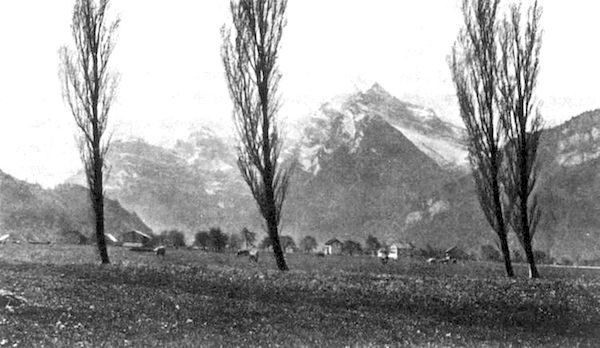

忘却は人間の有する最大の幸福である。私達の目まぐるしい生活が、あらゆる感情の
雑然たる生活の断片を紙に残すのは、この意味に於て明らかに矛盾である。しかもそれを敢えてするのは私の過去に於てアルプスの雪の間に送った月日が、そのいずれの瞬間を思い出しても何の悔ゆることのない、白日に
山に対する時私は云い知らぬ喜びを覚える。しかし読者はこの日記によって同じ感じを得ることが無いかも知れない、がそれはあながち私の負うべき責ではあるまい。何となれば、山のささやくは自然の声であって、言葉は
大正十一年七月
［＃改丁］著者
［＃ページの左右中央］
［＃改ページ］
ローンを右に見る汽車の窓に、むら消えの雪の間に、霜げたがさすが若草か緑の牧も見えて、丘は赤瓦の百姓屋、川やなぎ、ポプラ、背戸に積んだ刈り草の、空はやわらかにうすら
別れ路にまた降りそめし川岸のポプラの群のかおる朝雨。
それもよし、今宵は雪のスウィスである。室にかけたシャモニーの広告もうれしかった。
私は窓ぎわのテーブルに、スウィスの地図を拡げる。もう一人のお客さんは、入り口の方に
川をはなれると、雪はだんだん深くなって、露わなポプラの木立、遠い丘の、これも真白に包まれた上に、尖塔の夕日に閃くのが、何とも云えず美しかった。が、それも暫し、日の沈む頃には、やや谷合いの雪が深くなったと思えば、さらさらと窓に散る、汽車は粉雪に包まれてゆく。アヴァランシュはそのうちふと眼を覚まして、しばらくもじもじしていたが、烟むそうな顔をして出てしまった。あとは一人で気楽である。
とある停車場でガルソンを呼んで、御茶を運ばせる。空はいつの間にやら暗くなって、雪明りか、うっすらと谷水の見えると思ったのは、あらずそは夕月の光りであった。窓の露をふいて外をのぞくと、狭い谷の空にアクアマリンの夕星を見る。粉雪はやんで、谷の雪は尺をたしかに超えていたろう。又一人の男がやって来て、同じ入り口の席によりかかった、こいつもアヴァランシュかなと横目で見ると、声も立てず、ぐっすりと、彼れは穴籠りの
食堂へ出るまでもない、八時には湖に沿うた街の灯がちらちらして、汽車はシェネーフの停車場に着いた。税関の検査も
［＃改ページ］
私が水を見たのは。ただ水と云って置こう、湖から
橋をへだてて、南にはプロムナードからサヴォアの岸のクェイ・デ・ゾウ・ヴィヴ Quai des Eaux Vives、北岸はモン・ブロンの湖岸から、クェイ・ドュ・レマン Quai du L
 man につづいていかめしい宮殿作り、一口に云えば、
man につづいていかめしい宮殿作り、一口に云えば、何にしても、スウィスの雪を踏むだけで、胸のうれしさは隠くしきれない。デジューネーの、銀の壺に盛られた琥珀の蜜も、煙草の名のハイライフも、紅のように頬を染めたあの北風も、今はなかなか忘れられない。こうして、八日は湖水のふちをうろうろして、水を見て、橋を見て、また真白な霧を見て、ただにこにこしている
次の日も靄が深く、小雨まじりにしっとりして、水の都は名を知られたと云う、紀元の空をそのままに、雪路なれば足音も響かず、静かに明けてまた暮れてゆく。
ミュゼーにさすが山の画は多い、小路のそこここに、噴水の雪に埋れているのもうれしかった。何だかしんみりして、月夜ではないかと橋まで出たが、雪明りのどことなくうっすらして、ローンの落ち口の水底は、昼よりかえって白く光っている。
湖ごしに雪の連山を、遠くとも一目見たら引きかえそうと、シェネーフの滞在四日に及んだが、次の日も小雨で、路の雪は解けもやらずそのまま凍って、湖の靄からネーベル・ホルンが、かすかに響くばかり、モン・サレーブの雪の岡はちらっと見たが、その上に表われると云う、モン・ブロンは影も形も見せなかった。
このままでは義理にも帰れなくなった午後十二時二十分（西欧標準時）、街はずれの停車場 Gare des Eaux Vives から、思い切って汽車に乗った。これからシャモニーへ行くのである。
ボンヴィユ Bonneville までは平らな路で、堤に紅いウメモドキとも思われるのが、雪をかずいて美しかった。次第に山に近く、右は切っ立ての岩壁に、直下のアルヴ Arve の渓も深く、タンネの林に
乗りかえて待つ間もなく発車する、シーをかついだ連中が、
［＃改ページ］
 tel で、まだ新築の奇麗な家であった。北向きのヴェランダからは、右にエギュイユが渓の東を東北へ走って、そのはずれのモンタンヴェル Montenvers の蔭から、メル・ドゥ・グラス Mer de Glace がのぞまれる。日あたりの南はモン・ブロンの頂よりも、エギュイユ・ドュ・グゥテー Aiguille du Go
tel で、まだ新築の奇麗な家であった。北向きのヴェランダからは、右にエギュイユが渓の東を東北へ走って、そのはずれのモンタンヴェル Montenvers の蔭から、メル・ドゥ・グラス Mer de Glace がのぞまれる。日あたりの南はモン・ブロンの頂よりも、エギュイユ・ドュ・グゥテー Aiguille du Go ter とドーム Dme du Goter の氷が眉にせまる。が、着いたのは
ter とドーム Dme du Goter の氷が眉にせまる。が、着いたのはさて翌けの日、山村の日曜を想像して見たまえ。眠っているような小村の
たまらなくなって、深い雪の中をあたふたと、たとえば一尺でも山に近づこうとするように、ホテルの前は素通りにして、アルヴの橋を、水には眼をくれる暇もなく、つき当りを左に曲ってボッソンの方へかけつけた。村の奴等は変な顔をして見送っている。
村はずれにも教会がある。女まじりにそろそろ坂道を下りて来るのは、野良着をつけた屈強な大男、夏はガイド、陽気はずれの寒空には、
山は見えず、それでも雲の上には、薄日でもほんのりとさしているようなのに我慢がならず、アルヴをさしはさむ二筋の山脈の、西はフレジェール Fl
g re、東にはメル・ドゥ・グラスの南なるモンタンヴェル Montenvers と、二千
re、東にはメル・ドゥ・グラスの南なるモンタンヴェル Montenvers と、二千午後は氷雨、ヴェランダからやや右よりに、メル・ドゥ・グラスの雲に見えかくれするのを眺めて、ぼんやりしながら暮らしてしまった。山里なれば日の暮れやすく、夜は薄月に小雨して、サロンのピヤノは今宵も枕にひびいて来る。
夜の小雨は、いつのまにやら今朝の粉雪に変っていた、私が二度目に眼をさました、それは八時半頃であったろう、窓をあけてヴェランダに出ると、山脚の樹氷、樅、白樺の小枝小枝は、美しくも飾られて、しんしんと、なお降りつもる雪の中に、朝出されたサヴォアの蜜は凍っていた。
時々ピヤノが聞える、風淀ながらヴェランダに、雪はたちまち、寸を超えてしまった。路をへだてて、
vent の麓に、アルヴを前に見下ろすサヴォイ・パラスか、ホテル・ドゥ・ラ・メル・ドゥ・グラスあたりでなければ、思うような景色は眺められない、然しこれは無精者の、日がな一日、ホテルの窓にかじりついてる連中で、何れにせよ、人口八百の山村と云えば、一足出れば、渓の景色は思うがままに眺められる、谷は東西半昼過ぎは、雪も小降りになったので、買物がてら村をうろついて見た。通りと云うのは丁字形の二筋で、停車場からホテルの前を西に、アルヴにかけた小さな橋を渡るアヴェニウ・ドゥ・ラ・ガル Avenue de la Gare がリュー・ナシヨナールにつき当る、これは、アルヴの西側を、南北に延びた街道で、左すれば、私の来た鉄道の線路に沿うて、彼の氷河の麓、レ・ボッソン Les Bossons やタコンナ Taconnaz の村をぬけて、西にレズーシュ Les Houches につづいている。右すればブレヴァンの直下を、アルヴを右に、上流に向ってエギュイユを渓の向うにして、レ・プラ Les Praz de Chamonix、レ・ボア Les Bois、エギュイユ・ヴェールト Aiguille Verte の北に、グラシエ・ダルジェンティエール Glacier d’Argenti
re のそそぐ所、同じ名のアルジェンティエールから路は二筋に、いずれもマルティニー Martigny へつづくのである。ホテルに近く、アルヴの橋の少し手前を左に曲ると、モン・ブロンの登山者ソウシュール H. B. de Saussure の像がある、モン・ブロンの頂を――今日は見えなかったが――望遠鏡片手に見上げてる、下にはガイド・バルマー Balmat が、これも山頂を望んで、花崗岩の台の上に立って居る。
村はずれにはスケート場やシーフェルトがあって、此の天気にも、気楽な奴等が、中には
かくて日は暮れた。ショムピニヨンとフロマージュの味は今に忘れられない。ヴェランダに出ると、アヴェニウに灯された灯火の蔭には人影もなく、なお降りつもる雪の中に、遠い遠い谷の奥から、折り折りかすかに、しかし底力のあるアヴァランシュを聞くばかりであった、村は、此の大雪に、埋れ尽したと思われて。
正月十三日、今朝も靄は深かった。何気なく姿見にむかうと、その深い靄が晴れかかって、樹氷に飾られたブレヴァンの山が、くっきりと表われた。大急ぎで櫛を放り出してヴェランダへ出る、靄はまだ思い切り悪く、渓にねばついているが、大空は澄んで、山の、低きは雪に、高きは氷に、そして木と云う木、枝と云う枝、渓を包むすべては真白ろに飾られていた。デジューネーをはこばせて、二重窓を開けひろげてたべる、咽喉にはろくに通らなかった、飛び出すとすぐ、レ・プラの方まで撮影に出かけた。
エギュイユはまだ雲に包まれて、ただその上に、靄の中をつきぬけているのは、牙のようなドゥリュー Aiguille de Dru であった。昔から御なじみの山岳が、今そのままに眼の前にそびえているのだから、
十時、朝日はモン・ブロンの一角から表われた、それまでも、南の山はまぶしくって、白熱にさえかえった朝空よりもなお白く、雪の
昼近くなっても、渓間には朝をそのままの靄がたなびいて、ドゥリューの外のエギュイユは、とうとう姿を表わさなかった。宿に着いてものぼせ上って、食事も咽喉へ入らない、ガイドでなくても、山が飯のたしになるとは、さっぱり気がつかなかったが、伝え聞く宝丹満腹も、此の場合には不用と覚えた。
さて昼過ぎ、日はうららかにブレヴァンの空に輝いて、瀑のごとく、絶崖を這い上る淡い靄の上には彼のモン・ブロンから東北へ、シャモニーの渓を限るエギュイユのミディ Aiguille du Midi、プラン Aig. du Plan、ブレィシエール Aig. du Blaiti
re、殊にグラン・シャルモー Grands Charmoz のpublique が物凄かった、その直下にメル・ドゥ・グラスが落ちて、更らに北には、ドゥリューと、千八百六十五年に初めて、ウィンパーが登ったと云う、エギュイユ・ヴェールト Aig. du Dru et Aig. Verte が聳えている。此の氷河のうしろには、モン・マレー Mt. Mallet から北につづく、レ・グランド・ジョラッス Les Grandes Jorasses と、モアン Aig. du Moine が頭を出していた。此等の三千五百米を超えた、ギザギザの西側に比して、渓の東側は余程劣っている、ル・ブレヴァンからエギュイユ・ルージュ Aiguilles Rouges の山脈は三千米を超えず、それでも氷河はあるけれど渓からは、ラ・フレジェールの連脈が近く、タンネやフィヒテの密林に覆われて、三千百九渓は平坦で、屏風のように切っ立てのエギュイユまで、余り高低は見られない、そしてアルヴの水も勿論今は少ない冬の最中ではあるが、浅く小さく、此の柔かな渓の景色にのしかかる山岳の、余りに凄く恐ろしいのに胸はふるえたのである。
前に述べた絶崖の間から、たれ下る大小の氷河の、最も盛んなのは、モン・ブロンの頂上から真北に落ちる二条の、近いボッソンとタコンナの氷河であった。
村はずれに、危険の信号が方々に立ってるので、踏みかためた街道の外は歩けないし、新しい雪でふみ込むから、通路の外に入る事は不可能である。雪の深さは往来でも一米を超えてると思う。私は小さな写真機をぶら下げて街道を南へ行った、村をはずれると、何と云っても、肩のはるほど、渓にのしかかっているのは、彼の四千八百米、アルプスの帝王たるモン・ブロンと、右にエギュイユ・ドュ・グゥテー Aiguille du Go
ter、ドーム・ドュ・グゥテー Dme du Goter、左にはエギュイユ・ドュ・ミディ Aig. du Midi の大山岳である。これから更に左に走るエギュイユは、もう美しいのは通りこして、恐ろしいと云う方が適当であると思う、然し登山に縁なき衆生には、ははアpublique に至っては、見たところ全く硝子の破片で、触ったら手が切れそうに屹えている。大抵の山は、十九世紀に登山のレコードは残されているのに、この山だけは、千九百四年になってやっと片づけられたのでも、登山の困難なのが想像されよう。アルヴに沿うてレ・プラの村へ行く。彼のエギュイユ・ドゥ・ドゥリューの直下から左に切れて、ラ・フレジェールの真下まで撮影に出かけた。もう四時近く、日はエギュイユの蔭に沈んで、やや風立つと、寒くて寒くてたまったものではない。帰りに、スプレンディッド・ホテルに飛び込んで御茶を飲む、山の景色や村の様子は、かえってシャモニーよりもいいと思われる。南の窓からは、谷にもうたなびき初めた夕靄の上に、モン・ブロンが屹えている。
Power dwells apart in its tranquility
Remote, serene, and inaccessible:
Remote, serene, and inaccessible:
日の沈みかけて夕空の、灰色に、すっきりぬけ出た氷の山を仰いで、ぼんやり村へ帰って来た。
Mont Blanc yet gleams on high: the power is there,
The still and solemn power of many sights,
and many sounds, and much of life and death.
The still and solemn power of many sights,
and many sounds, and much of life and death.
正月十四日は曇ってしまった。ブレヴァンは靄の上に見えたが、折り折り粉雪が散って、名残惜しさに村をうろついても、昨日の壮観は得られない。私は最初、マルティニーへ出るつもりであったが、冬の間は電車が通わないので、已むを得ず、またシェネーフへ逆もどりすることになった。午後三時五分シャモニー発、サン・ジェルヴェの乗りかえが四時十分、もう暗くなって来て窓には、息が凍りついて、スティンド・グラスのようになっている。
真っ黒な夜を、汽車にゆられて、再びシェネーフに着いたのは八時過ぎ、湖の湿り気が多いせいか、シャモニーよりかえって寒く感ぜられた。馬車を雇って例のホテルに入る、主人夫婦に喜んで迎えられた。
［＃改ページ］
山を出たせいでもあるまいが、
午後二時十分発車、モントルーへ向かう。右の窓から湖水を見下ろすと、テレースは一面の葡萄畑である。スウィスの酒で第一にあげられるのは、無論ニューシャテル Neuch
 tel の赤酒であるが、このレマンの湖辺のも、決して悪い方ではない。ヴィルニューヴ Vileneuve、イヴォルン Yvorne なども、ヴァレイの酒に比して、劣っているとは思わない。東スウィス、殊にツューリッヒ附近のは、
tel の赤酒であるが、このレマンの湖辺のも、決して悪い方ではない。ヴィルニューヴ Vileneuve、イヴォルン Yvorne なども、ヴァレイの酒に比して、劣っているとは思わない。東スウィス、殊にツューリッヒ附近のは、天気は余り思わしくないが、西の空はほんのりと夕映がして、乗りかえの汽車に入った頃は、もう薄ぐらくなっていた。右はだんだんの丘が例の葡萄畑で、小奇麗なシャレーや、冬枯れのポプラのはずれは、広々とした湖のむこうに、サヴォイの山を仰ぐ筈だが、今は大洋かとも思われる湖をただ見渡すばかり。そして、それもいつの間にか、汽車の灯火に消されてしまって、二度、三度窓をのぞいても、もう私の旅姿が映つるばかりであった。私は地図をひろげて旅程を考えはじめた。
気まぐれにリヨンを出てシェネーフに来たが、旅行の目的は南欧の海岸を廻って、スペインからアフリカに渡るつもりである、ラック・レマンからモン・ブロンが見えなかったので、シャモニーへ行ったのは、そのままマルティニーから、ブリーク、シンプロンを越えて、イタリヤへ入る予定であった、とかく迷いがちな旅烏で、今はローンのヴァレイ Valais を溯って、ブリークからミラノへ行くつもりになった。然し幸か不幸か、今年はレョッチベルクの鉄道 L
 tschberg Bahn が、冬も通っていると聞いて、昔から想像ばかりして居たラウテルブルンネンの冬景色、今は午前十一時過ぎなければ、日の光を仰ぎ得ないと云う、深い深い谷底のことを考えると、矢も楯もたまらなくなって、ロサンヌからの汽車の中で、急にイタリヤ行をのばしてしまった。旅程変更の大原因はシェネーフで買った地図である、殊に水色に画かれた氷河である。スウィスの地図の中で一番いいのは、測量部出版五万分ノ一（平地は二万五千分ノ一）地形図、トポグラフィッシェル・アトラス Topographischer Atlas der Schweiz で、一般にはジークフリート・アトラス Siegfried Atlas と呼ばれている、全国で五百九十三枚、各葉一フランずつであるが、折り本にしたのや、布の裏うちしたのもある、殊に此のシートの数葉をつづけて、特種の登山用に便利なのがある、たとえば、フィンシュテラールホルン附近の如きは、約九枚を合せて折本としてあるし、ユンクフラウの如きは、此の折本中に含まれているが、その外、シャイデック Scheidegg 又はインテルラーケン、ミュルレン、マイリンゲン Interlaken, M
tschberg Bahn が、冬も通っていると聞いて、昔から想像ばかりして居たラウテルブルンネンの冬景色、今は午前十一時過ぎなければ、日の光を仰ぎ得ないと云う、深い深い谷底のことを考えると、矢も楯もたまらなくなって、ロサンヌからの汽車の中で、急にイタリヤ行をのばしてしまった。旅程変更の大原因はシェネーフで買った地図である、殊に水色に画かれた氷河である。スウィスの地図の中で一番いいのは、測量部出版五万分ノ一（平地は二万五千分ノ一）地形図、トポグラフィッシェル・アトラス Topographischer Atlas der Schweiz で、一般にはジークフリート・アトラス Siegfried Atlas と呼ばれている、全国で五百九十三枚、各葉一フランずつであるが、折り本にしたのや、布の裏うちしたのもある、殊に此のシートの数葉をつづけて、特種の登山用に便利なのがある、たとえば、フィンシュテラールホルン附近の如きは、約九枚を合せて折本としてあるし、ユンクフラウの如きは、此の折本中に含まれているが、その外、シャイデック Scheidegg 又はインテルラーケン、ミュルレン、マイリンゲン Interlaken, M rren, Meiringen 等の折本にものせられてある。山岳党にはこれ等の地図が便利で、山岳湖水などの有名な所はほぼまとまっている。
rren, Meiringen 等の折本にものせられてある。山岳党にはこれ等の地図が便利で、山岳湖水などの有名な所はほぼまとまっている。ベルネル・オーベルランドでは、此等のほかにフライで出版されたレリーフ・カルテがある、これは千九百十三年の出版で、その当時、スウィス山岳会の年報に附録となっていたのを、諸君も記憶せられている事と思う、七万五千分ノ一で、ローン、ヴァレイ以北、トゥーン、ブリエンツ以南の山岳の大部分を含んでいる、然し実用上の価値は、前者の精密なのに劣っているのは勿論である、地図の名は Ubersichtskarte der Berner-Alpenbahn 又は Relief-karte der Berner Oberlandes und Oberwallis と称せられる、これには特にシーの通路を示したウィンタースポート用のもあった。
又二十万分ノ一、ベルネル・オーベルランドの地形図 Leuzinger und Kutter: ―Karte des Berneroberlandes は、等高線のかわりに鬚線を用いたので、余りいいとは思われない。
十万分ノ一スウィス地形図に、ドゥフール・カルテ Dufour Karte と云うのがあるが、私は好まない。シャモニー附近のはフレイ出版の十五万分ノ一で、オー・サボォア J. Frey: ―Haute-Savoie。北イタリヤのは同じ様なレリーフ・マップ J. Frey: ―Reliefkarte der Oberitalianischen Seen があるが、余りいい地図ではないが、外には見当らない。次にスウィス全国のでは、キュンメルリーの四十万分ノ一 K
mmerly: ―Gesamtkarte der Schweiz がある、これには別冊の索引もついていた。此等のうち、単に地図としては、無論ジークフリート・カルテが一番であるが、登山用には、シュペック・ヨストで出版されたシュネーフーン・カルテ G. Speck-Jost: ―Schneehuhnkarte という小冊である、これは、一つ一つの山を主にしたむしろ案内記で、その山の地図（ジークフリート・カルテの一部分に登路に赤線を付したるものをそえ、
tel de la Paix と云う停車場近くの宿についた、余り奇麗な家ではないが居心地はよかった。荷物を置くとすぐに街に出て、七時の晩餐まで散歩して来た。靄の深い闇の中でも、湖辺と云う感じは充分に味わわれた。［＃改ページ］
南の窓に、ほかほかと朝日がさし込んで、緑いろのカーティンをあけると、や、寝すごした、南は広々と、レマンの湖の朝もやのたなびいた上に、高く高くグラモン Grammont の雪が仰がれる。
モントルーのホテルから、南表の湖につづく、だらだら路の左には、花園とそのプロムナードに、ひたひたと寄る小さい波の向うには、
私はシャモニーで撮したフィルムを現像にやったが、それはツァイスのベベーでとったので、あまりちいさくって物たりないから、ついでに、ビー・テッサーのついた、カード形の写真機を買って、そこの娘に教えられた路を東へ、ほかほかさす朝日に、また眠くなって来たレマンの湖を右に見ながら、うすらがすんだなか空にぬけいでて、
水は碧玉の、岬の上に聳えている塔の
Lake Leman lies by Chillon’s walls:
A thousand feet in depth below
Its massy waters meet and flow;
Thus much the fathom-line was sent
From Chillon’s snow-white battlement,
Which round about the wave inthrals:
A double dungeon wall and wave
Have made and like a living grave.
A thousand feet in depth below
Its massy waters meet and flow;
Thus much the fathom-line was sent
From Chillon’s snow-white battlement,
Which round about the wave inthrals:
A double dungeon wall and wave
Have made and like a living grave.
古き香とでも云うのかも知れない、かび臭い広間をいくつも通りぬけて、高塔の石の窓から湖にのぞむ。晴れも晴れた、大空をそのままのレマンの水に眠るバルクの、あらずそはシィヨンの沖遠く、
A small green isle, it seem’d no more,
Scarce broader than my dungeon floor,
But in it there were three tall trees,
And o’er it blew the mountain breeze,
And by it there were waters flowing,
And on it there were young flowers growing,
of gentle breath and hue.
Scarce broader than my dungeon floor,
But in it there were three tall trees,
And o’er it blew the mountain breeze,
And by it there were waters flowing,
And on it there were young flowers growing,
of gentle breath and hue.
と、イル・ドゥ・ペイ Ile de Paix の小島である。この
昼過ぎは、湖水のふちのプロムナードを、クラランの方へ歩いて行った。岸には鴎が群れて騒いでいる。夕日がグラモンの峰つづきに沈んで、ヴェイトウの街の灯がキラキラ光り初めるまで、船つきの太い
［＃改ページ］
十七日、朝の
谷は、地図で想像したより意外に広く、ところどころに葡萄畑がある。その両側は直立の絶壁で、垂れ下った無数の氷柱が、何とも云えぬ壮観であった。そしてやはり平坦な、むしろ柔かな谷底に、崩れのこる城跡や石屋根の小村小村を、のしかかるように見下ろしている雪の山々は、たださえうすら寒い汽車の窓に旅人の胸を冷やさずには置かなかった。
ローンの水は浅く濁って、進むにつれて、湖水のふちに少なかった雪はますます深く、ポプラの並木、白樺の樹氷が美しい。鋭い絶崖の右左に開いた谷の、南には、グラン・サン・ベルナール Grand St. Bernard への岐れ路マルティニ Martigny、更らにウィルツシトゥルーベル Wildstrubel の直下、ロイケルバートの分岐点ロイク Leuk。ガムペル Gampel、ラロン Raron を経て、
ge と呼んでいる。気温は余程低くなったと見えて、窓の内側が凍りはじめた。平らな谷底から、絶えず急な山岳を仰いでブリークへ着いたのは日暮れに間もない頃で、停車場前のホテル・ヴィクトリヤに入り込んだ。
［＃改ページ］
イタリヤ風に建てられた石屋根の、山ふところに吹きためられた一かたまりの、ブリークは
私はこの街道をたった一人、南の丘の上にぶらぶら登って行った。村路は狭く、スウィスとは思われぬくらいうすきたない松薪の、山のように積んであった上に並んで、もとより日暮れ近い残り惜しさと云った調子で、がやがや
シンプロンの路はやはり雲につづいていた。人気の無い丘からブリークへ、雪路に漏れた小屋の灯の間に下りて来たのは、日が暮れて二時間もたった後である。宿には私と、
［＃改ページ］
正月も十八日となった。今日は日曜である、霧の深いローネ・タールに鳴り渡る鐘の音に別れて、シュピーツ行の電車は
tschberg Tunnel に入る頃は、雲の上に出てしまって、積雪に反射する日光の強さは、話しにならぬ程であった。このゴッペンシュタイン Goppenstein の停車場は、ウィラーホルン Wilerhorn, 3311m. の登路キッペル Kippel、又はビーチホルン Bietschhorn, 3953m. の登り口のリート Ried への分れ路で、この、ローンから東北に深く深く入り込んだレョッチェンタール Ltschental は、数年前スウィス山岳会の年報の附図で、深く印象をのこされた谷である。殊に、その源、同じ名の氷河を溯って、アーネン・グラート Anen-Grat を左にして、エゴン・フォン・シュタイゲルの小屋 Egon von Steiger Htte から望む、癪にさわるのはこのトンネルである、カンデルシュテークからフェルデン Kandersteg im Kandertal; Ferden im L
tschental にこえるレョッチェン・パッスの、東はシルトホルンからチンゲルホルンへつづくペテルス・グラート Schilthorn, 3297m.; Tschingelhorn, 3581m.; Peters Grat、西はアルテルス、バルムホルン Altels, 3636m.; Balmhorn, 3711m. の山々には、いつの間にやら頭の上を通りぬけて、やれうれしやと車窓を開けて、キラキラ光る雪の上に首を出した時は、ゲンミ・パッスの岐れ路、すでにカンデルタールに入ってしまった。隧道を出ると間もない、カンデルシュテークに着いたのは十一時半。［＃改ページ］
ベルネル・オーベルランドからローンのオーベル・ウァリスへ通う峠路は多くあるが、いずれもトゥーンの湖畔シュピーツをたって、シンメンタールをレンクへ出るか、或はこのカンデルタールを溯って、レョッチェン・パッス又はゲンミ・パッスをこえてゆく。そして旅人の身に沁みるのは、ウィルトシュトゥルーベル Wildstrubel, 3253m. の麓、このゲンミ・パッスをこえて、ウァリスの山を谷の彼方に望む時であろう。が、それも真夏のことで、山巡りの天狗なら知らず、旅烏には峠口へも近づけなかった。カンデルシュテークにも、雪は四尺をこえているくらいである。
私は決して失望はしなかった。停車場についた時は、ここはまた霧でひやひやするばかり、両側の絶壁に、氷柱が滝のように垂れ下って、カンデルの小さい流れを包む白樺には、枝にも、実にも、まっしろに樹氷が咲いている。荷物を雪車につけてヴィクトリヤ・ホテルに行く。
サロンや食堂の広いのも気持ちがいい、昼飯の間に、霧は次第に晴れて、二階の室に戻った時、第一に、眼についたのは、ヴェランダの正面にのしかかった、ビルレンシュトック Birrenstock, 2511m. の鋭い絶壁であった。その右に谷の開いているのはまだ雲の中で、そこに大きく、ブリュームリスアルプの表われたのは次の朝で、午後はさすがに薄ぐらいカンデルタールを溯って、飛び飛びに建てられた百姓家の間をぬけて、深い雪の上を、ゲンミ・パッスの登り口まで行って来た。カンデルに臨んだホテル・アルペンローゼで御茶を飲む、その間に厚くもない雲は破れて、時々涼しい瞳のような蒼空が仰がれる、そして飛んでもない頭の上に、マッシーフな氷の峰が東に北に表われた、それはタトリスや、リンデルホン Tatlishorn, 2966m.; Rinderhorn, 3457m. の連脈であったろう。この雲の暗い峠路は、夏の旅にゆずって、今日は山麓の撮影に日をくらしてしまった。時々寺の鐘の音が、静かな渓底から響いて来る。
ホテルはいいが
例によって眠れない。手紙や日記に暇をつぶしても、頭はますますさえて来て、カンデルの瀬の音の聞えなくなったのは、もう二時に近かったろう。
次の日は晴れも晴れた、デジューネーは室にはこばせて、ヴェランダで山を見ながらカフェーを飲む。室は東むきで、カンデルタールと丁字に向き合ったエッシネン・バッハ
 schinen Bach の正面に、ブリュームリスアルプの山塊が、手に取るように表われる。最高峰は三千六百六十九mlisalphorn、左に雪の尾根でつづいたロートホルン Blmlisrothorn, 3300m.、mlisalpstock, 3219m.; Wilde Frau, 3259m. そしてこれ等の麓は白雪の間に、水色の光る同じ名の氷河が、懸崖の途中までたれ下っている。
schinen Bach の正面に、ブリュームリスアルプの山塊が、手に取るように表われる。最高峰は三千六百六十九mlisalphorn、左に雪の尾根でつづいたロートホルン Blmlisrothorn, 3300m.、mlisalpstock, 3219m.; Wilde Frau, 3259m. そしてこれ等の麓は白雪の間に、水色の光る同じ名の氷河が、懸崖の途中までたれ下っている。●ブリュームリスアルプ
カンデルの谷は、これと直角に、南へ深く入りこんで、ここから見えるつき当り、タトリスの峰つづきで、三つ叉に枝分れして、右に入るのがユシネンタール
 schinental、左はガステルン Gasterntal そしてゲンミ・パッスは真中の、シュワルツバッハ Schwarzbach に沿うて、南をやや右へ登ってゆく。そしてこれ等を合わせたカンデルは、ビルレとフィルシュト Birre und First の間を北に流れて、フルッティゲンにエンクストリゲンタール Engstligental を合わせ、レルヘンバッハにキーンタール Kiental を合わせ、シュピーツの片ほとりに彼のシンメンタールと合して、トゥーンの湖の南にそそぐ。
schinental、左はガステルン Gasterntal そしてゲンミ・パッスは真中の、シュワルツバッハ Schwarzbach に沿うて、南をやや右へ登ってゆく。そしてこれ等を合わせたカンデルは、ビルレとフィルシュト Birre und First の間を北に流れて、フルッティゲンにエンクストリゲンタール Engstligental を合わせ、レルヘンバッハにキーンタール Kiental を合わせ、シュピーツの片ほとりに彼のシンメンタールと合して、トゥーンの湖の南にそそぐ。ヴィクトリヤ・ホテルの横に、サイン・ポーストがあって、エッシネンゼーまで四キロと記してある。例の機械をぶら下げて、その雪路の踏みかためた上を東へ登って行った。村と云っても通りをはずれると、ここには小屋が二軒、積雪の間に見えたばかり、たちまちタンネの林に入って、路は次第に細く、つま先あがりになってくる、ふりかえると朝の鐘の鳴る教会の尖塔も、ホテルの窓も小さくなって、その村の上にのしかかるフィルシュトの連脈が、折りからの朝日を斜めにうけて美しい。
が、谷の雪にキラキラと日のさしたのは、十一時を少し過ぎてのことである。林はどこまでもつづいて、その後ろの絶壁に、遠くから見えたまっしろな氷柱が、タンネの枝ごしに仰がれる、左にはビルレの麓が小さな流れにせまって、その斜面の森の中に、猟師小屋かほそぼそと
●ブリュームリスアルプホルン
同じ路を、またぶらぶら登って来たのは午後一時、もうカンデルタールに日が一面にさし込んで、透明な空気の中にブリュームリスアルプは眼の前にあるけれど、いくら登っても、距離は依然として変らない。タンネの森を東にはずれると、路はだんだん急に、雪は次第に深くなって、たびたび雪崩の跡を登ってゆく、雪路は
樅はだんだんまばらになって、両側の絶壁は覆いかぶさるように近づいて、やや小高い丘に立つと、ブリュームリスアルプはもう頭の上である。その直下、だらだら道を四、五町下りると、湖水のふちに出る。今は云うまでもなく雪に覆われた氷の下で、その三方を取りかこむ断崖の氷柱は、ブリュームリス・グレッチャーと見わけ難いくらい壮観を極めている。湖のふちにその名をとったホテル、――と云うよりもエッシネンゼー・ヒュッテと呼ぶ方が、真面目な態度だと思われる、――宿屋がある。寒くてたまらないから、飛び込んで御茶にありついた。
湖は窓から眼の下で、ブリュームリスアルプホルンは湖べりの樅の梢よりも、更に高く屹えている、日を半面にうけた、ロートホルンの牙のような山稜は、氷河の雪に陰をうつして、ここはもう深い日蔭になってしまった、宿の主婦だか下女だか分らない女に、夏時分の様子を聞いたりして、一時間ばかりストーヴのそばにかじりついていた、そしてカンデルシュテークに戻ったのは五時過ぎで、帰りは一時間しかかからなかった。
●アルペン・グリューン（エッシネンゼー）
ヴェランダに出る。夕闇はもう渓を包んで、しーんとした森の上に、アルペン・グリューンの美しさ！ さすがに高いブリュームリスアルプホルンや、ワイセ・フラウの頂は、最後まで薔薇色に輝いている。そしてどこからとも知らず次第次第に薄らいで、灰色の空に消えてしまうと、ただ雪明りにくっきりと見える樅の梢に、ピカリピカリ夕星が光りはじめた。
夜またヴェランダに立つ、山はうす蒼く、物の精でもあるように、薄ぐらい渓の彼方に屹えていた、そしてその最高峰の右の肩には、星が一つピカッとエメラルドをちりばめたように光っている。山ふところの小村には、
［＃改ページ］
天気は非常にいい。朝は村の間を散歩して、十一時十三分の電車でシュピーツへ向かう。これからも左側の窓が景色がいい。
線路は、まもなく大きな曲線を画いて、絶壁の側面をカンデルグルント Kandergrund の谷底に下りる、すぐ左に高い岩山の上に、取りのこされたフェルゼンブルク Felsenburg の塔の上に、数本のタンネが聳えて、ここを曲る時、やはり左の谷奥に、アルテルスとバルムホルンが表われた。フルッティゲン Frutigen から、なおカンデルの流れに沿うて、ニーセン Niesen, 2366m. の登山鉄道を左に仰いで、山の東の裾をぐるっと廻ると、ここにはもう
宿は例によって私一人で、主人夫婦に女中が二人、気のぬけたようなポルティエと、いつも空腹と見うけられるヴァレーが一人、こう静かでも少々心細い。空は灰色で、シンニゲプラッテ Schynigeplatte, 2060m. やハイムウェー・フルー Heimwehfluh も雲の中。山が見えますと入れてくれた、表二階のソーファによりかかっても、正面のラウテルブルンネンは、両側の山脚に、黒木の梢の外は真白ろな霧の海で。
ランチが終るとすぐ街に行った、ニクレスと云う写真屋で、現像を頼みがてら、禿頭のおやじに、散々油を売って来た。カフェーをのみながら新聞を読んでると、主人がやって来て、山が見えますよと云う、玄関に出ると、ルーゲン Rugen のすぐ上に、ラウテルブルンネンの霧の間に、
tschine の流れに沿うて、ユンクフラウの直下、ラウテルブルンネルにつづいている。私はこの街道から左にきれて、ルーゲンパルクの森の中を、日暮れまでぶらついて帰って来た。トゥーンとブリエンツ Thunersee und Brienzersee をつなぐアーレの南に、北はハルデル Harder の山つづき、前には左にシンニゲプラッテ、右にルーゲン Kl. und Gr. Rugen からアーベントベルク Abendberg の山脈にかこまれた、インテルラーケンの平地は、土地の人達にボェーデリ B
deli と呼ばれておる。インテルラーケンは云うまでもない二つの湖水の中間で、ボェーデリはシュウィーツエル・ドイッチの小さな平野を意味している。この平野は、ブリエンツからトゥーンにそそぐアーレの流れに両分されて、南はインテルラーケンとマッテン Interlaken, Matten、北岸とトゥーンの湖水とにはさまれたウンテルゼーエン Unterseen とに分れておる。そしてインテルラーケン・プロパアは、やはりアーレに並行したホョーエウェーク Hheweg の大通りで二つに分かれて、主なホテルや商店の大部分は、ここに、軒を並べておるわけであるが、今は何にしてもシーズンはずれで、街は軒先の氷柱と共に静まりかえっている。［＃改ページ］
ラウテルブルンネンはその文字の示す如く、「泉ばかり」の谷であって、リュチーネの流れをはさむタンネ、フィヒテの林の裏は、すぐ直立の絶壁になっている。インテルラーケンから見る
Es ist vor ihm wie bei allem Grossen; solange es Bild ist, so weiss man doch nicht recht, was man will……
と書きかけたのは、千七百七十九年十月九日の午後六時半、彼れがトゥーンの湖を渡り、ウンテルゼーエンに舟をすてて、この大瀑布の下についたのは、同じ日の午後四時三十分であったと云う。
私は今、雪に埋れた白樺や、トウヒの密林を、汽車の窓から見あげながら、薄ぐらい谷底をのたくる、蒼白いリュチーネの流に沿うて、溯った時、空は晴れていたか、今は頭に残らぬくらい、ただ暗い暗い感じより外は、何物もなかった、そして、やや開いたラウテルブルンネンの村で下りて、かちかちに凍りついた村道を、その滝の直下、同じ名の宿に着いたのは午後三時、谷はもう片蔭になって、見上げる瀑布の絶壁をかざる、一面のつららを仰いで、その紀行を思いだした時、渓の空は濃く深く澄みきって、かすれ雲の一つ二つ、ミュルレンの空にたなびいていたのを覚えている。
ホテル・シュタウプバッハは
日はとっぷりと暮れてしまう。二重窓に冬の夜をさえぎって、瀬の音の響くサロンのストーヴの、真紅な火を見つめながら、夜は静かに更けて行く。
旅とは云え実に急がしい、夜になっても通信やら日記やら、案内記の下調べだけでも、随分楽ではないが、
［＃改ページ］
夜明けは
食事がすむと、小さなスゥートケイスを停車場へあずけさせて、雪の深い崖路を、ウェンゲンの方へ登って行った。リュチーネの橋を渡るとすぐ登りになって、ラウテルブルンネンの村は、もう眼の下になってしまう。そして両側の切り岸は、
ウェンゲンに着いたのは、一時間半もたった後で、無論、人っ子一人に逢わなかった。朝日はユンクフラウの一角に輝きはじめて、その雪は白熱にさえかえって居る、そして直下、ラウテルブルンネンはまだうす暗く、淡い
私はウェンゲンの村を歩き廻ったあげく、ホテル・アイガーと云うのに入りこんで昼食を命じた。村はラウテルブルンネンの頭の上を、やはり南北にのびた台地にあって、そのはずれはユンクフラウが、樅に覆われた小山の上に半空を領しておる。村の後ろはやはり急な斜面で、雪を浴びた樅の梢が、折りからの朝日に美しい。
●ミュルレンよりメョンヒとアイガーを仰ぐ
下りは電車に乗った。二時十分にウェンゲンをたって、半時間ばかりで、ラウテルブルンネンに帰って来た。ステーションにあずけた荷物を受け取って、すぐケーブルカーに乗りかえて、崖の上のグリュッチ Gr
tsch にゆく、ユンクフラウとメョンヒ、アイガーは、登れば登るほど高く大きく見えて来る。グリュッチで電車にのりかえると、二rner が見える。晩餐にはまだ間があるので、本館に行ってカフェーを飲みながら、その窓から、またしみじみと氷の山を見つめた。見れば見るほど恐ろしいのはユンクフラウの絶壁である。此のラウテルブルンネンに面したロッタール・ヒュッテ Rottal-Htte から登るのは、最も危険な登路の一つであって、絶壁の雪がすっかり解けて、岩の乾いている間でなければ、不可能であると称せられておる。シャレーに帰って、煙草をくゆらせながらテレースに出ると、驚いたのは、今宵のアルペン・グリューンである、今述べた山々の頂は、まるで火のように真紅である、そして雪の蔭のコバルトを帯びた、その対照が実に美しい。眼下になだれ落ちるユンクフラウの絶壁の、裾は靄がたなびいて、マッテンか知らず、渓底の小村には、小さい灯火が動きはじめた。アルペン・グリューンはたちまち淡くなって、最後までほんのりと赤く見えたメョンヒが消えてしまうと、もう山は暗くなって、三つ星が、ユンクフラウの右の肩に光りはじめた。アイガーの左にちらちら灯の見えるのは、ウェンゲルン・アルプである。
ニューシャテルの酔に乗じてそぞろあるく。オリオンはすでに高く登って、今、ユンクフラウの雪をはなれんとするのは、大空の星のなかに、私の好きなシリゥスであった。夜は静かに更けて、千八百尺の渓底から、瀬の音がかすかに響いて来る。
次の日アルメントゥーベル Allmendhubel, 1938m. に登る。朝起きてカーティンをあけると、昨日のような上天気、空は水のように澄み渡って、アイガーの半面に強い朝日がさしていた。朝食をすませると、すぐその足で、村の真中にある停車場から、ケーブルカーでアルメントゥーベルの頂上まで来た。そうして七尺を超えた雪の上に立った。これをとりまく山々は、――私は形容する言葉を知らない、――諸君の想像にまかせるとしよう、ただその景色を想う時、東面の山は日の蔭に暗く、南の山脈は、斜めに朝日をうけた無数の氷河に飾られて、西を取りかこむシルトホルンの連峰は、まともに強い光を浴びて、眼もあけぬくらいであったことをそえて置こう。そうして時のたつにつれて、ユンクフラウの右、グレッチェルホルン Gletscherhorn, 3982m. につづくエーベネフルーの、カミソリのような氷のアレトに、朝の日が登りはじめたとつけ加えて置こう。
私は、かちかちに凍りついた雪の上に、腰を下ろして茫然としていた。この時、地の底が崩れ落ちたようなすさまじい
ttlassen, 3197m. の方面、及び低い雪田につづいて、西から北へ此の山を取りかこむ、ビルク Birg, 2678m. とムットホルン Mutthorn, 2426m. の斜面にしばしば見うけられた。ラウテルブルンネンタールの対岸には、昨日行ったウェンゲンのホテルが雪の間に散らばって、その背にはチュッゲン Tschuggen, 2523m. からメンリッヘン M nnlichen, 2345m. につづく低い山稜の彼方に、ファウルホルン Faulhorn, 2684m. シュワルツホルン Schwarzhorn, 2930m. などバッハアルプ Bachalp の山々が望まれた、そして山懐と云ったようなアルメンドの村は、直下の雪の中に、ほそぼそと煙の糸のように紫なのが、純白な斜面に美しい。
nnlichen, 2345m. につづく低い山稜の彼方に、ファウルホルン Faulhorn, 2684m. シュワルツホルン Schwarzhorn, 2930m. などバッハアルプ Bachalp の山々が望まれた、そして山懐と云ったようなアルメンドの村は、直下の雪の中に、ほそぼそと煙の糸のように紫なのが、純白な斜面に美しい。私はまだスウィスの山は知らない、しかしまだ日本にいて、毎日毎日ペデカーの案内記や、ボールの山岳案内記 Ball; ―The Alpine Guide Book にうつつをぬかしていた頃から、このアルメントゥーベルの台地と、ツェルマットの山寄りリッフェルベルク Riffelberg シュワルツゼー Schwarzsee はどんなことがあっても、必ず行こうと決心していた、バッハアルプのファウルホルンも望みの一つではあったけれど、今朝、食堂にぶら下げてあった、ユンクフラウの登山鉄道が、クリスマスから二月まで開いてあると云う広告を見てからは、山に離れた展望だけでは、腹の虫が治まらなくなってしまった。しかしミュルレンの眺望に、充分な満足を得たのは事実である。
アルメントゥーベルの雪の上を、四時間ばかりうろついて、又ケーブルカーでホテルに帰ったのは午後一時である。切符は登り一フラン半、下り一フラン、往復二フランであった。
食堂に出ても上の空で、カフェーも飲まずに飛び出してしまった。そして例の絶壁の上を、ラウテルブルンネンタールに沿うて北へ、深い雪路をグリュッチに行った。実を云うとミュルレンから仰ぐユンクフラウは余り大きすぎて、メョンヒ、アイガーはその偉大な山容に圧されて、あれども無きが如しと、云った程ではないにしても、あまり釣り合いはとれていない。グリュッチに近づくほど、此の三山がほぼ等距離に並んで来て、谷に絶崖にすくすくと梢をならべた、樅やフィヒテのなか空に屹えているのは、セガンティニでも、ラスキンでも、もう画や筆の問題ではなくなってしまう。殊に眼ざましいのは三つの氷河、右なるはギーセン Giessen-Gletscher、中央はグッギー Guggi-Gletscher、そして左、アイガー・グレッチャー Eiger-Gletscher の、斜めに日を浴びた、澄みわたった冬の午後であろう。この三つの氷河の裾は、シュワルツ・メョンヒの直下に、深い深いゴージを刻んで、トゥリュムメル・バッハ Tr
mmel-Bach の瀑布となる。今、私は昨日の朝、咽喉をつりあげて岩壁の氷柱をあおのいた、あのシュタウプバッハの上流にたって居る。冬の日の風は死して、寂としてはやホテルに帰る夕ぐれの路は、風こそなかったが、随分寒かった。室に入ると、窓にぱっとうつるアルペン・グリューンは、昨夕に変らず美しい。ソーファに
［＃改ページ］
nch の発音さえ電車はグリュッチと、ラウテルブルンネンで乗りかえて、一昨日来たウェンゲンを過ぎると、渓をへだてたミュルレンの対岸をだんだん南へ登ってゆく、ここは一面に雪をかぶった樅、唐檜の密林で、その上に、ユンクフラウが屹えているのは云うまでもない。ウェンゲルンアルプを過ぎて、ややなだらかな山の斜面をぐるっと廻って、クライネ・シャイデック Kleine Scheidegg に着いた。すぐ前はアイガー・グレッチャーで、すっかり雪に覆われた此の高原は、朝日をまともにうけて、眼もあけられぬくらい光っている。今迄の電車はベルネル・オーベルランド・バーン Berner Oberland Bahn で、更にグリンデルワルトにつづいて行く線路であるが、今は雪が深いので、冬の間は、ここが此の線の終点になっておる。ユンクフラウの登山鉄道は、ここからアイガー・グレッチャーに沿うて登ってゆく、客は私を入れて五人しかいなかった。
十時半に発車、ここからユンクフラウ・ヨッホまで往復二十九フラン、夏の三十二フランよりは、客が少ないだけに割引きしてあるが、五
tte に一夜をあかして、次の日、ウンテレス・メョンヒ・ヨッホからオーベレス・メョンヒ・ヨッホを越え、ユンクフラウ・ヨッホに出てフィルンを横ぎり、これから初めて、ユンクフラウの急斜にかからなければならなかったのだ。私は渡欧前の数日を加賀君の邸で送った。今ここに来ると、停車場の待合から、君のファルボーデンフーベル Fallbodenhubel を廻ると、アイガー・グレッチャーの停車場で、すぐ左はアイガーのグラートになっている、これからはトンネルで、次のアイガー・ワントには停車せずに、標高一万三百七十
初めは眩しくてなんにも見えなかった。無理に眼を見ひらくと、第一に気がついたのはアイスメーヤのギザギザに割れた氷河の向うにつづいたシュレックホルン Schreckh
rner の連脈で、殊にオーベルラント第一の嶮山、急な岩角が雪も氷もはじきかえして、真っくろに尖っているグロース・シュレックホルン Gross-Schreckhorn, 4080m. であった。その左は一段低く、グリンデルワルトのウェッテルホルン Wetterhrner で、よく昔から写真で見うけるハスリ・ユンクフラウ Hasli-Jungfrau, od. Vorderes Wetterhorn, 3703m. よりも、まんなかのミッテルホルン Mittelhorn, 3708m. が立派である、その後はこれも三山の一つなるローゼンホルン Rosenhorn, 3691m. で、此等の山塊とシュレックホルンの中間に、ベルグリシュトック Berglistock, 3657m. がひかえている。ベルグリはドイツ語の Berglein で、「小さい山」を意味しておる、何故にベルグリなのかは、その立派な山容に対して解釈に苦しむ次第である。ベルグリの小屋はこの停車場から行くのであるから、位置は全然その山とは別の方向で、ずっと右手にあたっておる。これらの間、即ち今立って居るトンネルの眼下には、アイスメーヤとグリンデルワルトの氷河 Unter-u. Ober-Grinderwlder Gletscher がはさまっているから、その小屋は山と同じ名ながら、すぐ右手に近く、ベルグリシュトックはこの氷河を越え、クライン・シュレックホルンをこえて、二日路に余っておる。私は岩にくりぬいた窓に登って、めちゃめちゃに撮影した。車掌にせきたてられて乗換えの電車に乗る。これからトンネルはメョンヒの地中を穿って行くので、硬い石灰岩の洞は、電灯に照らされて光っている。クライネ・シャイデックから一時間二十分ばかりで、終点のユンクフラウ・ヨッホに着いた。停車場につづいた、トンネルの中にレストラントがある。名づけてホテル・ユンクフラウヨッホは少々大袈裟な名前で、寝室は二室しかない、寝台が三つずつ、先ず小屋が正直な命名であるが、海抜一万一千三百余呎、しかも冬の真中のことであるから、高くて（標高ではない）まずくとも、あえて食事に不足を云うべきではない。ビュフェーを兼ねた食堂の正面は、ユンクフラウ・フィルンに臨んだテレースで、それをへだててやや右に、久恋のユンクフラウが屹えている、が、まず何よりも眼につくのは、頂上から東に曳く山稜の氷を削って磨きをかけた、ピック・マティルデ Pic Mathilde の一峰であった。左には欧洲一の氷河グローセル・アレッチ・グレッチャー Grosser Aletsch-Gletscher がなそいに低く、そのつき当りは三角形のエッギスホルン Eggishorn から、なお右に曲り込んで、ローンの谷はここからは見えない。
テレースにはツァイスの望遠鏡がそなえてある。氷河の左には、カンム Kamm, 3870m. の裾に二つの小屋が認められたる、そこはコンコルディヤ・プラッツ Konkordia Platz であった。ここから見るユンクフラウは、決して雄壮とは云えない、ただ頂上から南へひくアレトの、ロッタール・ザッテル Rottalsattel、ロッタール・ホルン Rottalhorn、そしてその背後に崩れかけたようなグレッチェルホルン Gletscherhorn と、いずれも四千
トンネルで更に小屋から北口にぬけると、
チョコレート・ソルディアーみたいな電車の車掌さんが、呼子の笛を勲章まがいに胸高に帯びて、ちょこちょこやって来ていろいろ世話をやいてくれた、なんでも私が果してどこの人間なのか余程興味をもっていると見える、あれがアイガーでこれがメョンヒ、その後ろに見えますのがトゥルークベルクと、人をつけ子供でも知ってるような山の名前を並べやがる、時にあの山はなんだいって知っていそうもない、
食後のカフェーはテレースにはこばせて、そしてひろびろとした氷河を見下ろした、すぐ前のユンクフラウ・フィルンには
●ユンクフラウヨッホよりユンクフラウ（右）及びロッタールホルン（左）を望む
私はテレースに出たままで、フィルンの上を眺めていた。アレッチ・グレッチャーにはもう片陰が出来て、クレヴァスが黒く見えはじめた、二時半頃にその雪のはずれ、ロッタール・ザッテルの直下、ユンクフラウ・フィルンの上に黒点があらわれて、望遠鏡でのぞくと、三人の男がシーをつけて、フィルンの雪をけってまっしぐらに下りて来る、此の連中は半時間もたたない
さてこれからが支度である。何にしてもスゥートに重いウルスターではどうしようもないから、少々汗臭くはあったが、ガイドのスウェターを拝借することにした。白のミュッツェと巻ゲートルはいいが、小屋で借りたネイルド・ブーツは大き過ぎて、いくら靴下を重ねてもパクパクしている始末、アルペンシュトックの方は余り短かすぎて、本当に突いてると腰が二重になりそうだった。が、何を云うにも借物だからあまり贅沢を並べる場合ではない。反射よけのグレッチェル・グラスは小屋で三フラン半で買った。まずためしにこんな道具に身をかためて、小屋の前を下りてフィルンの上に出た、グレッチェル・グラスをかけると、雪の陰影が蒼く見えて、まるで世界がちがったように物凄い。午後の雪はさすがに柔かくて、カンジキ無しではとても歩けないくらいだ。フィルンにつづくアレッチ・グレッチャーには、西側の山の蔭がギザギザに影って、その陰影は刻々に氷河を横ぎって、東の山脈、トウルーク・ベルクからカンムにつづく雪の山に片かげがさし始めた。見上げると小屋は、忘れられたように雪の中に寂として、見渡す南の方、十里にわたる氷河は、人の生れなかった世をそのままにしんとして、彼方の空、ワリーゼル・アルペンにアーベント・グリューンが望まれる。日が入ると急に寒い、雪の斜面を登って小屋に帰る、ためしに歩数を勘定したが、楽に登れるのが先ず二十歩、五十歩ではとても休まずにはいられない、無理に登ったら、百歩にして眼が廻った。
小屋のテレースに着くと、例のガイドがやって来た、一人はフリッツ・シュトイリ Fritz Steuri、赤っ面の四十男で気軽な奴で面白い、もう一人はフリッツ・カウフマン Fritz Kaufmann、これはだんまりで年は三十位だと思ったら、僕よりも若いんだそうな。
もう外は暗くなってしまった。日が落ちると、気温は急に低くなって、今日の昼、丁度零度を示していたのが、もう零下十二度に下がっている。
室に入ると、さっきの英人がアドレッス・ブックを持って来て、日本人がいましたよと教えてくれた、それには片仮名でこう書いてあった。
日本帝国 東京 大関久五郎 地理学を修むる者
此宿ノ人ノ話ニ拠レバ、コレ迄吾日本帝国民ニシテコヽニ泊ッテ Jungfrau ニ登ツタ人ハ無イトノコトデス、本当カウソカハ私ハ知リマセンガ、兎 ニ角 コヽニ吾邦人ニシテコノ後コヽニ来リ宿ル方ニ対シ御免ヲ蒙ツテ私ノ名ヲ日本語デ書イテ置キマス。
九月二十四日
九月二十四日
これは千九百十二年のことであった。成る程こう云えば「この小屋から登った日本人」のファースト・アッセントである。
英人名はリチァード・カリッシュ Mr. Richard Kalisch、マンチェスターの住人で、独逸語、
晩餐はウィスキー・ソーダで平らげた、ネイルド・ブーツの底ではないかと思ったステークも、丸呑みにすれば決して硬くはない。
飯がすむとガイドをつれて、例のトンネルをぬけて再びユンクフラウ・ヨッホの雪の上に立った。ピック・マティルデは星あかりで蒼白く光っている。そして大空は梨地の星で、メョンヒ、アイガーの巨人のように屹えた左に高く、北斗七星がかかっている。気温は零下十三度、思ったよりは温かい。雪田のはずれに立って、下界を見下ろした、そこには半点の靄もない、足もとにぴかぴか光っているのは、クライネ・シャイデックの停車場で、少し左にはグリュッチュとウェンゲン、真ン中に二つ並んでるのはインテルラーケンとウィルデルスウィルであった。トゥーンの街の灯はずっと左に望まれる、そして更らに更らに遠くぼーっとうす赤くにじんでいるのは、首府ベルンの灯火であった。夜は寂として物の音も響かぬ、
リキュールをひっかけて、また山人の仲間入りをした。十時過ぎに此の連中は、私達のガイドを残して、みんな下りてしまった。彼等はクライネ・シャイデックから遊びに来たんだそうな。話もいい加減にきりあげて寝室に行く、私達二人とガイドの一人で一室を占領した、東の窓に白いカーティンがかかってると思ったが、気がつくとそれは小屋を埋めた積雪であった、室は少し暑すぎる位で、何だか落ちついて眠れない、明日の出発は午前八時である、夏ならば雪が柔かいので、午後氷河の上を通過するのは全然避けなければならない、無論、山によっては登りに八、九時間を要し、下山にもほぼ同様、もしくはそれ以上もかかるものがあるが、こう云う登山は最、危険に属するので、いくら夜半に出発しても、午後の危険はまぬがれない、この点に於て冬の方が安全であるが、反対に雪に包まれたクレヴァースに注意しなければならない、そしてアヴァランシュも夏の新しい雪のあとより少ないには相違ないが、現に寝室に入ってからも、遠雷のようにしばしば聞えたくらいで、日の強い間は決して安全とは云い切れない。
眼を閉じてもますます神経は過敏になるばかりで、昔から想像ばかりしていたユンクフラウに登れると思うだけで、胸の鼓動ははげしくなった、そうそうまだ学校にいた時分、編輯会の帰りだったか、高野君の所に大勢で泊った事があった、暁方の夢に中村君と二人登山をして、私が頂上の写真を撮そうとすると、中村のひょろ長い半身が霧の中に入ってて、いくら待ってても写せなかった、覚めて話したら大変叱られた。天気はどうだと思って西側の窓をのぞくと、ユンクフラウは真白に屹えて、丁度その上に沈みかけるオリオンが見えた。折り折り遠くアヴァランシュを聞く。時計を見るともう三時に近い。
［＃改ページ］
ユンクフラウ登山
（一九一四・一・二五）眠られないと云ってもやはりとろとろしたと見えて、ガイドに起されたのは七時であった。
午前八時出発、ガイドは二人ずつ同勢六人である。小屋を下りると、すぐ輪カンジキをつけて、ユンクフラウ・フィルンを横ぎりはじめる。ここから正面のロッタール・ザッテルの取りつきまでは、だらだら上りの雪田で、私達の通る近くにはクレヴァースは見あたらない、雪は凍ってはいるが余り硬くはない、丁度フィルンの半分もこえた時分に日が当りはじめて、もうグレッチャー・グラスなしでは我慢にも歩けなくなった、雪田は決して急ではないが非常に
先ず一やすみする、これからザッテルまではなかなか急で、あおのくと、さか落しの雪の間に蒼く光ったクレヴァースが口を開いてるようで物凄い。煙草をふかしたり撮影したりしている間に、ガイドはリュックザックからシュタイクアイゼン Steigeisen を取り出して、輪カンジキと取りかえてくれる、それからロープですっかり縛られてしまった。
cke があるからむしろ恐くはないが、小さな奴を飛びこすと、動悸がして動悸がしてたまらなかった。やがて中腹の一番大きなクレヴァースに達する、思いきって飛びこしたら訳はなかった、深さは三百登りきった景色はすばらしい、西は直下のラウテルブルンネン・タールを深く深く距てて、一面に雪の山の果てには、ただ蒼空があるばかり、それには一点の雲も浮かばない。アルプスにいくつの山岳があるか私は知らない、諸君も数えたことはあるまい、然しその数の多い山の中で、人に知られた名峰の殆んど全部はここに書き上げることも出来よう、私がこのザッテルに立った刹那、第一に、ああ美しいと思ったのはワイスホルンであった、それから、
ふりかえると、眼下にひろびろと横たわるユンクフラウ・フィルンをへだてたトゥルークベルクと、更にその背後エーウィッヒ・シュネー・フェルト Ewig Schnee-Feld をへだてたグリューンホルンの連脈 Gr
nhrner―Gross-Grnhorn, 4047m, Klein-Grnhorn, 3297m. の上にフィンシュテラールホルンが屹えている、しかしこれはグリンデルワルト方面から見るように、鋭く尖った様子は見られない。それから更に右につづくのはロートホルン Finsteraar-Rothorn, 3549m. であった。メョンヒ・アイガーは極めて近く、メョンヒの右にはシュレックホルン山塊 Schreckhrner.; Gross Schreckhorn, 4080m.、アイガーの左にはウェッテルホルンを見る、ユンクフラウの斜面に横たわる無数のクレヴァースは、まともに朝日をうけて水色に光っているのが何とも云えず美しい。私は雪の上で雀躍りして喜んだ、そして明日はメョンヒに登ろうと決心してしまった。実際この景色を見ては、二、三年この近所にうろついて、山と云う山をのこらずきわめてしまいたくなるのは、あながち私一人ではあるまい。冬の真中でも、ユンクフラウ、エーベネフルー、フィンシュテラールホルン、ウェッテルホルン等には登れるし、メョンヒにも今月初めに一人登った組があったそうだ、無論、夏よりは危険なのには相違ないが、
暫く休んで急なアレト Ar
 te をステップ・カッティングをやりながら頂上に向かう。危険と云えば危険だが、脇眼さえしなければ大丈夫だし、苦しいには相違ないが愉快だから何ともない。
te をステップ・カッティングをやりながら頂上に向かう。危険と云えば危険だが、脇眼さえしなければ大丈夫だし、苦しいには相違ないが愉快だから何ともない。私はミシャーベル Mischabel, 4554m. が気になって、時々ふりかえってはさがしたが、少しアレトを登ると、ラウテルブルンネン・タールを限る山稜の上に、実に立派に表われた。中央の突起は云わずと知れたドームである、がアルプの山の中に、最、美しいのは東にオーベレス・アイスメーヤ Oberes Eismeer の上に並んだシュレックホルンと、西南には
ロッタール・ザッテルに下りてから昼飯にすることにして、イヴォルンだけ飲んだが、これも冷たくってちっとも酒らしく思われない。
●ロッタール・ザッテルよりフィンシュテラールホルンを望む
頂上から見る山岳の記載は、とりもなおさず、欧洲の山岳誌である、東はティロールの山々から西はサヴォイ、南はピエモンの山脈からロムバルディヤ、北は
展望はいいが寒くてやりきれない、一時間ばかり雪の上にいた後、また同じアレトを注意して、ロッタール・ザッテルまで下りて来た、そしてここで弁当を平らげた、ワインの味は格別である。暫くすると、下から三人づれで登って来る連中がある、ガイドはシュトイリの弟で、
四十分ばかりたつと、カリッシュ君の一行がやって来た。これも随分早かったそうだ。改めて昼飯を食い、改めてワインを飲んだ。同君は、明日アレッチ・グレッチャーを下って、ドライエックホルン Dreieckhorn の直下から右にグローセル・アレッチ・グレッチャーを登って、エゴン・フォン・シュタイゲルの小屋から、レョッチェンタールを辷って、ゴッペンシュタインの停車場に出るんだそうな。私は後、スウィスの旅行を終って、約束の写真を送った、その返事はシチリヤ島のパレルモで受け取ったが、君は計画通り無事に、カンデルシュテークに着いたとしてあった。午後も、夜も、山の話でもちきった、日本で何とか云う人を訪問して、御辞儀の馬鹿馬鹿しいのに驚いたと云ってる。これはあながち同君ばかりではない、日本の年寄りに挨拶する時は、上眼で対手の禿頭に注意して、時期を見計って御辞儀を切りあげるんですと、教えてやったら、「なーる！」って大変感心していた。それから日本人は妙ですね、細君がちっとも出て来ませんねなんて云ってた、「僕ならすぐ紹介しますよ」と答えてやったら、大口あいて笑い出して、結婚したらどうぞ是非、なんて頭から人を若輩にあつかってる、マンチェスターに訪問の約束をしたが、まだ訪ねて見ない。氏の持ってたシーの地図を見ると、エーベネフルー、フィンシュテラールホルン、ウィルデフラウ、ウェッテルホルン等には冬でも登山が出来るとしてある、但しユンクフラウも同様で、山の斜面はシーを利用して、それから上はクライミング・アイヨンをつけるのは勿論である、そして夏より危険が多くって、困難なのは云うまでもない。随分おしゃべりをして、もう十一時過ぎになってしまった。
［＃改ページ］
メョンヒ登山
（一九一四・一・二六）ユンクフラウに登りかけた時、我慢が出来なくなって、いよいよ今日はメョンヒに登る事にした。
ユンクフラウと共に、メョンヒの名の知られたのも随分古いことであるが、どこの山岳も同じようで、果してそれが今の山頂に与えられた名であるかは、比較的近代まではっきりしていなかった。最初に文字に残された M
nch と云う名は、千六百六年のことで、然しそれはシュワルツ・メョンヒを意味していたと想像される。千七百十六年に、Mnch in Grindelwald と云う語が用いられておると云うが、いずれの山岳を云ったものかはっきりしていない。十九世紀になって表わされたベルンからの見取り図にも、ユンクフラウに並んでシュネーベルク Schneeberg と、ガイスベルク Geisberg と記したのがある、前者はアイガーであって、後者はメョンヒである、そしてアイゲルス・シュネーベルク、及びアイゲルス・ガイスベルクと云う名や、インネル・アイゲルとか、ヒンテル・アイゲル Innereiger.; Hintereiger など、区別されているところを見ると、我がメョンヒはむしろ、アイガー、四千登路はいろいろあるが、そのいずれも「危険」の部に属する、殊に冬の登山には、ただメョンヒ・ヨッホから、アレトをつたうて登るよりほかに仕方はない、幸い天気つづきで、
小屋を出たのは朝の八時十五分、見下ろすアレッチ・グレッチャーの右に、ドライエックホルンの頂は、朝日を少しうけて光りはじめた、私達は小屋の人達に送られて、ユンクフラウ・フィルンの上に立った、そしてカリッシュ君の一行と再会を約して握手した。メョンヒに行くには、フィルンからもう足跡も無い純白な雪の上を左に登って、クレヴァースの間をよけながら、トゥルークベルクの直下を、北へ北へと登ってゆくのだ。雪は思ったより軟かく、輪カンジキのままでも膝まで踏み込んだ。昨日にこりて今日は
stliches Jungfraujoch である、ここと、昨日私がオーベルラントを私は茫然として、ガイドは氷に覆われた、とある岩角にどっしと
私達は雪車とシーと輪カンジキを、此のヨッホの岩角に残して、シュタイクアイゼンをつけて立ち上った。今日は少し風立って、アレトの雪の吹きまくるのがしぶきのように望まれる。折り折り左側の絶崖にアヴァランシュが起って、粉雪が霧のように吹っ飛んで来る、ガイド達は立ちどまってじっと見下ろしている。とても登れないと宣告されるかとびくびくしていたが、二人とも石像のように、なお黙々としていた。崖の下からしきりにアヴァランシュが聞える。メョンヒ・ヨッホからアレトにかかると、間もなく急な岩壁を登らなければならない、それがすっかり氷で覆われて、アイスピッケルは見事跳返されてしまうし、カンジキもこうなるとあまり役に立たないので、どうも非常に恐ろしかった。岩角を登りきって、またも吹きしきるアレトの上に、きっと絶頂を見上げると、雪のアウトラインは吹雪にうっすらとぼかされて、西の風が直下グッギー・グレッチャーからまともに吹きつけているのが手に取るように仰がれた。シュネーシュトゥルム！ 重く濁ったシュトイリの声が、疾風の間にもずんと鼓膜にこたえた。然し、彼はもう何事も云わない、カウフマンも黙して私の後を登って来る、私は勿論、駄目だ！ と宣告されるのが恐ろしさに、そ知らぬ顔で息をころして、吹雪の中を登ってゆく。然し風速はあまり変らず、私達の希望した通り、むしろ案外早く、十時四十分には絶巓の雪の上で雀躍りして、グリュッセを叫び、握手をして、さて四方を見廻した。西に近いのは勿論ユンクフラウである。ユンクフラウ・ヨッホの小屋は、ここからは見えないが、ユンクフラウ・フィルンからロッタール・ザッテルと、昨日の登路はありありと見渡される。
北側はアイガー・グレッチャーの上にのしかかった直立のワントで、右にアイガーがギザギザに割れたグラートに
風は時々思い出したように吹きすさぶ。今日も山と云う山はすっかり見える、ただインテルラーケンからトゥーンへかけて、ちょうど湖のように雲が棚引いて、その厚い敷布の上に、ニーセンが置き物のように屹えていた。すぐ眼の下はクライネ・シャイデックで、ここから唾をしたら、山神の霊雨と麓の人達は思うであろう。グリンデルワルトは村はずれが見えるだけで、アイガーの蔭にかくれておる。
幸い、風は少し吹きやんで来たが、記念の撮影をする時分には、厚いハントシューに包まれた手先も凍って、思うように
下り路は同じステップを踏んで降りるので、初めの
鋭い岩角を、一足ずつ気をくばって、やっとオーベレス・メョンヒ・ヨッホに帰着したのは丁度正午であった。風はかなり強い。
私達は、雪車を残した岩角の風淀に休んで昼食をはじめた、パンは例によってぼろぼろになって、味はまるでない、ベイコンも舌に凍りついて、甘いより痛いが先に立つ始末だ。今日はクラーレットにレモナードを混ぜて飲んだ。そしてまたあらためてシュレックホルンを望んだ。オーベレス・メョンヒ・ヨッホの向う側に、トゥルークベルクの山稜が犬の歯のようにつづいた上に屹えているのは、エーウィッヒ・シュネーフェルト Ewig-Schnee-Feld とフィーシェル・フィルンを距てているフィーシェルグラート Fieschergrat から東南につづく、グロース・フィーシェルホルン Gross-Fiescherhorn, 4049m.と、フィンシュテラールホルンで、ベルグリの小屋は眼下の山の蔭になっている。ヨッホの西南は今朝登って来たフィルンで、此の方面で第一に眼に入るのは勿論近いユンクフラウである、その形は北側、即ちラウテルブルンネンの方から仰いだように整った形ではないが、ユンクフラウ・ヨッホの辺から見るよりも遥かに立派である。直下のフィルンはながながと南にうねって、アレッチ・グレッチャーとなるのであるが、ここからはトゥルークベルクにさまたげられて、小屋から見渡すほど、ひろびろと眺めることは出来ない。この方面ではさすがに群を抜いているのはアレッチホルンである。そしてそのすぐ右には、遠くローンをへだてたミシャーベルの真中に四千五百五十四米突のドームが厳然と屹えていた。一口頬張ってはこう云う景色を見まわしている中、一本のワインはたちまち空になって、雪の上にころがされた。気楽なシュトイリは太い声で唱いはじめた、そしてその民謡の終りはドゥエットになって、ガイド達の野太い声が、透明な空に響き渡った。小屋では又アヴァランシュだと思っていたろう。
日はますます強く照って、二日の山登りに頬がヒリヒリする。岩蔭は風淀で、昼すぎの日をまともにうけても、私はぶるぶる震えていた、クラーレットもこうなると役には立たない。
宴会は一時間ばかりできり上げて、いよいよ雪車に乗る。はじめは静かに辷った、中程はいささか痛快過ぎた、そしてだんだん急になって、クレヴァースが方々に口を開いている間を縫って、ユンクフラウ・フィルンの上に飛び降りた時分には、よせばよかったと思い初めた。速度はますます加わって、止めようったってどうしようもない、粉雪が全身にふりかかって、三人とも彫刻のようになった。グレッチェル・グラスも凍りついて、もう何にも見えない。フィルンの上の小屋で、盛んにブラボーを叫んでおだててるのに気がついた時は、いつの間にか傾斜のゆるい雪の上に止って、雪だらけなグラスを拭いて、けそけそと廻りを見まわした時であった。
小屋に入ってガイドと三人、またあらためて飲みなおす、そして杯をあげてプロジットを叫んだ、シュトイリの
二時三十五分の電車で、シュトイリと
私達は地図をひろげて、いろいろ山の話を聞いた。グロース・シュレックホルンは一番危いそうだが、比較的容易で面白いのは、ウェッテルホルンから山越しに、クライン・シュレックホルンを越す三日がかりのプランだと云うが、無論それは夏のことである、冬でもウェッテルホルンの頂上までなら、一日泊りで行って来られるそうだ、然し登山はいずれも天気次第で、雪の模様さえよければ、ウェッテルホルン如きは決して危険なことは無いと云う話であった。
アイスメーヤで乗り換えの間に、シュトイリとまたトンネルの窓から頭を出して、シュレックホルンを仰いだ。昼過ぎの強い日をまともにうけて、黒く澄んだ大空に肩をいからせた山容は、登れると思うなら登って見ろ！ と威嚇しているように思われてならない。
乗りかえると、山登りとは思われないドイツ面の中老爺がやって来て、うるさくいろんなことを話しかけるんで、山登りのプランもろくに出来なかった。奴は紡錘形のビール肥りで、このまま水に叩き込んだら、
私は初め、クライネ・シャイデックからグリンデルワルトへ行くつもりであったが、電車は冬の間運転しないので、このままシュトイリに再会を約して、駅長さんからあずけて置いた荷物を受け取って、同じ線路をインテルラーケンにむかうことにした。大分永くなりましたね、ははあ貴下ですかいメョンヒに御登りは、と駅長殿もチョコレート・ソルディアーに聞いたに相違ない。ウェンゲルンアルプを廻ると、もう片陰になって、雪の中ながら暗い黒木の森の上に、入日を斜めにうけた三山をなつかしく見かえりがちに、ウェンゲン、ラウテルブルンネン、そしてツワイルュチーネのもう灯の入った村々を、ピツェアの森の間に見送って、淡い
［＃改ページ］
天気はあまり思わしくない。起きぬけに百余枚のフィルムを携えて、例の写真屋を訪ねる、
ツワイルュチーネまでは同じ線路である。ここから左に曲って、狭い谷底を進んでゆく、ところどころに百姓家が雪の中に見うけられる。両側の絶壁は、眼の届くかぎり氷柱で、ラウテルブルンネン・タールのように高くはないが、もっと狭く、もっと暗く、リュチーネの流れに沿うた冬枯の、山毛欅や白樺はまっ白な樹氷に飾られている、そして何となく物凄い谷川は、シュワルツ・リュチーネ Schwarz-L
tschine の名にそむかないと思われた。昼少し過ぎにグリンデルワルトに着く。そしてそこに近づく前から谷が左右にやや開くと、第一に眼にふれるのは折り曲ったリュチーネのつき当りに、緑色に垂れ下ったグリンデルワルトの氷河である、村に近い氷河はグロース・シュレックホルンの峰つづきのメッテンベルク Mettenberg, 3107m. で、右左に分れて、右なるは村に近いウンテル・グリンデルウェルデル・グレッチェル Unter-Grindelwlder-Gletscher で、やや村に遠くウェッテルホルンのすぐ西側に垂れ下っているのが、オーベル・グリンデルウェルデル・グレッチェル Ober-Grindelwlder-Gletscher である。この両氷河の間に屹えているのが、マッシーフなメッテンベルクで、山脈は遠く東南に走って、次第に高く、次第に急に、クライン・シュレックホルン Klein-Schreckhorn, 3497m. からネッシホルン Nssihorn, 3749m. それから最高峰のグロース・シュレックホルン（四〇八〇私は物々しいホテルの間を、眼をふさぐように通りぬけて、村はずれから左の山手に、小さく雪に埋れた百姓家や、厚い氷の間からたらたらと滴り落ちる清水の前を、上へ上へと登って行った、眼界は次第に開けて足もとに散らばったグリンデルワルトの村をこえた前面には、前に述べた山々と、更に氷河の奥にあたって、雲の色と見わけ難くいくらか淡く、フィーシェルホルンの連峰が望まれた。今、私が辿る雪路は、恐らく五尺に近かったろう、急な坂は硬く凍って、まるでフィルンの上を登るような気がする、そしてこの丘を北に登りつめた所が、バッハアルプ Bach-alp からファウルホルンにつづく山脈であって、比較的楽に山を見るには、もっとも適していると云われておる、然しそれは勿論、晩春から初秋へかけてのことで、雪の今はどうすることも出来なかった。私はもう少しもう少しと思いながら、随分高い所まで来てしまった、村はまるで箱庭のようで、リュチーネの流れが真白な渓底に糸のように薄蒼い。
私はグリンデルワルトの景色に、非常の興味をもっていたけれど、今ここに来て少しく失望せざるを得なかった。南につづく山岳は余り高く、あまりに近く屹えていて、呼吸がつまるような気がする、北側の斜面は反対に、あまりに平凡で、ただ畑と牧場と、その間を点接する小屋の間に、葉をふるった果樹があるばかりで、ラウテルブルンネンのような寥しさはなく、シャイデックのような凄さに乏しく、
然しウィンテルシュポルトから云えば、シャイデックから村まで五
私は、グリンデルワルトと云えば必ず撮される、ウェッテルホルンを二、三枚撮影して、斜面を村はずれに下りて来た、そこにこれも写真にきっと無くてはならない会堂がある。元気にまかせて歩いたもののすっかり腹がへってしまった。会堂の前にグレッチェル・ガルテンと怪しげな看板をかけた、一軒の
表、と云ってもすぐ前で、もとより浅間な家作りだけれど、女は表まで出て来て山の名を教えてくれた。だんだん話して見ると、驚いた、シュトイリの妹なんだ、往来から見ると、前はだらだらにリュッチーネの流れに下りて、そのすぐ向うがメッテンベルクの裾になっている、その左にはウェッテルホルンに支えられて、逆落しに谷に垂れ下っているのはオーベル・グリンデルウェルデル・グレッチェルである。ここからはハスリ・ユンクフラウの一角が頭の上に仰がれる、氷河の上の方に小屋 Wetterhorn Club-H
tte が見えると云ってるが、私には雪と氷の外何ものも見えなかった、絶壁の裾には明らかに屋根らしいものが見える、それはフニクラールの終点であった。此のウェッテルホルンの絶壁、いく度か今にも雪になりそうで、天気はどうも面白くない。降られない
雪の中にたそがれて、今日も山の姿は見えない。
［＃改ページ］
雪と思ってカーティンをあけると、日がかんかん当っている。朝飯がすむとすぐ表へ出たが、ユンクフラウは霧の中で、雲行きはあまりおだやかでない。私はホテルの角を曲って、アーレにかけた橋を渡って、ウンテルゼーエンの村路を真っすぐに、トゥーンの湖水の方へ行った。右はハルデルの岩山つづきで、樅の林に覆われている。トゥーンの湖の北につづくベアテンベルクや、南岸のアーベントベルクの頂には、どす黒い雲が波のように揺れて、うみ岸のポプラの風は

●ウンテルゼーエンより見たるニーセン
水にそうて南に廻って、雑木林をくぐりぬけると、カナール・プロムナードに出た、もうそろそろ昼に近いので、そのまま右手に見えた城跡の塔へも登らずに、ホテルに引きあげてしまった。
昼過ぎはクライン・ルーゲンの森をつっきって、ウンシュプンネン Unspunnen の城跡に行った。これも絵はがきに御なじみな景色だが、背景の雪の山岳は、今日は雲の中で、まっすぐに見える筈のラウテルブルンネン・タールは真白な霧のほか、ただ両側に林の裾を見るばかりであった。ルーゲンを一まわりして街に帰って来る。帰り路にニクレスの店に入り込むと、丁度ただ今出来上ったところで、みんな上出来ですよとにこにこしていた。フィルムの包を引っかかえて、大急ぎでホテルに帰って来たが、何事も二の次として、
［＃改ページ］
ベルナーホーフの主人は気持ちのいい男だった、
トゥーンの湖水には、汽船のほかに鉄道が、その南岸にはベルンからシュピーツを通って、このインテルラーケンまで来ているし、湖水の北岸には、ここからトゥーンの街まで電車が敷設されて、此の春から開通のはこびになっている。然しこのブリエンツの湖岸鉄道は、まだ敷設中で、私がこれから行こうとするルツァーンからは、湖水の東端ブリエンツの村までしか来ていない、それからは湖の北岸を馬車で行くか、又は今、私が行くように、汽車に
十時、船は静かに動きはじめた、湖水を渡る風は冷く頬をかすめて、雪やけの顔がぴりぴりする。ボェーデリの
私は写真機を取り出して、船の上から撮しはじめた。何か話したそうな顔をして、いやににこにこしている男がいると思ったが、それは前年横浜に来たことのある英人で、行く先は同じルツァーンと云うところから、始終一緒にいるようになった、これからウィーンに行くんだそうな、道理で英国人のくせに
niwanghrner, 2448m. の山脈と思われる。そして谷の端には、ブリエンツェル・ゼーが蒼く光っていたけれど、間もなく線路は岩山の中腹を、右に迂回してまもなくブリュニック Brnig の停車場に着いた。私達はマイリンゲンで車掌に話して置いたので、ブリュニックの停車場に着くと、すぐブュフェーにかけつけて、昼飯にありついた。停車時間は二十分、三皿の料理と一本の葡萄酒と、スウィスチースを平げて絵はがきを
ブリュニックは峠の頂上で、ここから短いトンネルをこすと、急な下りになって、眼の下に北側の谷が瞰下ろされる。そしてその雪の中からぬけ出した尖塔の、日に閃いているのがルンゲン Lungen の村で、同じ名の小さい湖水のふちに、しょんぼりと取り残された形に望まれた。が、私の最も美しいと思ったのは、その次に表われたサルネンの湖水 Sarnen See である。
湖はブリエンツェル・ゼーを小さくしたような形で、汽車はその東岸にそうて、ギスウィル Giswil からサルネンの村へ走ってゆく。東側のアルニグラート Arnigrat, 2031m. も対岸のエンツィグラート J
nzigrat, 1741m. も、とりたてて云うほどの山ではないが、今まで牙のような氷の山を見なれた眼には、風もなく静かに眠った山の湖の、岸に近く一かたまりのギスウィルや、なだらかに雪をかずいたシュウェンディ Schwndi の山ふところに、二軒、三軒と、板屋の軒を並べた小村小村が、何とも知れずなつかしかった。水の面はところどころ、蜘蛛の網のように凍りはじめて、岸のシルフにも、湖にも、ため息ほどの風も吹かない、そして氷の間には、向う岸の雪の山や会堂の尖塔が、そのままはっきりと写っている。サルネンに着くと、遠くからもそれと知られるピラトゥスが、もう窓に近づいて来る、そして汽車は小さな流れに沿うた平野を、向うにピラトゥス、右手にはシュタンザルホルン Stanser Horn, 1901m. を雑木山の上に見て、アルプナッハの湖水のふちをぐるっと廻ると、うわさに聞いたルツァーンの、平らな水が窓の右に現われた。
［＃改ページ］
ルツァーンは古びた街である、私が着いた時はピラトゥスの雪が紅く輝く頃であった。停車場から五分ばかりしかないホテル・コンコルディアに、ステイションのトレーガーに荷を運ばせて、室がきまると、すぐ街に飛び出してしまった。横町をいい加減に、うねうね曲ると、ロイス Reus の水の湖からたぎり落ちる、ロイスシュテークのほとりに出る。水底は青貝を沈めたと思われるほど碧く光って、斜めにかかるカペルブリュッケ Kapellbr
cke の、古ぼけたワッサートゥルムの右に並んで、山の名は知らず、峰から峰に、遠く湖をへだてたウリの山が、晴れわたった冬の日に、手にとるように望まれる。そして右手にはひしひしと建てられた古い屋根の上に、ピラトゥスの雪が入日を浴びて美しかった。そしてこれ等の山に囲まれた水の色はエメラルド・グリーンで、折りから風もない水の上に、真白に群れ騒ぐ［＃改ページ］
ルツァーンの湖は、ウリ Uri 、シュウィーツ Schwyz、ウンテルワルデン Unterwalden、ルツァーン Lucern の四つのカントンに囲まれているから、フィールワルト・シュテッテル・ゼー Vierwaldst
tter See と呼ばれておる。そして、そのいずれも雪の山が水岸にせまって、狭い狭い切ったての崖が、広い湖水をいくつにも分けている。昨日通ったアルプナッヘルゼーは、西南のはずれで、これと反対に、ルツァーンの沖を東北に入り込んだのがキュッスナハト Kssnacht の入海である、東の端はブルンネン Brunnen から真南に曲って、深く深く入り込んだウリの湖 Urner See で、これ等の湖は趣きこそ違え、いずれも水は一つにつづいている、私がルツァーンに着いた次の日は、湖水の
間もなくキュッスナッヘル・ゼー K
ssnacher See の沖にかかったと見える、しきりに鳴らすネーベルホルンも、静かな波の上に消えて、船を包む扉の中に、私も夢の心地である。室は二つに分かたれている、私の仲間にはシーを携えた身軽な連中で、
ネーベルホルンが、すぐ鼻の先からけたたましく木魂をかえしたと思うと、霧の中から真っ黒な杭があらわれて、船はウェッギス Weggis の岸に横づけになった。岸には何にも見えない、外輪が逆にまわると、とろりとした水底に、緑の泡が渦まいて来る。
ノートルダームは下りてしまった、ウェッギスから霧の湖を、たえず木魂を左り側の崖から聞きながら、私達はヴィツナウ Vitznau に着いた。船つきのすぐ前に、登山鉄道の終点がある、シーの連中も一緒になって、同じ電車に腰かけた、私達はリギに登るのである。
リギは南から西にかけて、ルツァーンの湖水につつまれて、北はツーク、東はローウェルツの湖にかこまれて、丁度蝶が羽をひろげた形になっている。ヴィツナウは南側で、登山鉄道が頂上のリギ・クルム Rigi-Kulm, 1800m. まで設けてある。そしてそこからややゆるやかな北側に沿うて、ツーク、ローウェルツの間にはさまれた、アルト・ゴルダウ Arth-Goldau の町まで下ってゆく、然し冬の間は、一日数回の電車が南表から、中腹のリギ・カルトバート Rigi-Kaltbad まで通じているだけで、その他は運転していなかった、又カルトバートから尾根づたいに、シャイデック Rigi-Scheidegg 1665m. にゆく鉄道も、雪のある間は動いていない。
線路は、初め十五分ノ一の勾配から、だんだん急になってゆく、そして間もなく、四分ノ一の傾斜となって、木立の中を登ってゆく。霧は次第に薄くなって、右側には雪に飾られた樅の木立のうしろに、集塊岩 Conglomerate の絶壁が表われた、電車はその直下にそうて登ってゆく、左は眼界がひらけて、ルツァーンの水を覆う霧の中をはなれると、下は湖なりに沈んだ雲の海で、南から東につづくアルプの山々を背景にして、ピラトゥスやビュルゲンシュトック B
rgenstock, 1132m. が、島のように浮んでいた。雲の上に日はうららかに照り渡って、リギの雪は眼が眩むばかりである。五十分にしてカルトバートに着いた。停車場の横に立派なホテルがある、その前を素通りにして、掻きわけた雪路を曲ると、きっ立ての岩の下に芝居がかりの、サンクト・ミカエルの祠 St. Michael’s Kapelle がある。路は西に折れて、なだらかな森の間をぬけると、ケンツェリ K
nzeli, 1407m. の展望台まで、三十分ばかりしかかからなかった。私は、山の見取図をとり出して、
ワリーゼル・アルペンは、オーベルラントの山脈にさえぎられて、ここからは見ることが出来ないが、ベルネル・アルペンはこれ等の山々の右に、ブリュームリスアルプ、ニーセンからウィルツトルーベルまで数えられる、そしてその右は、近くピラトゥスのマットホルン Matthorn, 2040m. の斜面でさえぎられている。
ピラトゥスの右はひろびろとなだらにつづく雪の国で、地平線上には、
tel から、ソロトゥルン Solothurn にまたがるユラ山系 Neuchteller, Berner und Solothurner Jura で、西を見渡せば独逸が近く、フォゲーゼン Vogesen やシュワルツワルト Schwarzwald の山脈が、バルデック Baldegger See を覆う雲の上に、●リギより望めるベルネル・アルペン
此等の、殆んど無数の山岳の中で、特に私の眼にふれたのは、エンゲルベルク Engelberg の谷の上に、左の一角が切ったてに、まるで船のへさきのように見えたティトリス Titlis, 3239m. と、東にあたってグラールスの谷の奥に、一群のグレルニッシュ Gl
rnisch, 2913m. の山塊であった。そしてウリ・ロートシュトックの連峰も、ここからあまり離れていないだけに、雪の日蔭もはっきりして、ぼんやりと看過ごすわけには行かなかった。私はケンツェリに腰かけて、丁度三時間を費やした、アルプの主脈から遠いにもせよ、もう僅かの間に雪の国に別れてしまう私には、
麓の雲の中から鐘の音がかすかに響いて来る、オーベルドルフ Oberdorb かウェッギスの寺の鐘であったろう。私は残り惜しげに、一足下りれば樅の林にかくされる此の雪の山々を、見かえり勝ちに、同じ雪路をカルトバートに戻って来た。もう二時に近かった。ホテルの爺さんは愉快な奴だった。昼飯をすませると又電車に乗って、がたがた動き初めると間もなく、霧の中に帰って来た、カルトバートから
［＃改ページ］
一昨日の午後、汽車で眺めたサルネンの静かな水は忘れることができなかった。私は今朝汽車に乗って、同じ線をアルプナッハの湖にそうて、サルネルゼーの片ほとり、ザクセルン Sachseln の停車場に降りた。湖水は二日のまにすっかり凍ってしまって、もう
ザクセルンの停車場から、湖の岸をぐるっと廻って、北はずれのサルネンの村に来た。雪国の冬にあるような、空は灰色に重く濁って、谷をとりまく雪の山の、裾だけが村のうしろに見えるだけで、ここはあまりに陰鬱な景色であった。停車場近くのレストランで、昼飯をすませて、雪路をぶらぶらと、湖から流れ出る小川に沿うて、北へ北へと歩いて行った。谷は平らに雪に埋もれたその間に、取り散らされた百姓家、牧場の柵の横手には、梨か林檎か果物の木が、枝もあらわに並んでいて、この谷を限る右左はなだらかな丘つづきで、その背には左り手にピラトゥス、右にはシュタンザホルンのピラミッドが、雲の中から見えかくれする。
●サルネンゼー
私はとうとうケーギスウィル K
giswil まで歩いてしまった。小さな停車場で汽車を待ち合わせている停車場の小さなブュフェーで、一杯飲みながら新聞を読むと、桜島の噴火のことが二欄にわたってのせてあった。ここからぶらぶらとまた北へ歩きはじめる。村をはなれるとすぐアルプナッハの湖で、ルツァーンの湖水から枝分れするこの水は、ところどころに薄い氷を浮かべて、シルフにつつまれて静かにたたえた様子は、まるで変った感じをあたえておる。街道はすぐ水際に沿うてゆくから、私は時々たち止って、シルフの間に遊んでいる水鳥に手頃な石を叩きつけたり、雪の上に腰を据えて煙草をふかしたりした。対岸の枯木に覆われた小山の上には、シュタンザホルンが近く屹えている。
思ったより路が遠い。湖水の西側を廻って、石切場の下を通って、きっ立ての岬を水についてぐるっとまわると、湖水は両岸がせまって、川のように狭くなったところに、シュタンスシュタット Stansstadt の橋があらわれた。あまり
橋を渡って、シュタンスシュタットの船つきに行く、桟橋の
この町はエンゲルベルクへ通う電車の終点で、ティトリスの登山にはここから行くのが便利である。その中に船がついた、デックに立つと、さすがに寒い夕風に、ふるえながらも、ピラトゥスの空に消えのこる、オレンジ色の夕やけに見とれていた。船はやはり方々の村によりみちして、静かな山の影を乱しながら、カスタニエンバウム Kastanienbaum の鼻をまわると、遠くちらちらルツァーンの灯が見えはじめて、日はとっぷり暮れて、蒼黒い湖水にゆらぐ四日の月が物凄い。ホテルに帰ったのは八時をとうに過ぎていた。
［＃改ページ］
ルツァーンの滞在の
wenstrasse に行った。今日は生憎く日曜である、気の利いた店はみんな閉って、街の中の見物は何にもならない。つき当りの坂路の右にある、有名な獅子像を見に行ったが、冬の間は氷や雪にすぐうしろに続いたグレッチェル・ガルテン Gletscher-Garten も、今日は閉って入ることは出来なかった。デンクマール・シュトラーセから、また湖水のふちに戻って来たが、霧は深し、日曜ではあるし、街をうろついても初まらないから、そのままクエイ・ナツィヨナール Quai-National から、真っ白な湖畔のプロムナードを、宛てもなく東へ東へと歩いて行った。岸にはヴィルラが建てつらねられて、霧の中に折り折り眺められる、樅や唐檜の庭も
私は眠くなって来た。吸いかけの煙草をすてて、首をあげると、前には木立の深そうな丘が、ぼんやり見えて、左の路は峠ごしにメッゲン Meggen の方へ通うらしい。ふらふらとその気になって山越しにかかる。森は思ったほど深くはない、二、三軒の百姓家があって、いやと云うほど犬に吠えつかれた。どこをどう歩いたか、自分にも未だにはっきりしない、ただ峠をこすとそのうちに汽車の笛が聞えて、村らしいのに近づくと思ったら、だらだら路の左に小さなホテルが現われた、右に下りると停車場で、村の名はメッゲンである。
メッゲンはキュッスナハトの湖 K
ssnacher See の西側にある小さな町で、湖水にそうてキュッスナハトの方へ行って見ようか、それもこの霧では仕方がなし、いっそ汽船を待ち合わせてルツァーンへ引きかえそうか、それも帰ったところで日曜ではつまらない、後で考えると馬鹿馬鹿しいが、今日の旅は随分もちあつかったものである。いずれにしても、腹をこさえて上のことと、今来た坂路を戻って、さっきのホテルで、少し早いが昼飯を
キュッスナハトの湖には、時々霧が渦まいて、湖のふちを行く時も、うす暗い波がちらちらするだけで、すぐ対岸のリギも、ここからは見ることが出来なかった。キュッスナハトからリギの裏を、左の窓からひろびろとツークの湖を見渡した時、恋人に別れて舟をこの夜明けの波にうかべて、
Aug’ mein Aug’ was sinkst du nieder,
Goldene Trume kommt Ihr wieder,
Weg du Traum so gold du bist,
Hier auch Lieb und Leben ist,
Goldene Tr
ume kommt Ihr wieder,Weg du Traum so gold du bist,
Hier auch Lieb und Leben ist,
と唱った、詩人のおも影が胸に浮かんだ、舟には彼の親友がいた、杯をあげて見まわす湖の、
Auf dem Welle blinken tausend schwebenden Sterne,
Weiche Nebel trinken rings die trmenden Ferne.
Weiche Nebel trinken rings die t
rmenden Ferne.はリギクルムの山々であったろう、今日は霧にかくれて、ただ麓にタンネの森のつづくばかり。
アルト・ゴルダウからロッスベルク Rossberg, 1583m. の山崩れを左にして、右は低いローウェルツの湖にそうて、シュウィーツ Schwyz に近づくと、霧は
ブルンネン Brunnen からルツァーンの湖の枝わかれしたウルネル・ゼーに近く沿うて、午後二時半、シシコンの停車場に着いた。私の今まで乗って来た汽車は、サンゴタールの急行である。
［＃改ページ］
シシコンはウリの湖水の東岸で、停車場のまわりに散らばった、古ぼけた村である。
小さな
村をはずれると、平らな雪路は殆んど直立とも思われる崖の中復に［＃「中復に」はママ］、棚のようにかかっていて、右は樅や雑木のしがみついた絶壁の麓に、深くたたえた湖の色は、雪空のせいか、何とも云えず物すごい。路は、いくつも氷柱のぶら下ったトンネルをぬけて、南へながながとつづいてゆく、程なく一、二軒、家の並んだ所に出た、ここがテルス・プラッテ Tellsplatte である。
私はまだ、ロッシニの
ckelberg の筆になった、ウィルヘルム・テルの物語りである。私はゆうべ、ルツァーンの本屋でさがしたシ ラーの詩集を、かくしから取りだして、波の音を聞きながら、また幾枚をくりかえして見た。祠は千三百八十八年の建立にかかる、フレスコは無論十九世紀の改造であった。
ラーの詩集を、かくしから取りだして、波の音を聞きながら、また幾枚をくりかえして見た。祠は千三百八十八年の建立にかかる、フレスコは無論十九世紀の改造であった。●テルス・カペルレよりウルネル・アルペンを見る
［＃改ページ］
ウルネル・ゼーの東岸に、絶壁の岩を砕いて、ブルンネンからフリュエレン Fl
elen につづく、八街道をまた南へむかうと、さすがの名勝も冬になれば、人っ子一人
フリュエレンが行くてに低く見えはじめた、そのうしろは三角にそびえたブリステンシュトック Bristenstock, 3075m. が、思ったより近い。然し一番注意をひくのは、マッシーフなウルネル・アルペン Urner Alpen である。
船をまち合わせてルツァーンへ帰る。水の上から見ると、更に驚かれるのは、両側に氷柱のたれ下った断崖である。テルス・カペルレの船つきは沖をすぎて立ちよらなかった。フョルトに似た湖はもう暗くなって、ブルンネンに近づくと、オーベルバウエンの雪の上に夕月が仰がれて、ややうち開いた右手にのぞむミーテンには、それでもアルペングリューンが見える。水には夕の闇がせまって、湖に沿う小村小村の、灯火がまたたき初める。コンコルディヤ・ホテルに帰ったのはもう九時過ぎになって、ルツァーンの街は今宵も
［＃改ページ］
私はスウィスの湖水のなかで、水の色の一番うつくしいと云われているルツァーンに、なお数日を送るつもりであった。然し冬は湖畔はいつも
ツューリッヒから、二時間ばかり汽車で東に行くと、ワーレンゼー Walensee の湖水がある。私はそこに出かけるつもりで、まずツューリッヒまで汽車に乗った。今日も靄が深く、ルツァーンの町をはなれると、いくらか明るいと思ったが、ロートゼー Rotsee やツークの湖水 Zuger See も、まっ白な中に、水をちらりとながめたばかり、ツューリッヒも同じようで、ユトリベルグ Uetlibberg, 862m. の展望台も、登って見る気にはならなかった。ビュフェーで昼飯をすませて、バーンノーフ・シュトラーセをまっすぐに南にぬけると、ツューリッヒゼーの水際で、アルペン・クェイ Alpen-Quai の左は、リムマート Limmat の水の落ち口に、クエイ・ブリュッケと云うのがある。私はまず橋の上に立った、千九百十年の夏加賀が、ユンクフラウへ登山の途すがら、ミュンヘンからわざわざ携帯に及んだと云う、曰くつきのアルペンシュトックを、何に見とれたか知らないが、惜し気もなく橋の上から落したとある、記念の場所で、思わずにやにや笑いながら、水の中をのぞいて見た、底はアクアマリンを埋めたように蒼く光って、杖らしいものは見ることは出来ない。ビュルクリ・プラッツ B
rkliplatz で山の見取図は見たが、湖は霧の海で、この調子では、ウァーレンゼーに行ったところで何にもならないから、街の中をうろつき廻って、三時の汽車で、またルツァーンへ帰って来た。ツューリッヒは美しい街である、しかし何処となく
rihegel よりも、遥かに有りがたかった。同じ国境に近いにしても、バーゼル Basel, Ble よりも、遥かにドイツに似たところが、丁度シェネーフが、全然、フランス風であるのと、同じように感ぜられた。同じ線路をルツァーンに戻って来る。霧は更に深い。
［＃改ページ］
私は思い切ってルツァーンの湖を見すてて、南の旅に向おうとした。二月三日はやはり霧の中に明けて、九時四十七分の急行は、
室にはフランスの老人夫婦がのっている、但し老の字は夫の方だけで、細君は極めて若い、従って窓をあけて見たり閉めてみたり、寒くはないかい、眠いかい、あの景色を御覧と云った調子で、
ウリの湖水は右の窓から眼下にある、ロートシュトックは今日は雲の中で、ブリステンシュトックも、氷の裾をながめたばかり、フリュエレンからアルトルフと、ロイスの谷はだんだん深くなって、アムステーク Amsteg、ワッセン Wassen、ウィンテルベルク Winterberg-Dammastock, 3633m.; Rhonestock, 3603m.; Schneestock, 3608m.; Eggstock, 3556m.; Galenstock, 3597m. etc. etc. の山々も雲の中で、麓の谷に雪をあびた、タンネやフィヒテの森のほかは、汽車から何も見えなかった。
その
schenen の停車場に着いた。前に車掌に話して置いたので、着くとすぐレストランに飛び込んで、三品の料理で、名の知れない地酒を空にするとベルが鳴った、あわてて室に戻って写真機を持ち出して、停車場から氷柱の下った崖の景色を二枚撮影した、間もなく汽車が動きはじめる。ゲョッシェネンからすぐサンゴタールで、アンデルマット Andermatt、ホスペンタール Hospenthal の村々や、ピッツォ・チェントラーレ Pizzo Centrale, 3003m. の雪の山は、トンネルの中に過ぎて、四万九千百七十九
家の作りは全くイタリヤ風で、もとより冬枯れの谷ながら、ティチノの水をはさむ草原は、雪を見なれた私の眼には、余りに色彩が沈んで見えた。そして草も、木立も、枯葉色の
ベリンツォナはイタリヤ風の町である。ティチノの流れは、いくつにも浅く枝分れして、マガディノの原をうるおして、ラゴ・マジョーレ Lago Maggiore は西に近いのであるが、私達の乗っているミラノ行きの急行は、河原を左に曲って、再び谷合いに入ってゆく、と窓からは急な山の裾に一かたまり、誰かあわてものが汽車の窓から、喰べかけの弁当と一緒に、落して行ったかと思われる小村小村の間を縫って、やがてルガノの停車場に着いた。
［＃改ページ］
今年の雪は元日のヴェルサイユからついてまわった、パリからリョンの汽車の旅も、フランスの野は一面の綿細工で、スウィスでは無論見ることも出来なかった往来の土の上を、久しぶりに靴で踏むのが珍らしかった。停車場はテレースの上で、ルガノの街と、蒼く光った湖は、すぐ眼の下にのぞまれる。
私は、同じスウィスでも、もうファッキーノと
私はグランド・フローアの一室を選んだ、驚ろいたのは例の老夫若妻で、私がくわえ煙草で散歩に飛び出すと、ばったり玄関で
サン・ロレンツォの入り口で絵はがきを買う、おやじはイタリヤ語しか話せない、幸いにしてクワントと金の勘定くらいは分るから、いい加減にごまかすと、Parlate italiano? と聞きやがった、こっちは逃げ支度、Si, Si. ......Buon giorno! で表に飛び出してしまった。空は蒼く晴れて、町の白壁にみずうみがさえ渡る。丸石を敷きつめた狭い通りを下りて、湖水のふちに出る、対岸はモンテ・サン・サルヴァトーレ Monte San Salvatore, 915m. が水にせまって、少し風立った山の湖には、シャヴァンヌの「貧しき漁夫」に見るような、覆のかかった小舟がいくつも波に揺られている。
ルガノ・チェントラーレから、ピアッツァ・ジアルディノ Pazza Giardino の緑の蔭を通りぬけて、カムポ・マルツィヨ Campo Marzio の方までうろついた。東側はカスタニョラ Castagnola の鼻でさえぎられて、その上にモンテ・ブレ Monte Br
がそびえている。くねくねした小路を通って、またルガノ・チェントラーレに戻って来た、今度は西の方に水際にそうて歩きはじめたが、風だって埃がひどいので、パラディソ Paradiso の方までは行かなかった。●サンロレンツォの塔とルガノの湖
［＃改ページ］
次の日は大分寝すごしてしまった。モンテ・ブレに行くつもりだったが、御蔭で時間の都合もわるし、頂上のレストランも夏場だけと聞いたので、宿の主人にすすめられて、昼前はムッツァーノの湖水に撮影に出かけた。
ホテルの前の坂路を、停車場前のテレースに登る、左に丘にそうて、ながながとつづく坦道を歩いてゆくと朝の日はほかほかと、路ばたの葡萄畑にさし込んで、左に見下ろすみずうみには、
停車場上の丘を、のそりのそり、下りて来るとすれちがいに、挨拶する男がある、誰かと思ったら昨日の絵はがき屋さんで、いやに、にこにこしている様子が、話でもはじめそうだから、また、ブオン・ジオルノで御免を蒙って、急に、いそがしそうに歩き初めた。ホテルに着くと丁度昼飯である。
食堂では、若い
その
私はいい加減に失敬して、街はずれからフニコラーレに乗って、モンテ・ブレの頂上へ行った。空は名ごりなく澄み渡って、西の空にモンテ・ローザが屹えている。つづいて見えるのはワイストール Weisstor, 3580m. で、マッターホルンは見当がつかない、カフェーの女に聞いたが話しが通じない、やがて持って来てくれた見取り図を見ると、あったあったワイストールの左に、小さい槍の穂先だけぬけ出しているんだ、山の名はモンテ・チェルヴィノ Monte C
rvino、マッターホルンではわからないんだろう。私はルガノが、これほどまでもイタリヤ化していようとは思わなかった。ミシャーベルやシュトラールホルン Strahlhorn も見えるけれど、何と云っても、立派なのは、モンテ・ローザである、ピエモン Piedmont のグランデ・パラディソ Gr. Paradiso が見ているうちに横雲の上に表われた。此等の山々はここから真西に当るけれど、冬の日はずっと南に沈むから、夕日にもなおはっきりと望まれる、距離はやっと十五里ぐらいなものであろう。いろいろに入り組んだラゴ・ディ・ルガノを取りかこむ、冬枯れの山々のうち、やはり立派なのは、対岸のモンテ・サン・サルヴァトーレである。頂上のホテルもはっきり見えたが、冬の間は電車もなし、汗を流すほどの山でもないから、再遊の折にゆずって、割愛してしまった。南には、湖に渡すポンテ・ディガ Ponte Diga を通る、ミラノ・エキスプレッスの
夕日の沈む頃、ホテルに戻って来た、困ったのは晩餐である。
昼の女は帰ってしまったと見えて、テイブルの御相手はさっきの婆さんだ。御一人なんですかと変な顔をしているが、例のを連れだと思ったんだろう、それで御静かの意味が了解された。婆さんは
婆さんは、何とかの大学を卒業したとかしないとかで、
［＃改ページ］
眼ざめると、窓には一杯に日がさし込んで、ちょうど秋晴れと云ったようにのんびりする。カーティンをあけると、庭の
電車は私一人をのせ、間もなくルガノをはなれた。昨日の朝寝ころんだ、ラゴ・ディ・ムッツァーノのふちを廻って、サン・サルヴァトーレの丁度うしろの、うち開いた谷の間を走ってゆく。そこここには、小さな家が散らばって、枯草の間には、低い石垣でしきられた
ポンテ・トレーザの湖は、ラゴ・ディ・ルガノの入りうみのようになっている。電車は三時の発車で、まだ大分間もあるし、周りも大して広くないから、湖水を一周りしようと思ったが、乗り遅れると馬鹿馬鹿しいからやめてしまった。村はずれの湖水のふちの草原には、この温さにも雪がまだらに残っている、私はその枯草の上に外套をほうり出して、ビスキットをかじりながら、寝ころんだ。風は少しもなく、小春日のようにうららかで、湖を取りまく山々や、トレーザの村の白壁がはっきりと水に写っている、すぐ向うの山の陰が、サン・サルヴァトーレで、モンテ・ブレからうしろにつづく山々が望まれる。あおのくと、これもみずうみのように、静かに澄んだ大空に、昼の月影は仰がれた。
すっかりいい気持ちになって、うとうとしてしまった、何だか自分のうちのつい近所でも散歩しているようで、パンの食べかけを犬にやったり、口笛をふいて見たりするうちに、もうそろそろ時間だから、橋を渡ってもとの停車場に戻って来た、すぐ前のカフェーで絵ハガキを
そのうち、駅夫がカフェーの窓をのぞき込んで、それではまいりますと云うから、電車が出るのかと思って身仕度をすると、奴は荷物を手車にのせて待っているんだ、なるほどルイノ Luino 行きは、隣りの村のイタリヤ側から出るんだった。車のあとにくっついて、例の小橋にやって来ると、今度は兵隊さんに呼びとめられた、そこで往来の真中で、税関の検査がはじまるわけなんだが、大した荷物でもないので、御目こぼしにあずかった。さっきは気がつかなかったが、湖水に沿うて、
御客は私を入れて七人きり、さっきの電車は、二、三等にしきられていたが、今度は、一、二等と記されている。が、どうせ二つにわけるなら、いっそ七、八等とでもしたらよかろうと思われるくらいで、きたなさに於ては、足尾の鉱山鉄道だってこれ程じゃあない。
そのうち、ぷーっと変てこな笛を合図に、汽車がのそのそ動きはじめる。トレーザの川を流れにそうて、雑木林の谷の間を縫ってゆくと、沿線には、どう云う気か知らないが、兵隊さんがうろうろしていた、枯木の丘が少し開くと、遠くスウィス境の雪の山が見えて、やがて間もなく、車はルイノの町に入る。ここはラゴ・マジョーレの東岸にあって、夕日にむかう向う岸は、もうそろそろ
私ははじめ、ルイノに一泊のつもりでいたが、日はまだあるし、ここは見たままの船つきだから、すぐ前に横づけになった汽船に乗って、ラゴ・マジョーレの水に浮かんだ。北は、
船はさっきルイノの沖に、遠く望まれたカステリ・ディ・カンネロ Castelli di Cannero を右に見て、対岸のカンネロによりこんだ、この浮き城はそのむかし、マッツァルダ Mazzarda の五人白浪の巣になっていたと伝えられるが、こうした昔語りも、さすがはイタリヤである。今は住む人もなく崩れ落ちて、夕日の波に洗われている。
船は西側の小村小村により路して、最後に、また湖を横ぎって、ラヴェノ Laveno の街に着いた時、もう日はとうに沈んで、空と波は、一と色にぼうとかすんで来た、私の行く先は対岸のパランツァであるが、ここの船つきに小一時間またされた。
船のへさきに何気なく出ると、西の空は湖の果に、オレンジ色に染められた残んの夕空に、一座の大山岳、頂は五つに分れてマッシーフな、一と目見てそれと知れた、モンテ・ローザの英姿である。
夜は八時をすぎて、やや膚寒むの湖を、なかほどまではその山の頂を仰ぎながら、西にむかえばイントラ Intra の街の灯が水に
［＃改ページ］
窓一面に、朝日は今日もさし込んで来る、湖には淡い
北イタリヤで一番大きいラゴ・マジョーレは、南北にのびて長さ三十七
ホテルの前の船つきには、
低く水に這っていた朝もやは、もう温かい日に溶けて、ラヴエーノの沖に、水みちが※［＃「にんべん＋權のつくり」、186-10］様のように美しい。

●ラゴ・マジョーレ
昼過ぎに小舟を雇って、ボロメエの島めぐりに出かけた、岸をはなれると、すぐ船頭の
私は写真機をぶら下げて、岩の上に飛び移る、船頭は、やっとなと、櫂をおさめて、のそのそあとにつづいて来た。石門の鐘をならすと、石だたみのだらだら路を、白髪あたまの爺さんがやって来て、門を開いて案内する、島はやっと六町歩に少しもある小島ではあるが、月桂や泰山木に覆われた森の間に、セイゴ
船に戻ってなお南にこぎだすと、ストレーザの沖にまだ二つの島が見える、私達は右側から廻りはじめた。島には小さな家が重なり合って、真中に古い教会の尖塔が見える。岸の岩の上には、島の女が歌を唱いながら洗濯している、水際にさらした網にかげろうがもえて、水草の香のただようのもさすがにもう春である。舟はこのイソラ・デイ・ベスカトーリ Isola dei Bescatori をはなれて、すぐ隣りのイソラ・ベルラ Isola Bella についた。ここもボロメオの伯爵家に属していて、西むきには、十七世紀に建てられたと云う大きな城跡があって、東側の常緑木にのぞんだテレースの上には、いろいろの像をのせた石屋根が陰見する。木立は亜熱帯の常緑樹で、ツェラスス、ラウロセラススのなめらかな緑にまじる、マグノリヤの裏葉が美しかった。
私はここを一周りして、すぐ向う岸のストレーサには寄らずに、平らな波の上をすべって、イソラ・マードレを左に、パランツァにこぎ戻った、岸はすぐそばに見えて
日は次第に傾いて、シムプロンの雪の山は、斜めに日を浴びた氷の尾根が、空にぬけ出ているだけで、ああ、今日の日はもう暮れてゆく。
サン・レオナルドの白塔が、残んの日にかがやいていた。
私はこの雪の山を見
根なし雲のただよう山ふところの小村は、もうただ夢に見るばかりである。
……千九百十四年一月七日より二月七日
［＃改ページ］旅のうちに、いつのまにか、春はなかばを過ぎてしまった。
数えると、もう先々月になるが、あの朝、北イタリヤのパランツァから、ラゴ・マジョーレの、
靴さきに、かさこそと鳴る楢の落ち葉も、もう幾年か経ってしまったように心細い。ミラノに着くと、たまらなくなって、まだあの雪の国がなつかしさに、せめて「モーダン・ペインタース」の挿し画にある、「夕日のモンテ・ローザ」を眺めようと思って、停車場に近いホテル・シュミットに荷物をほうり込むと、すぐその足で、コルソ・ヴェネーツィヤの人波を押しわけながら、イル・ドゥオモ Il Duomo へやって来たが、白塔はもとより煤煙に包まれて、入日の雪は、今日は見ることができなかった。その帰りみちに、久しぶりに寄り込んだ、テヤートロ・アラ・スカラのパルシファルも、背景の白樺と、遠山の雪が胸に沁みて、ホルンとチェルロのウニソンももの悲しい。
そのミラノから、南、ジエノーヴァ、ヴエンティミリヤと、だんだん山に遠ざかるのが、リヴィエラの春ではあるが、心細かった。
マルセイユから、地中海に沿うて、バルセローナへゆく時、ひろびろと右につづく平原の、丘また丘の西の極に、ピレネー Pyr
nes の雪を眺めたが、シーズンは過ぎているので、近づいて見る気にもならず、ピレネー山岳会へ宛てた紹介状も、無駄に、握りつぶしてしまった。大正三年三月三日、春風を追い手に、トラファルガーの海を渡って、スペインの南の端カデイスから、モロッコのタンジエ Tangier へゆく船の上から、北アフリカの岸につづくアトラス Atlas の連山を望んだのも、ジブラルターから、また、スペインの内地へ帰って来たとき、グラナダの、
ヴェスーヴィヨ Vesuvio は別に云うほどの山でもない。ナポリ、ローマ、ピザ、フィレンツェと、イタリヤの春はむなしく明け暮れて、山を憶う旅人の心も、しばらく雪に離れてはいたが。
そのフィレンツェのことである。
朝空はうららかに晴れわたって、ゆうべの雨にしっとりと塵も静まった、ピャッツァ・シニョリナから小路を出ると
ボロニヤから、ヴェネツィヤに来たけれど、物語りの多いこの水の都さえ、アルピの雪を憶う旅人を、ながくひきとめる力はない。春の水は、ゆるくめぐるカナールグランデの、水楼に暮らした幾日の、水の香につつまれて、ふと眼をさます
こうして、大正三年の四月十四日となった。春の話は次第に山に近づいてゆく。
私が、あの朝ゴンドラで、ピヤツェッタから、磯臭いカナールの水に浮かんで、フェロヴィアリヤの停車場へ行ったのが、九時過ぎであったから、シルミオーネ Sirmione の小島のかげに白帆の眠った、ガルダの湖ぎしをまわって、ヴェローナに着いたのは、ちょうど昼ごろであったろう。ガルダの水はなめらかにうす霞んで、若草の牧に、崩れのこる城跡をかこむ落葉松や、その草原を、うねうねとのたくる小川の水に沿うた、ポプラの緑の間は、スモモの花が
私はそのまま、ミラノを素通りにして、ルツェルン・エキスプレッスに乗りかえると、このコモまで来てしまった。
町に着いたのはまだ日の高い頃で、うら寒い風に吹かれて、白樺の若葉のそよぐ、山また山の折り重なった脚もとに、ぴかっと光るみずうみを
室がきまると、すぐ窓を明け放してみずうみに
北イタリヤはまだそれほど人ずれていないし、――もっとも、人ずれているの居ないの、気持ちがいいの悪いのと云っても、日本人なんか余り大きな顔は出来ない方で、南イタリヤやスペインよりは、京浜間の汽車の方が、
庭には大理石の像のうしろに、カラタチの花がまっしろに咲いている。私はその下を通りぬけて、庭口から湖水のふちの舟つきに沿うて、ピヤッツァ・カヴール Piazza Cavour へやって来た。
ブルナーテ Brunate, 716m. とモンテ・デラ・クローチェ Monte della Croce, 535m. にはさまれた、コモの町はまるで、谷底で、ただ西につづく、サン・ジオルジオの方へ来ると、ピヤニ・ディ・ブルナーテの裾が少しひらいて、プンタ・ディ・ジェノのはずれにややひろく、湖水の沖がのぞまれる。公園は、無論、立派なものではないが、水際に植えた、
●コモ
そのうち雨も小やみになって、町の中を散歩するうち、空もよほど明るくなって来た。
正午、すぐ庭につづいた埠頭から汽船に乗ると、雨はもうあがって、いつのまにか蒼空を見る。コモをはなれると、すぐ甲板の食堂に出て、カプリ・ロッソを飲みながら、水にせまるジェノの鼻をぐるっと廻ると、モンテ・ビスビノ Monte Bisbino, 1323m. の山頂に、四条の残雪が、きらりと船の帆柱に近く仰がれる。
船は春風の
西岸のアルジェニヨへ来ると、はじめて湖水がひろびろと見わたされる。右につき出たベラージオの岬の、水にのぞんで、白壁の家が、緑のなかにちらちら望まれるが、船はまだ、両側の小村小村に寄り路をして、ようやくそこに着いたのは、三時過ぎになってしまった。
グランド・ホテル・ベラージオは、水に近い綺麗な宿で、室の数も二百五十からある。私の選んだ室は、ちょうど、岬のとっさきにつき出した二階で、花園と、碧の水の北のはずれに、スウィス境の雪の連脈が、霞の上にのぞまれる。花園はヴィルラ・セルベロニへつづいて、それもホテルに属しているが、一まわりするのに、二時間もかかると云うから、それは明日にのばして、御茶がすむと、町はずれの湖水のふちに、覆いかぶさった森の中に、しっとりと露を含んだ小路をぬけて、サン・ジオヴァンニの知人を訪ねに行って、夕方まで遊んで来た。ヴィルラ・トロッティは閉っていたが、土地の人達の案内で正門をあけてもらって、入ることが出来た。花盛りの石楠木や薄紅に咲きはじめたアゼレヤの間には、月桂やリヴィストナが茂って、
湖の空は、いつの間にかあやしく曇って、西北の風に、
昨宵の雨はとうに上って、窓からは、からりと晴れ渡ったみずうみの北に、雪の山々は仰がれる。花園には七葉樹の若葉が、眼がさめるよう、紫にからんだパリサイドの藤の蔭には、石楠木が
ベラージオの町は、岬のとっさきに建てられて、坂路の石を敷きつめた小路に沿うた白壁の家が、
朝のうちは庭づたいに、ヴィルラ・セルベロニの花園を歩きまわる。リヴィストナなども、露地に茂っているくらいだし、四月なかばに藤が盛りだから、東京よりは温かいには相違ないが、冬の頃は、近くの山に、今でもまっ白に雪が残るくらい降るのだから、こう云う樹木はあるにしても、そう大して暖かいとは思われない、ただ日本のように空気が湿ってないから、暑さ寒さが温度ほど、人間の身体に感じないだけだ。何ぞと云うと、日本は気候がいい、陽気がいいって騒ぎたてて、小学校の教科書にまでもやれ暖流がどうで、島国的気候だからどうだとか、いやに世間見ずの自慢ばっかりするけれど、なる程、大陸的気候でも、蒙古や満洲辺に比べたら、いくらかましかも知れないが、夏のじとじとする蒸し暑さと、寒い中のぴゅうぴゅう吹く空っ風を考えると、
何も図に乗って駄々をこねる訳ではないが、景色だってその通りで、日本の山には雪が少なし、氷河の如きに至っては、遺跡があるのないのなんて、なさけない事を騒がなければならない位、心細い始末だから、どこが風光絶美なんだか、今のところ、
昨日会った知人も、北イタリヤの人だけに日本の景色をまっ正直に、広告通り心得て、いろいろ聞くんで冷汗が流れた。行って見たいってしきりに云うから、馬鹿馬鹿しい御よしなさいって忠告して来た、本当にやって来て、愛想をつかされるよりは、いくらか御国のためにもなるだろう。全体日本人は、景色景色って景色を人寄せに使うつもりなら、木なんかあまり切らないがいいし、それとも正直に告白するつもりなら、どこの人間にでっかしても、年中桜が咲いて、
昼少し過ぎに汽船に乗った。対岸のメナッジオ Menaggio は、山ごしにルガーノへゆく岐れ路で、そこへ通う電車の終点である。私は、テルラッツオに、
そのうちやって来た汽船には、御客はもう少なくって、両側の小村に、神妙に寄り路して行っても、甲板には相かわらずたった二人で、その一人のイタリヤ人がデルヴィヨの村で降りてしまうと、あとは気の毒なほどひっそりして、外輪車の水を切るのが、寂とした湖上に遠く響きわたる。が、船は音の割り合いに速くはない。
スウィス境の雪の山は、もうマストに近く屹えて、ピオナの鼻を右に廻ると、岸は冬枯れのままの雑木林で、山が近いせいか、空は次第に掻き曇って、吐息でもつくように、思い出してはさっと吹き下ろす夕風も、白樺の香をつたえてうそ寒い。
［＃改ページ］
湖水の北のはずれは、やや東に折れ曲って、岸の浅瀬には、枯れ芦がざわざわと風に乱れている。コリコはその南側で、ミラノから、ブレガリヤのキヤヴェンナまで通う鉄道が、この小村にも寄ってゆくが、なまじ二すじの軌道と、幾条の電線が、村の細路を貫いてゆくのが、かえって御客に素通りをされそうで心細い。船つきのすぐそばに、ホテル・リジ Hotel Risi と看板をかけた小屋が一軒、船から下りたのも、そこに泊ったのも私一人で、宿の人達も、西の風で舞い込んだ、見なれない旅人に、よほど面喰らったものと見える。
通されたのは二階の角座敷、と云うといかにも体裁はいいが、薄っくらい無気味な室で、探偵小説には、えてこんなのが引き合いに出される。建てつけの悪い窓を、やっとあけると、葡萄棚の下に鶏が三羽、埃の中に膨らんで、背戸の松薪の、山のようなのも山家らしい
たまらなくなって、表に飛び出してしまった。入江の空に、雪の山はのしかかって、村はずれの停車場から、キヤヴェンナまで乗ると、もうアルピの雪が軒にせまって、追分けの二筋みちの、右はブレガリヤの谷に沿うて、マロヤ Maloja からサン・モリッツ St. Moritz。左にとればシュプリューゲン、山越しにフールから、滑らかなラインの流れに沿うて、コンスタンツの湖のほとり、
大陸の南と北を結びつけた街道の、西にはグラン・サン・ベルナール。ローンの谷からドモドソラへ行くシムプロン、またはルツェルンの湖畔から、アイロロの渓へ越すサンゴタールと、中世紀の旅人の往き来したなかで、これほど喜びと悲しみの、それも、今となればただなつかしい、物語りを生んだ街道は少なかろう。ポーデンゼーの
Sw sich liep ze liebe zweiet,
Hhen muot diu liebe git,
In der beider herzen meiet
Ez mit vreuden alle zit.
sich liep ze liebe zweiet,H
hen muot diu liebe git,In der beider herzen meiet
Ez mit vreuden alle zit.
と雲の湧く北を見かえりがちに、峠を越した旅人もあろう。
トューリンゲンの森を出でて、
Ach, schwer drckt mich der Snden Last,
Kann lnger sie nicht mehr ertragen;
Drum will ich auch nicht Ruh’ noch Rast,
Und whle gern mir Mh’ und Plagen
ckt mich der Snden Last,Kann l
nger sie nicht mehr ertragen;Drum will ich auch nicht Ruh’ noch Rast,
Und w
hle gern mir Mh’ und Plagenと、空を仰いではまた
Zu dir wall’ ich, mein Jesus Christ,
Der du des Pilgers Hoffnung bist!
Der du des Pilgers Hoffnung bist!
をくりかえしたのもこの街道である。モンテ・シュプルーガの麓、メッツォラの湖水のふちを、北へみちびく坦道に白樺の落葉の、風に乱れる夕ぐれも、または芦の葉の鳴る、こうした日の暮れも、タンホイゼルの序曲のように、静かに聞えては、またかすかに消えてゆく、
宿に帰ると、山寺の本堂のように、しーんと静まりかえった食堂に、相客が二人、オーベル・エンガディンの御百姓で、山ごしにこれから国へ帰ると云う、スウィスなまりも、故郷に近づいたようになつかしかった、ろくに話はわからなかったが。
西の風はなかなかはげしく、水ぎわの芦の葉がざわざわと、もとより浅間な宿に響いて、今宵はおちおち眠れなかった。
［＃改ページ］
何時になっても夜が明けないと思ったが、念の為に時計を見ると、もう八時を過ぎている。窓をあけて首を出すと、背戸の畑につづいて、雨を含んだ落葉松が二、三本、小屋の蔭には、昨日の鶏がやっぱり三羽ふくれかえって、さっぱりと晴れわたった昼過ぎでも、庭は
十時に、村はずれの停車場から電車に乗る。アッダ Adda の流れは、雲の沈んだテリーナの谷底をのたくって、石屋根の百姓家、低い石垣にしきられた段畑の、ここに一村、あすこに一かたまりと、犬小屋のような小村にも、朝の鐘は鳴りわたる。
ポスタレシオの渓奥の、モンテ・ディスグラーツィヤ Monte Disgrazia, 3678m. も、今朝は仰ぐことは出来なかった。テリーナの谷は平らに東へつづいて、ヴァル・テリーナのベルベンノから、カスティオーネを過ぎて、ソンドリオで乗りかえになる。待つ間もなく出た。雲は、進むにつれて薄くなって、国境に近いティラーノ Tirano で、ベルニナ・バーンの電車を待つあいだには、谷の空にはところどころ雲透きができて、ローンのブリークに似た、
折り折り、吹き下ろす風は、なかなか寒く、村路のここかしこに、野の花は咲き初めてはおるが、春は一と月も遅れていると思われる。ヴァル・テリーナは、なお深く東北に走って山の奥、アッダの水の源に、モンテ・コンフィナーレ Monte Confinale、ティロールのオルトラー Ortler も、僅かな
こうして再びスウィスに入ると、電車は次第に山の間を登ってゆく、窓をあけて仰のくと、雪の傾斜は、雲の裾から逆落しに渓を圧して、頂は見えないがスカリノの氷河は、窓に近いらしい。が、渓には浅いながら春は来て、路ばたの草は緑に、
ラゴ・ディ・ポスキヤーヴォは美しい湖である。サッソ・モンテルロ Sasso Montello の氷の裾が水に落ちて、その山稜の影を浮かべた湖のふちに、谷は、木立にも、草にも、緑は次第に淡くなって、麓に見ることも出来なかった白雪は、斑らに水づいた原を埋めて、イタリヤの春は、今、スウィスの冬である。進むにつれて、線はますます急になって、だんだん白く覆われた谷のつき当りから、千鳥がけにいくつもトンネルをこして、高く高く登ってゆくと、
が、その霧は、四季の絵巻きにえがかれるように、冬と春の区劃をたてて、木立に包まれた崖の中段に渦まいていたに過ぎない。アルプ・グリュム Alp Gr
m の停車場に着くころには、雪――恐らく五尺を超えていたろう――その冬ながらの積雪は、 の、犬の舌のように垂れ下った氷河の裾は、この, 3912m. まで、極めて大規模な曲線を画がいて、アルプ・マソーネ Alp Masone からトンネルを越すと、すぐ眼の前に展げられた雪田に、かっと眼が眩んだが、これは高原ではなく、今は静かに雪の下に眠むる、白い湖と呼ばれた、ラゴ・ビヤンコ Lago Bianco であった。電車はその右側に沿うて、半分ほど廻ると、ベルニナ・オスピツィオ Bernina Ospizio の停車場に停った。標高七千四百尺、線路はここで、始めて、ティラノからポスキヤーヴォを通って、サン・モリッツへぬける街道へ出会うのであるが、ボネッティの小村に面した、東側の斜面に、春先きの今は
アルプスの山上に、行き暮れた旅人が、ちらっと見えた灯火を目あてに、疲れ切った足を無理やりに曳きずって、こうした
湖水を平らに覆う雪が小高くなって、いつとはなく水色にぼかされる、カムブレナの氷河 Vedretta di Cambrena の上には、同じ名の山岳 Piz Cambrena, 3607m. が屹えている。今朝アッダの流れについて、雲の暗い麓の路を旅したのが、山は世界が異なったように、すっきりと晴れ渡って、蒼空には二
湖水のふちは通り過ぎると、だんだん下り坂になって、何処まで行っても、一面にまっ白な山脚を、北へ流れるベルニナの渓へ下ってゆく。ヴァル・ミノル、また、ピッツ・ミノル Piz Minor, 3052m. の北を囲む、ヴァル・デル・ファインの渓をこすと、麓は落葉松や
しかし、もっと驚くべきはモンテベルロの曲りかどに来た時、窓のすぐ左に表われた、モルテラッチ Vadret da Morteratsch の氷河である。ベルニナ群山の中心にあたるベルラヴィスタ Bellavista のアレトから、真北に四里にわたって流れ落ちるこの氷河の空には、四千米突に近い山々が、折り重なり入り乱れて、最高峰のピッツ・ベルニナ Piz Bernina, 4052m. も、やや右よりに仰がれる。
私は、窓から飛び出さないばかりのあわて方で、モルテラッチの小っぽけな停車場に下りたが、何んのこった、一軒家のホテルと云うのが、今は閉ってて、外に泊めてくれる家はないと注意されたんで、もう走り初めた電車を停めて貰って、またそれに舞い戻ってしまったのは、今考えても残念でたまらない。
落葉松の密林は、下るに
［＃改ページ］
サン・モリッツは遠い
湖水は村の南側で、まっ黒に、樅の森に覆われた対岸の丘の上に、ピッツ・ロサッチ Piz Rosatsch, 2995m. と、その
村は湖水の東にそそぐイン川で、今、私のいるドルフ・サン・モリッツと、南にクエルレンベルクの森を背負った、バート・サン・モリッツ Bad St. Moritz とに分たれておる。ホテルの表から見ると、まっくろに濁った湖水の対岸に、点在する家の間に、カトーリッシェ・キルッヘの四角な鐘塔が望まれる。道は北側の水ぎわに沿うて行くから、向い風で耳が切れそうに思ったが、なか程まで来ると、もう山の蔭になって、雪は路ばたに二尺も残ってはいたが、それほど寒くはない。
バート・サン・モリッツは、夏場だけで、今は宿屋も店ものこらず閉ってしーんとしている。しばらく湖畔をうろうろしたが、よくよく考えて見ると、今日は昼飯を食べそこなったんで、いままでは山に見とれて、それ程までに感じなかったが、気がつくと急に腹がへって腹がへって
腹をこしらえてから、ゆっくり雪の上を歩き廻るつもりでいたが、往来へ出ると、何だかもう薄ぐらくなってしまったから、予定は明日のことにして、相変らず風の冷たい湖畔を、ホテル・ブリストルへ戻って来た。
［＃改ページ］
夏と冬の遊覧地として、外国人殊に英国人の間に有名なサン・モリッツは、ニスの
日本でも同じくだが、何処の景色はすばらしいから、是非御いでなさいなんて、勧める人があったら、
これは去年のことだが、ベルリンに遊んでいた時分、ウンテル・デン・リンデンを通りぬけて、川向うのナツィオナール・ガレリーに行ったことがあった。数の多い画の中で、殊に眼をひいた二枚の大作があったが、一つは “Tr
be Stunde” と題せられた暗い画で、一つは有名な “Rckkehr ins Heimatland” であった。家財を積み込んだ荷車のうしろに、赤犬が尾をたれて、のそのそついてゆく様子が、今も眼に残る、恐らくマロヤ附近の高原の秋であろう、オレンジ色の空には、薄月が見えて、背景は無論、雪の遠山であった。私がセガンティニの画を見たのは、あれが最初であって、それまで単に想像にとどまった輪廓に、はじめて生き生きした色彩が点ぜられたのはあの時であった。画ばかりではない、都会にせよ、又は郊外の景色にせよ、建築物や山川の形だけは、名所絵葉書や写真からでも、すぐ想像はつくであろうが、我々がその景色に面とむかった時に与えられる印象の大部分は、色彩を無視したその後
tter” と同じコムポジションであった。セガンティニは、ティロールの山を
今朝、起きぬけにムゼウムにゆく、うららかに晴れわたった、湖水のふちの雪路を歩くと、外套が少し邪魔になるくらいで、向う岸の、バート・サン・モリッツが、手に取るばかりに見渡されて、その上には昨日雲にかくれていたラ・マルニヤ La Margna, 3163m. が望まれた。教会のすぐ横の雪路を登ると、ムゼウムの前に出られる。落葉松の木立の中の、ロトゥンダも非常に感じがいい。
この森を貫く街道は、イン
ムゼウムのすぐ向う側に、トリノの彫刻家ビストルフィ Leonardo Bistolfi の作にかかる、大理石の
1. Die beiden Mtter. 2. Werden.
3. Vergehen. 4. Baumwurzel.
5. Mtter und Kind. 6. Schabschur.
7. Am Kamin. 8. Auf dem Totenbette.
9. Die Htte. 10. St. Moritz bei Nacht.
11. Gli Amanti. 12. Erdarbeiter.
tter. 2. Werden.3. Vergehen. 4. Baumwurzel.
5. M
tter und Kind. 6. Schabschur.7. Am Kamin. 8. Auf dem Totenbette.
9. Die H
tte. 10. St. Moritz bei Nacht.11. Gli Amanti. 12. Erdarbeiter.
ckkehr ins Heimatland, Rckkehr zur Heimat と、Trbe Stunde とは、前に述べた通りnke はバーゼル美術館に、Phlgen はミュンヘンのノイエ・ピナコテーク Neue Pinakothek に、Die bsen Mtter と Frhlings Weide はウィーンのベルヴェデール宮殿 Belveder-Palast に蔵せられてあった。ここの番をしていた、セガンティニの御弟子がいる、画かきと音楽家は、どこの国に行っても同じなりをするものと見えて、先生も、「
昼飯を少し早めにしまって、また例の雪路を登って、丘の上に出るとひょっくり、先刻の御弟子に出会わした。先刻は失礼、名刺も差しあげませんで、と、着かえて来たらしい上着のかくしから名札を出して呉れた、名はコルンハス Kornhas いくら画かきだって、此の天気に天鵞絨の服では暑かったろう。時に、先き程うちに帰る時、
落葉松の枝ごしに、ピッツ・ロサッチの雪が見える、太い幹は路ばたの雪に埋まって、その麓にはサン・モリッツの湖が、これもまっしろに覆われておる。しかし街道に雪はなく、日あたりの曲りかどには陽炎がもえて、日蔭はしっとりと、露を浴びたように、気持よくぬれている。森はだんだん深くなって、眼の下に湖水の南岸が
私達が別れたのは、この森のはずれであった。
カムフェルゼーはサン・モリッツの湖水のやっと半分ぐらいしかない。だらだら路を村へ下りる、ここは雪に埋められた、湖に近い小村で、往来に並んだ一かわ並びの小家も、中継ぎの宿場らしくて面白い、景色もサン・モリッツより遥かに雄大で、前には帯のようにつづく坦道に沿うて、この湖水からシルヴァプラナとシルスのみずうみとオーベル・エンガディンの谷奥がながながと見渡されて、正面にはラ・マルニヤ、対岸の黒木につつまれた山の上には、ピッツ・モルテル Piz Mort
l, 3442m. とピッツ・コルヴァッチ Piz Corvatsch, 3458m. が並んでいる。余り立派ではないが、百ぐらい室のある宿屋も三、四軒あるし、不便と云えば不便だが、夏になれば湖水の水づたいに、シルヴァプラナからシルスまで、日に六回小舟が往復するし、サン・モリッツの停車場までは、宿屋の馬車も来るのだから、避暑に来るならここの方が余ほどいいと思う。三十分ばかりでシルヴァプラナの村に来て、立て場の宿で御茶を命じた。郵便馬車 Swiss-Post, Diligence が日に三回、サン・モリッツの北のサマーデンから、三十五
●セガンテイニ・ムゼウム
岸づたいに、シルスの村まで来て、ぶらぶら引きかえした。この辺も一面に真っ白に、野も丘も埋められた間を、
帰り途にはカムフェルの村から、細道を右手に切れて、樅に包まれた小山の裾をぐるっと廻ると、湖水をつなぐイン川のふちに出た。水は
バート・サン・モリッツの、人っ気のない村を素通りにして、サン・モリッツの湖水のふちに帰って来た。日はいつの間にか氷の山に傾いて、雪田かとも思われるみずうみの半面には、山の影がうつっている。そしてそのコバルトを含んだ陰影は、見るまに広く大きくひろがって、湖水の全面にかぶさると、どこの山頂か分らないが、二つに分れた峰の影が、麓から折れ曲って、対岸の丘にぼんやり画き出された。しかし日の影は、もう刻々に薄くなって、谷の空気には淡い藍色が飽和されて来る。
この静かな湖水のふちをあるいてゆくうちに、日はとっぷりと暮れて、ピッツ・ロサッチにあかあかと、アーベント・グリューンが仰がれた。
夜はなかなか寒かった。晩餐がすむと室にも戻らないで、湖水に面した食堂の出口から、ぶらぶら散歩に出かけた、いく度も通った水岸から、坂路を上って、暗い森の中をムゼウムの前に出る。
「サン・モリッツの夜」はかくして更けてゆく、木の間を漏れる星の光りはいよいよ明らかに、風は死して、雪をめぐらした森の夜は、こうして静かに更けてゆく。
［＃改ページ］
午前九時三十五分の汽車は、サン・モリッツをはなれると、オーベル・エンガディンの谷を下って、ツューリッヒにむかった。朝空は朗らかに晴れてはいたが、大きな雲の塊りが、東の山あいから止め度なくいくつとなく溢れ出して、谷の晴れ曇りするのが、気の変りやすい人でも見るような気がする。実際、あるときは谷という谷、それを取りまく山という山が、いかにも晴れ晴れしく陽気にはしゃいで、なるほど春はもう山奥まで近づいて来たなとうなずかれるが、ふと何かのきっかけで、急に機嫌をそこねると、「北の国の冬」と云えば、ただその言葉を聞いただけで、すぐに胸に浮かぶような、暗い、陰気な、沈んだ景色に変ってしまう、そして雪のなかに悶えながら、体をもがき、手足を慄わせて、一と足でも明るい日あたりへ出よう出ようとあせっている山毛欅の木立や、自堕落に雪崩の上に寝そべった、白樺の幹などが、いつも
深い
ラ・ピラミダ Piz della Pyramida, 2962m. の中間を貫く隧道をぬけると、深い深い、谷はやはり雪の中ながら、今までとは反対に、西に流れるアルブラの渓谷となって、その急な急な崖を、線路は三度円を画いて、ベルグリューン Bergrn の村へ下ってゆく。初めは窓から頭を出してのぞかなければ見えない深い谷底の、まるで
森の梢もいちじるしく緑が萌えて、なおアルブラの深い狭谷に沿うて下るほど、雪は淡く草は濃く、雲の往き来も静かになって、刻々に春の近づくのが意識される。
トゥーシス Thusis は、ヒンテル・ライン Hinter Rhein の川岸にある小さな町で、南に流れをさかのぼれば、シュプリューゲンから北イタリヤへぬけられる。汽車は川に沿うて、やや開いた谷の底を、両側にはたえず雪の山脈を仰いで、北にむかうと草原にはキンバイやタンポポが一面に咲いて、百姓家のあいだあいだには、林檎、すももなどの花盛りである、やがて西から流れるライン
ラインに沿うて、フール Chur の町に着いたのが昼頃で、此間に懲りて、食堂のないこの汽車で弁当を食べさせられるのがいやだから、一時二十分の次の汽車に乗りかえるまで、ゆっくりと停車場のビュフューで［＃「ビュフューで」はママ］昼食を食べた。
フール（Ch は Rachen- Stimmen）は、カントン・グリゾン Kanton Grison の首府で、
フールからサルガンス Sargans まで、ややうち開いたラインの谷について下ると、もう山は余ほど低くなって線路に近い山岳のうち、氷河のあるのは、グラウエの群峰 Graue H
rner のピッツ・ゾール Piz Sol, 2849m. ぐらいなものである、しかし谷にせまる森の上には、飽きるほど雪の山は望まれる。陽気は申し分なく、昼過ぎの日が、ほかほか窓にさし込んで来るのが、何んとも云えない気持ちで、今まで山の中で張りつめた気がゆるんだせいもあったろうが、初めのうちは窓に
どのくらい寝てしまったか知らないが、けたたましい汽笛が鳴って、カタン、カタンと殆んど金属性とも思われる反響がしたので、びっくりして眼が醒めた、今隧道へ入ったんだ、暫らくするとぱっと明るくなったので、寝ぼけ眼で窓から見廻わすと、湖水のふちを通ってるところで、碧い水にのぞんだ対岸の切ったての絶壁には、雪の山からしぼれて落ちる無数の瀑がかかっている、山も近い、湖水は深く水の色は極めて美しい。地図をひろげて見るとウァーレンゼー Walensee だ。私は「眼のさめるような景色」を文字通りに経験した。
此の冬ツューリッヒに行ったとき、ここまで来るつもりだったのが、天気が悪るくてやめにしてしまったが、成るほどスウィスの湖水の中でも、殊に有名であるだけに、寝ぼけ眼でさえこれほど感心する位だから、正気ならたまらなくなるだろうと思って、大急ぎでベデカーをさがして見ると、湖の西のはずれにウェーゼンの停車場がある、ホテル・シュペール Hotel Speer は眺望がいいと書いてあるんで、急にその気になって荷物をかたづけてると、間もなく停車した。
今日は日曜である、小さな田舎の停車場だが、ツューリッヒあたりから散歩に来たらしい連中が大勢いて、丁度ホテル・シュペールのポルティエも見送りに来ていた、荷物を頼んで置いて、停車場上の岡にあるその宿へ入る。
小さな門からだらだら上りに、花盛りの林檎の間を、くねくね折れ曲った庭路も感じがいい、その上、出むかえたおやじの顔もすっかり気に入った。
［＃改ページ］
東むきの二階に室をきめて着物をきかえるとすぐ下りて来る。食堂のヴェランダは南むきで、林檎の花の上にすばらしい山が見える。カフェーをいいつけて地図をひろげてると、例の主人がやって来た、山の名を聞くとグレルニッシュ Gl
rnisch と答えた、なる程、ウェーゼンに着いた瞬間から、クラリヨンが此の春の野から、湧きだすように響いたが、ホテルの裏手につづく岡の斜面にも、すぐ下の果樹の間にも、牛の群れが方々にかたまって、
スウィスの山の晴れわたった景色や、霧の間に思いがけない高い空から表われては、すぐに吸いとられてしまう氷河や、朝、まだ、うっすらと
宿を出ると、花の間を下りて、牧場みちを左に切れると、リント Linth の水について、ウァーレンゼーの湖畔に出た。ここは湖水の西のはずれで、北から東へかけて取りかこむ、フールフィルシュト山脈 Die Churfirsten は、まだまっ白な氷に覆われて、段丘のようになって、急な絶壁が湖水に
●ウェーゼンよりグレールニッシュを望む
リントの流れの向う岸は、白樺や川楊の茂みのうしろから、すぐひろびろとした高原になって、一面にまったいらな牧場の三方が、鋭い山の傾斜に接している。南の果てに口を開いた、グラールスの谷のとっつきまで、ほとんど高低は見られない。雪は野の遠近に配置された、ポプラ、白樺の、枝ごしに仰がれて、この雪を
私の故郷では、波うちぎわを南にして、西から北へかけてぐるっと取り囲む山の斜面は、柑橘の茂った段畑が、
日は次第に傾むいて、ブリュンネリ・シュトック Br
nnelistock の頂に落ちてゆく。グラールスの谷には靄がたなびきはじめて、原一面に散らばって響いていたクラリヨンは、あすこに一とかたまり、ここに一と群れと云うように集まって、ポプラの間に建てられた、小村小村の柵に近く動いてゆく、そこにはものうげな煙が、風のない空に円柱のように静かに静かにのぼってゆく。宿に帰ったのはもう薄ぐらくなった頃で、南むきのヴェランダで、晩餐をはじめた。アルペン・グリューンはグレルニッシュの尖った山頂から、右に落とす、鋭い雪の斜面からほんのりと染まりかけて、南を限る山々は火のように輝きはじめた、その山脈とウェーゼンのもう薄ぐらくなった草原のはずれから、靄がむくむく湧き上る、原はグラールスの谷よりも小高くなって、雪の斜面との間には、深い渓でも横たわっているように思われる。晩餐のあいだに、日はとっぷり暮れて、静かな山の空気が冷や冷やと膚にせまる。二階に戻りしなにふりかえると、蒼白いグレルニッシュの氷の上に
［＃改ページ］
床をはなれた時には、いかにも春らしい朝日が窓いっぱいにさしこんで、ぼーっと
スウィスの春は、
すぐ原に出た。踏切りを横ぎると、アムデンからツューリッヒにゆく街道から南へ折れて、牧場の柵に沿うた坦道を、グラールスの方へあるいてゆく。正面に聳えるグレルニッシュの頂は、三つのマッシーフな岩山に別れて、左の端に見えるのは前山のフォルデル・グレルニッシュ Vordergl
rnisch, 2331m. まんなかがヴレネリスゲルトリ Vrenelisgrtli, Mittlerglrnisch, 2907m. 右が最高峰の北に、グレルニッシュ・フィルンをへだてたルーヘン Ruchen, 2910m. で、二千九百二十rnisch Bchistock は、この右の端の岩角にさえぎられて居るように思われる。ウェーゼンから見て、一番近く、一番立派に見えるのは、ラウティシュピッツ Rautispitz, 2284m. で、その東側グラールスの谷に対した斜面は、非常に壮観を極めておる。
●ウェーゼンの春
リントの流れを渡ると、一かたまりの小村がある、百姓家の間をぬけて左に曲ると、ひろびろとした牧場で、芽ぐんだばかりのポプラの並木や、村のところどころに仄白い花をつづっているスモモの花の上に、ぼーっと霞みだったなか空にぬけ出した、グレルニッシュの氷の山々が、昨日よりは遠く高く仰がれた。
杖を草の上に
日が高くなるにつれて、山にはぼーっと淡い淡い霞が一面にかぶさって、もう冬の時分のように、いくら晴れ渡った日でも、氷河や
グラールスの谷奥は、ずっと南に深く深く入りこんで、グレルニッシュの麓から、二筋にわかれる谷川の、右をどこまでも溯れば、三千六百米突をこえたテョーディ T
di、峠ごしにラインの上流へ出て、この冬通ったサンゴタールのアンデルマットからフルカが、私は日数のせまった今となっては、此のグラールスの谷をのぞんで、空しく入り口から引きかえさなければならなかった、勿論テョーディに登山の計画もしたのではあるが、雪の柔かくなった春先きは危険が多いから、案内者も山の頂上までは御断りだと云うので、とうとう断念してしまった。そして明日は
［＃改ページ］
汽車はリントの流れに沿うて、なだらかな山の裾に、水をたたえた湿原のあいだを走ってゆく。ウンテル・ブーフベルク Unter-Buchberg の丘をこすと、二十五
実際スウィスの国のなかでも、ツーゲルゼーの以北では、その湖水にせよ、都会にせよ、またはこれ等のすべてのものを縦横に貫ぬく河の流れも、その住民とともに、山国らしい特徴は失ってしまって、何となく南
湖水の西北のはずれ、リムマートの水の、落ち口に建てられたツューリッヒの街に着いたのが二時少し前で、通りに出ると、驚いた、何の御祭りだか知らないが、人波に埋められた大通りは、国旗や花で飾られて、あっちでもこっちでもブーブー楽隊がはやし立ててるんで面喰らった。銀行へ行ったが閉ってる、買物をしようと思っても一杯の人だかりで、表からは何の商売だか分らないくらいだ。レョーウェン・シュトラーセから大まわりに廻って、やっとアルペン・クェイに出る、少々気が利かないとは存じたが、往来の奴に問いただすと、大学の記念祭なんだそうな、馬鹿馬鹿しい、何も大学ぐらいの御祭りに、銀行まで休まなくったってよさそうなもんだ、殊によると日曜かなと思って、外套のかくしから念のため本日の新聞を取りだして調べたが、それにはたしかに、四月二十日、月曜日としてある。郵便局で記念絵はがきまで売りだして、変てこな服装をした行列なんかが画いてあるから、クェイを退屈そうに、くわえ煙管でうろついていた白髪の老人をつかまえて、聞いてみると、午後の四時に学生の仮装行列が通るんだって云ってた、大学生なんて者は、どこの国でも変人が多いと見えて、このいい天気に、山にも登らないで、往来をさらし者になるんだろう、気楽なもんだ、これでなくては学問なんか出来ないんだなと感心はして見たが、
プロムナードの、プラタヌスには緑が萌えて、この人出さえなかったら、万更の景色でもあるまいに、何しろ騒々しくてやりきれない。そのうちに御寺の鐘が一時に鳴り出した、馬鹿馬鹿しいと思いながら停車場の方へ動いてゆくと、そのうち、もまれもまれて一緒に動いていた人波が、ぱったりと停って一歩も前へ出ることが出来ない。遠くで
扨て、四時半の急行に乗り遅れては事だと、大急ぎで町をつっきって、停車場へかけつけると、すっかり道をとりちがえて、シールの川っぷちに出てしまった、今日は散々な目に会わされた。汽車には見事のり遅れて、次の五時二十五分は普通列車と来ている、それでも湖水のふちを走るとき、遠くからは神妙に静まりかえって見えるツューリッヒの、高塔の浮く水の上に、あすこに一とかたまりここに一とむれと、ちらちら散った鴎の群れは、
［＃改ページ］
四月二十一日も引きつづいて、天気は非常にいい。いくら眺めても見飽きのしないウェーゼンの春景色も、ヴェランダの朝飯を最後として、今日は別れてしまわねばならない。ティロールの山もいいには違いないが、最高峰と云うのが、三千八百
で、私の春の旅は
tzthaler Alpen のふもと、インスブルックへの急行に乗った。ツューリッヒ発の急行列車は、十時八分にこのウェーゼンをはなれた。線路はこの間来たウァーレンゼーの湖畔から、フールまでは同じ路で、ここから初めて北に、
フールからカナールの多い山間の平野をラインに沿うて北へ下る。国境に近くなると、山が幾重にも重なって、真白な雪に覆われているが、高さは、その様子を見ただけでも、余り高くないのがすぐ知れる。墺太利の境いにつづくレーティコン Rh
tikon の山脈では、シルヴレッタホルン Silvrettahorn, 3248m. やフルフトホルン Fluchthorn, 3408m. は余ほど遠くなって、線路に近いのは、二千九百六十米突のスツェサプラナ Scesaplana ぐらいなもので、地図で見るとそれでも氷河はあるようだが、どうせ大した山ではない。十一時二十五分にブッフス Buchs に着いた。税関の検査もただ
谷のつき当りのランゲン Langen から、アルルベルク Arlberg の大分長い隧道をこすと、水は今までと反対に、東に落ちるインの流れとなって、山の形も麓の様子も、よほど面白くなって来る。
殊に東アルプスの特徴とも思われる粗末な聖像が、雪の山の裾に打ちひらいた緑の原の、野菊やタンポポが咲き乱れた牧場のふちに立てられたのが、あれはテューリンゲンの森ではあるが、タンホイゼルの背景を見るようでなつかしかった。比較的旅人の入り込まない、オスト・アルペンの長所は、山そのものの美しさや、又は物凄さが、私達に、かえってなつかしい感じを与えるのではなく、自然と人間と、山と里の落ち合った、その深い谷奥の
ランデック Landeck でイン河の本流に合する。河幅はあまり広くないが、岸の牧場にあふれるばかりに
［＃改ページ］
ティロール一の都会、六万四千の人口を有するインスブルックは、登山の
インスブルックの建てられたのは、千一百五十一年、十五世紀の初めからティロールの首府になったと云うが、由緒ある都会の割り合いには整っていて、あまりきたなくもない、大通りの突き当りはいずれも山の雪で、折りからの夕日をうけて眼が眩むようだ。
場所がらで登山用具やローデンの切れ地など、並べた店が大分眼につく、エキセルツィア・プラッツから、サッゲン・シュトラーセの電車通りをまっすぐに北へぬけると、もうじき町はずれで、岸にあふれるばかりにざあざあ流れるイン
翌日は起きぬけに、町の南のイゼルベルク Isel-Berg に登る、登ると云ったところで、たかが展望のきく丘に過ぎない、それも街の四方を取りまく山脈が、通りで仰のくよりは、高く大きくなるだけで、要するに大山脈からは大分縁が遠い、どう考えてもインスブルックよりは、郊外から程遠からぬ停車場のフョルスか東側のハルあたりの方が、山の形も渓や牧場の様子も、遥かにいいと思われた。
イゼルベルクを下りて来ると、一隊の歩兵が軍歌を唱いながら登って来る。山と兵隊はあんまり調和しないが、二部で唱ってるのが、聞いていても気持ちがいい、ハイドゥンを生みモツァールトを生んだ国は、兵隊さんの軍歌まで違うと、
［＃改ページ］
インスブルックからミュンヘンに行く線路は、三つあるが、私はイン河に沿うて、クーフシュタインからローゼンハイムへ出て行った。急行で三時間しかかからない、景色はだんだん平凡になって、停車場
ミュンヘンの滞在では、別に云うほどのこともない、停車場側のホテル・ドゥ・リューロープから街に出ると、すぐ鼻の先きに火事があって面白かったぐらいなものだが、石造で燃えでがないから見た眼は
私が今まで入り込んだ、山岳会の陳列場ではここが一番整頓して、建物もフランス山岳会みたいに、人のうちの三階を借りてるのとはちがってるし、規模も英国山岳会のような、狭っくるしいものではない、然し陳列品の中には、ベルンのスウィス山岳会の方に、貴重なものが多いように思われる。建物に附属して、
ユンクフラウのレリーフは四畳半ぐらいな奴がある。ティローレル・アルペンのはそれほどではない、マッターホルンはベルンのと同様イムフェルトの模型で、高さは二尺ばかりもあったろう。一番注意を惹くのは透明画で、例のアフリカ第一の高峰、ルーウェンゾリ Ruwenzori の探検家、ドゥーカ・アブルツィ Duca Abruzzi の寄贈にかかる、ヒマラヤ、及びルーウェンゾリの写真数十枚で、五千数百
場所がらだけに、ローデンのマントを一着に及んだ、ものものしいのがやって来る、ティロールのことを聞きたいと思って、事務所で聞いて見たが、そこには絵はがきを並べてる女の番人がいるばかりで、
私は三日の後、ミュンヘンを去ってまた山に近づいた。
［＃改ページ］
ミュンヘンに別れる日、朝のうちニムフェンブルクの宮殿に行った。庭の池には白鳥や鴨が游いで、みず際の白樺の風になびくのが、もう、とうに都会から離れてしまったように思われる。名物のビーヤもシュタインの絶大な奴で飽きるほど浴びたし、これで名残りは更になしと、汽車は一時半発だから、ゆっくり庭の森の間をうろついてると、やがて小雨になった。ひたひたと水を渡って、林の奥に忍んで来る雨の音が、国にいた頃よく遊びに行った、赤城や
サルツブルヒへはローゼンハイム経由の急行で、初雷の渡る南
喫煙室でカフェーを飲んでるうち、雨は次第におさまって、雲も大分薄くなって来たように思われる、外套をひっかけて外に出ると、メョンヒスベルクの空には、ところどころ雲切れがして、淡い夕日が、玄関のびっしょり濡れた敷石にさし込んでいた。
サルツァッハ Salzach の流れをはさんで、カプツィネルベルクと、ホーエンサルツブルヒから、メョンヒスベルクへかけて、中世紀の城跡の多い急な岩山に、囲まれたサルツブルヒの町は、その森に覆われた山の景色ばかりでなく、南へかけて開いた、サルツァッハの流れにつづく高原も、その碧く沈んだ水の色も、また青葉若葉に包まれた街そのものも、いかにも感じのいい山間の都会である。アルプは南に近く、グロース・グロックナー Gross-Glockner, 3798m. や、グロース・ヴェネディガー Gross Venediger, 3675m. につづく、ホーエタウエルンから東に曳く、ニーデレ・タウエルンの山脈への発足点である。
公園からサルツァッハの流れのふちに出る、七葉樹の緑が露をしっとりと浴びて、折りから人通りはまるでない、なみなみと岸一杯に流れ落ちる川むこうには、メョンヒスベルクの崖が、切ったてになって、何だか箱根の湯本あたりへ行ったような気がした。一時間ばかり散歩しているうち、また大降りになった、ホテルは私一人で少々
サルツブルヒの展望台ガイスベルク Gaisberg, 1286m. も、登山鉄道は五月一日までは開けないし、歩いて暇をつぶすくらいなら、遠望なんて年寄りじみた真似をするよりは、ずっと近く山へ行った方が気が利いてると思ったから、さっぱりとこれは旅程から取りのぞいた。
［＃改ページ］
朝になっても雨は
he, 1968m. につづいている。［＃改ページ］
ツェルラーゼーの湖水そのものは、ケョーニッヒスゼーやオーベルゼーに比して、たしかに優っておるとは思われない。ピンツガウタールの落ち口の、南にうちひらいた谷あいに、長さ一里にわたってたたえられた、その水の色も、アルプスの山ふところに
そのうちに夕飯になる。食いものは随分まずい、酒も
［＃改ページ］
空は明るいが、湖水には
汽車は湖水のすぐふちをまわって、ツェルラー・モース Zeller Moos の湿原に出ると、サルツァッハの流れをさかのぼって、やや開いたオーベル・ピンツガウの谷底を、西にむかって動いてゆく。地図をひろげると、すぐ前にひらくカプルネルタール Kaprunerthal の源は、カルリンゲル・グレッチャー Karlinger Gletscher、尾根つづきにグロース・グロックナーになっているが、カプルンの村のうしろは森から雲で、氷河らしいものはてんで見えない。
この谷に並んで、やはり南から直角に、ピンツガウの谷に落ちるのがシュトゥーバッハタール Stubachthal で、「ウッテンドルフ Uttendorf 七百七十六
gele, 3439m. の山稜を望む」と案内記に書いてあったが、それもやっぱり雲の中で、シュトゥーバッハの狭い流れを五十三キロに及ぶオーベル・ピンツガウは、ロカールバーンでざっと三時間かかる。いくら行っても同じような、底の平らな
クリンムルの一つ手前の、ローゼンタール・グロース・ウェネディガー Rosenthal-Gross-Venediger で下りて、ぶらぶら歩き初める。ローゼンタールは小さな村で、停車場の上の岡に、フーベルス・ガストホーフとした、宿屋らしいのがあるから、取りあえず入り込んで朝飯を命じた。室の窓は南むきで、すぐ下には、牧場の柵にしきられて、今上って来ただらだら路が、停車場へつづいてゆく。谷の真んなかはサルツァッハの流れで、丁度正面に開いた二つの谷がスルツバッハ Unt. u. ober Sulzbachthal、この間に屹えたミッテルコッフ Mitterkopf から、急な尾根がグロース・ヴェネディガーの頂上までつづいている。
朝飯のうちに、窓にも朝日がさしはじめて、左にあるウンテル・スルツバッハの谷奥には、まるで曇り硝子に日がさしたように、淡い霧の中に、氷河か雲か、ギザギザにひび割れた、山頂の一角が隠見する。宿の婆さんは、私が日本から来たと話すと大喜びで、宿帳を持ち出して、名前を書いてくれと云った。停車場の名にまでついてるくらいだから、グロース・ヴェネディガーのすぐ麓だと思っていたが、だんだん晴れたのを見ると、ここから頂上は随分遠そうだ。
宿を出ると、線路を横切ってサルツァッハに渡した丸木橋をわたって、オーベル・スルツバッハの谷に入る。百姓家が一軒あって、路はそこで終ってしまった。遠慮なしに裏口へ廻ると、牧場の柵になっている、見当がつかないから、それを飛びこして南へ南へと登って行った。原から、上は
原には一面に勿忘草が空色に咲いて、野生の三色
●オーベルピンツガウの汽車の窓より
牧場を通りぬけて、もとの路を街道へ出ると、ぶらぶら、クリンムルの方へ歩きはじめた。晴れ曇りした朝の空も、サルツァッハの谷の上だけは蒼く澄んで、ワルトの鐘が、静かな村にひびき渡る。村の人達が、行きちがいに、グリュッセと云いながら坂路を上ってゆくのが、成るほど、今日は日曜なんだ。私は鐘が鳴ると云っては立ち止まり、グロース・ガイガーの氷に、日がさしたと云ってはたち止って、ヒーブルクの崩れ落ちた城跡の下を、西にぶらりぶらりあるいてゆく。
ローゼンタールからクリンムルまで、やっと五キロしかないが、時間にしてかれこれ三時間もかかった。街道は、あるときは丘の斜面に、キンバイや三色菫の咲き乱れた間をぬけたり、またはさらさらと流れ落ちる、山川の岸に沿う牧場のふちをぐるっと廻って、行き止りになるかと思うと、柵のあいだに小さな木戸があって、また西の方へつづいてゆく。往来のところどころに聖像がある。画や小説で見ると
少し行くと、路の曲りかどにまた立ってる。獄門の下でも通るように、顔をそむけてうつむいてゆくから、知らない奴が見たら、ははあ有りがたがって御辞儀をするなんて、よく有り勝ちな、見当ちがいな解釈をするだろう。どうかすると婆さんなどが、柱の下に丸くなって、しきりに拝んでるが、多分、私達は別に悪いことを致しませんから、こんなさらし者になりませんようになんて、祈ってるのかも知れないと思った。
暫らく歩くとまた
クリンムルでどこか見るところはありませんかなと、見たままの村だけれど、参考の為に聞いて見ると、むむそれやクリンムルの瀑でさあてんで、高さ何米突を並べはじめる、瀑なんかあまり珍らしかない、何か山のよく見えるところはないかって聞きかえすと、なーる、私も貴兄の御国に四年いましたがな、やどうも瀑じゃ、世界一のがありますからな、そんならファルケンシュタインですなあって云う。ファルケンシュタインは停車場上の小山のことだ。

●ウンテル・スルツバッハ・タール
一緒に登ろうってんで、独りで呑み込んで、先に立ってのーっしのーっしと歩きはじめる、春のことで、日が永いからいいようなものだが、
山と云うのは三方切ったてで、右は頂上の草原から、だらだらに狭い尾根が上ったり下りたりして、北側の山につづいてゆく。山の急斜には、樅と落葉松が蔽いかぶさっている。ところどころに露出した、石灰岩の滑らかな表面を杖でつついて、
頂上は小さな草原で、ゲンツィヤナと桜草が一っぱいに咲いてる、Himmelschl
ssel に Himmelstern だって教えてくれたが、どっちがどうなのか忘れてしまった。登って来たうしろの方は、木立にかくれて見えない、崖の上に出ると、西はクリンムルの盆地で、カナールの水の二すじ三筋貫ぬいた緑の原にごしょりと一かたまり、人口四百の山村が、捨てられた体にかたまって、行き止りの谷底が南へ曲って、クリンムレル・アーヘンタール Krimmler-Achenthal になっている。例の瀑はその落ち口にあるらしいが、ここからは裾が白く見えるばかり、トリッセルコッフ Trissel Kopf, 3078m. が眼の前に屹えて、村から日がえりに登れそうに思われる。アーヘンタールを溯れば、ドライヘルン・シュピッツ Dreiherrn Spitz, 3505m. で、ビルンリュッケ Birnl
cke からアールンバッハ Ahrn-Bach の谷になる、聞いて見ると、駅長殿身振りをまぜて、ウンデルシェーン！ と誉めたたえた。駅長さんがほめるようじゃ、大した景色でもあるまいと、急に行く気がなくなった。春の花には
千九百十四年四月十四日―二十七日
［＃改ページ］街には、糸の小雨がしとしと降りそそいで、アヴェニューのスズカケノキの青葉若葉、しっとり濡れた石だたみを、行き来の人の靴音も静かに、レインコートではなんだか少し膚寒いものの様子が、
汽車の中でも停車場でも、博覧会のびらばかりで、この分では、やり切れまいと思ったが、来て見れば、別に心配したほどの騒ぎでもない。ブリュックフェルトの丘の上に、木立の奥に白い建物がちらちらして、青、白、赤、綺麗な彩をとりまぜた大旗小旗が、風もない街のうしろにだらりとしたのも、アーレの水は緑に冴えて、切ったての崖は昔ながらの鉄城に、敵はもう遠く落ちのびたそのあとへ、朝がけに乗り込んだ勇士のように間がぬけている。
迎えに来ていたポルティエに荷物をあずけて、朝飯は、白ら白ら明けにたたき起こされた国境のバーゼル Basel のビュフェーで、使い残した
第一に眼についたのが登山用具、これは場所がらなり場合が場合で、欲しい奴が大分あるが、有り金残らずはたいても、限りがなさそうだから素通りにする。次は絵はがき屋、これは金はかからないが、集めるとなるとかさ張って、すでにハイランドで四百枚、ノルウェイの五百枚、ベルリンのオペラものが三百何十枚、スウートケイスの一つはフィルムと絵ハガキで、ものの五貫目はあろうという始末、どうせベルンには二度や三度は帰って来るつもりだから、その折りのこととして、ここもさっぱりと
Dr. H. D
bi―Hochgebirgsfhrer durch die Berner Alpen.  -
-  Band. と、もう一つはスウィス山岳会出版の、ウルネルアルペンの案内記で、
Band. と、もう一つはスウィス山岳会出版の、ウルネルアルペンの案内記で、Clubf
hrer des Schweizer Alpen-Club; ―Urner-Alpen. .  . Band. この両方は記事も
. Band. この両方は記事も扨て、本をかかえて四つ角を左に曲ると、宿のモン・ビジュー Mon Bijou、ファウストの
酒の上もあるし、汽車の疲れでぐっすり昼寝をする。何しろ、昨日の午後三時三十三分に
ベルンで第一に行くべき場所は、クライネ・シャンツェ Kleine Schanze とアルピネス・ムゼウム、キルヘンフェルトの橋のたもとは、今日は山が見えないから、明日のこととして、レインコートに身をかためると、霧雨の中を、気持ちよくぬれながら、また大通りにやって来る。街に出て最初に眼につくのは、大路の四つ角に建てられた、いろいろな形の噴水である。オーベルラントはすでに高原で、ベルンは街を貫ぬくアーレの急流を、絶壁の底に
二階に上ると女が出て来た。入場料は五十ソンティーム、階段のとっつきからすぐ陳列場で、室に入ると、第一にイムフェルトのマッターホルンと、シモンのユンクフラウ
登山用具の陳列室は、まあ一度這入ったら、
高山蝶の標本もよくそろっている。山草は
ckchen, Soldanella alpina が、まずアルプの山草の代表者と云う格である。三時間ばかりたつと門限で、例の番人が追い出しに来た、戸口にそなえてあった名簿を見ると、日本加賀正太郎と、ゴジックで無くてはとても感じの表われない、平たく云えば、いかにも山登りらしい、達筆に
ベーレンブラッツから街をつっきって、キルヘンフェルトの橋に出る。雲は暗いが、いかにも高原らしい。ユンクフラウを真ん中にして、ブリュームリスアルプからドルデンホルンまで、オーベルラントの名のある山で、一万尺を超えたのが、三十三も見えると云うが、今日はベルプの裾が、雨雲から滲じみ出ているだけで、雪らしいものはまるで見えない。
アーレの急流は、深い崖の底に渦を巻いて、氷河の水に特有な、それを思うだけでも胸の躍る白味がちな蒼色が、Ｓ字に街を横ぎってゆく。崖の上は、ブンデスパラストが青葉の上に屹えて、クライネ・シャンツェの木立の間に、鐘塔の頂は、雨雲に触れそうになっている。雲はじっと動かない。
流れにそうて、崖の上を、アーレ・シュトラーセからミュンスターの下を通って、川なりに、ぐるっと大まわりに廻って、大通りに出ると、刻の鐘が六時を報じて、飾りたてた両側の店に灯が入る。登山用具、絵はがき、洋服屋と、さっきの店を門並みにのぞきながら、ヒルシェングラーベンのホテルに帰る。
晩餐は、酒も登山前だからひかえ目にして、室に這入ると地図と教科書を散らかして、いよいよさしせまった計画に取りかかる……。
散々考えたあげくだが、案内記を見ると、また計画がひっくりかえって、日本にいた時分は、モン・ブラン、ユンクフラウ、マッターホルンの三つに登って、あとは一万尺内外の、余り金のかからないところで我慢しようと思っていたのが、此の冬思いがけなく一と月をスウィスで暮らして、山登りの見当も相応につくし、ユンクフラウとメョンヒも正月の末に登ってしまって見ると、つい慾が出て、下らない山を数でこなすよりは、いっそ大袈裟にやっつけようかなんて、野心もまんざら起らぬでもない。アルプスに幾座の高山があるか、梅沢君みたいな熱烈な愛山家は、一寸世間に類が少ないと見えて、まだ山岳高度表も出版されないようで、私にはまるで見当がつかないが、四千
Finsteraarhorn, 4275m. Aletschhorn, 4182m. Jungfrau, 4166m.
Mnch, 4105m. Gross-Schreckhorn, 4080m. Gr. -Fiescherhorn, 4049m.
Gr. -Grnhorn, 4047m. Gr. -Lauteraarhorn, 4043m. Hinter Fiescherhorn, 4020m.
だから、ユンクフラウとメョンヒを除いて、七座の高山が残っている。やりかけたM
nch, 4105m. Gross-Schreckhorn, 4080m. Gr. -Fiescherhorn, 4049m.Gr. -Gr
nhorn, 4047m. Gr. -Lauteraarhorn, 4043m. Hinter Fiescherhorn, 4020m.登山の
ところで、旅行は近藤君と一緒に、八月一っぱいやることにして、この二十六日に、インテルラーケンで
登る山はオーベラントで以上の七つ、ウァリスの方を加えて、四千米突の山岳を、此の
昼寝をしたせいばかりではない、山登りが近づくと、いつもの癖だが、居ても立ってもいられなくなって、夜は落ち落ち寝つかれない、いろんな夢を見て、びっくりして飛び起きるのは毎晩のことだ。今夜も会堂の刻の鐘が、一つ打ち、二つ打ってもまだなかなか眼がさえている、と思ったが、いつの間にかとろとろとしたと見える。
街はずれだから、場内は思い切って広くとってあるが、陳列場は大したものではない、然しそれに就いて断言は決してしない、何しろ高山植物の陳列と、山岳会館と、狩猟に関する陳列場だけ見て帰っちゃったんだから、余り文句を云う資格はない。山岳会の出品に、木造の
一時頃にホテルに帰って来る。昼飯が済むと、ポルティエに荷物をあずけて、買い物がてら街をぶらついて、その足で停車場へ行く。インテルラーケン行きの発車は、二時三十五分、ミュンシンゲン経由の急行で、この間が一時間と十分かかる。
アーレの鉄橋を渡ると、ベルンの街は白壁や石造の建物が、青葉の上に遠のいて、線路は、樅の立ち木にしきられた街道に沿うて南へむかうと、ひろびろとしたウィラーフェルトの牧場になって、青々と草の茂った丘の上に、なつかしいシャレーの赤屋根が、林檎か梨か、くだものの青葉の中に見えるのが、空は柔らかに晴れ渡って、セザンヌの画でも見るような気がする。左は、ながながと横たわる丘の木立で、エンメンタールと限られて、南から右手へかけて、残雪のあるギザギザにひび割れた岩山が、トゥーンの岸のシュトックホルン Stockhorn, 2192m. の山脈だから、シンメンタールはあの裏山の蔭になるらしい。
汽車はミュンシンゲンの小さな町で一と息入れて、なお南へつづく高原をまっしぐらに走ると、シュトックホルンの左に並んで、トゥーンの湖水の南に屹える、ニーセンのピラミッドが頂に雲がなびいておるが、カンデルタールに落とす北側の裾に、残雪が
そのうちに、左の窓から、氷で築きあげたユンクフラウとメョンヒが表われた。乗客は――
この三山とニーセンの間には、むくむくした雲が湧き上って、ブリュームリスアルプの群山は、山頂の氷が、キラリまっしろな雲の上に光っただけで、まもなく隠されてしまった。湖水から流れ落ちる、アーレの急流を渡ると、グリューシスベルグの森の麓に、遠くトゥーンの城が望まれる。
ハイムベルクの裾を廻ると、町は次第に窓に近づいて、三山は木立の蔭にかくれてしまう。五分停車ですぐ次のシェルツリゲン Scherzligen に行く、ここは湖水のはずれで、インテルラーケンまでは水に浮かんでも行かれるから、乗客の大半は降りてしまって、あとは、大分静かになった。汽車は湖水を西から南に廻りはじめる、シュトックホルンはもう頭の上になって、岩ばかりの尾根が左に尽きたところに、シンメンタールの落ち口がある、左の方はひろびろと見わたす水の上に、三山はもう頂だけが前山の上に見えるだけで、その左には尖ったグロース・シュレックホルンの山頂に、白い
ubchen がそれである。トゥーンの水は蒼く澄んで、北側から湖水の半面にのしかかったベヤテンベルクの絶壁には、夏草か、緑は岩の間にまだらに見えるが、さすがにもう残雪はない。が、この目ざましい景色は、まもなくアウセルベルクの蔭にかくれて、右側の窓にはニーセンの裾が、汽車にすれすれになるくらい近く、左には丘の下にひろびろと見下ろす草原のポプラの果てに
シュピーツを過ぎると、もう二十分で、アーベントベルクの樅の木立も、
こうして再、インテルラーケンに帰って来たのが午後四時、プラットフォームに飛び下りると、人込みの中に、にこにこして、例の気の抜けたポルティエが待っていた、荷物を持たせてベルネルホーフに入る。
［＃改ページ］
先き程電報を戴きまして、丁度表二階があいておりますからってんで、旅の宿屋も御なじみになると気持ちがいいもんだ。香水の
空はうららかに晴れ渡って、緑になったルーゲンの森の上に、ユンクフラウはもう片蔭で、今にも溶けて消えそうな
仕度は、いずれ近藤君が来てからのこととして、何か参考になる案内記でもないかと、郵便局の少し先きのウェーリの店に這入り込む。冬の間もちょくちょく来たんで、肥った
二十五日は、朝から雨が降っている。窓からはルーゲンの森が、霧の間に見え隠れするだけで、終日山の影は見えない、表へ出ると、昨宵の二人が玄関に立ってるヴァレーをつかまえて、しきりに何か聞いているが、相手はオーベルランデル・ドゥイッチ一点張りで、何をしゃべったって、腹がへって口がきけませんて顔をしている。何事かと思ったら下らないこった、トゥーンの湖水の岸にはどう行くんだって聞いてるんだ。初めての国へ来るんなら、地図の一枚ぐらいはずんだって、大した損になるまいが、殊に英国人には、こう云う手合いが少なくない。
雨には少々気がひけたが、大した降りでもなし、室にばかり閉じこもって、腹工合もあまりよくない場合だから、案内――と云っても一筋路でわけはないが――ぶらぶら、一緒に湖水のふちへ出かけてゆく、御礼のつもりかしらないが、一人は傘をさしかけてくれる、生憎く先生丈が低いので、骨のとっさきで眼を突っつきそうで閉口した。
ウンテルゼーエンの村路を左に曲って、くだものの木の茂った、牧場の柵に沿うて湖水に出る。雨足は、次第にしげくなって、水みちの白く乱れた湖には、水鳥が群れて遠浅にシルフの茂るあたりから、墨絵のように霞んでいる。ニーセンは無論見えない。岩の石の上に腰を下ろすと、雨にぬれた外套が冷や冷やして薄ら寒い、山入り前だし、風邪でもひくと大変だから、先きに別れて宿に帰ると、近藤君から電報が届いていた、
午後は雨もひどくなったし、室にばっかり閉じ籠って、頭が少し重くなる。山に這入れば髪も刈れず、幸い、時間つぶしに筋向いの理髪所に行く。おや職人が変ったな、と思いながら鏡に向って、刈りながら新聞を読んでると、親方が出て来て、鏡の中をのぞき込んで、やまた
頭はせいせいしたが、天気は相変らず煮えきらない。大通りをぶらついて、カフェー・オーベルラントでコンツェルトを聞きながら、暇をつぶして大通りをぶらぶら帰りかけると、ニクレス老人に呼びとめられた、また這入り込んで話しこむ、御蔭で時間もたって、宿に戻ると灯ともし頃、晩餐が済むと、連日の寝不足なり、天気は悪し、思い切って早く床に這入ったがさっぱり、寝つかれない。
次の日も朝から雨で、起きぬけに湯に飛び込んで、さっぱりしたところで朝飯にする。陽気はずれで素敵に寒い。荷物を始末して、手紙を書いてると、そのうち十一時になる。カレーから来る急行は半に着くから、雨の中をプラッツをつっきって、プラットフォームで待ってると、そのうち汽車が着いたが、近藤君の姿は見えない、ははあ乗り遅れたな、来たら一つとっちめてやろうと、手ぐすね引いて宿に帰る。それにしても、電報までかけときながら、変だと思ってポルティエに聞くと、今のはベルンから着いたんで、カレーの急行は少し遅れたんだそうな。
きめて置いた室は、廊下つづきの裏二階で、アーレの上に、ハルデルの
二十七日、三日ぶりで眼がさめるように晴れわたった。カーティンをあけると、朝日がさっとさし込んで、正面に聳えたユンクフラウに、中腹のグッギーグレッチャーから、湯気のように霧が湧きあがる。
メョンヒの頂上は雲にかくれて、ラウテルブルンネンの左につづく、シンニゲプラッテの山腹から上には、雪が真白に積っていた。アーベントベルクの頂上には、綿帽子をかぶせたように、昨日の雨は山では雪であったと見える。
ウェストン氏の紹介もあるし、取り敢えず、スウィス山岳会を訪問して置こうと思って、事務所を聞くと、主人もよくは知らないが、停車場前のホテル・メルクールで、
天気もよし、少し街でもうろつこうと云うんで、大通りをぶらついて、
ホョーエウェークを、二人とも
先ず取りあえず、ヘヤ・フィッシャーのことを話すと、入会なさるんなら、誰か友達と二人で、紹介しましょうって云ってくれた、とにかく出直して来ることにして引き上げる、カフェーで休んだが、天気がいいから、室の中はざっと人類館という体裁だ、往来には、亜米利加人が六分通り、
四時頃に、又グルンダー君を訪問して、いよいよ正式に入会の件を依頼する。丁度、本宅の方から来ていた弟に店をあずけて、一緒に表に出る、Sektion Oberland（千九百十五年から Sektion Interlaken と改められた）のトレジュレーは、郵便局の向う角の銀行にいるんだ、入会も済み、会員証も貰って表に出ると今度は買いものだ。
食糧は明日のことにして、アルペン・シュトック、リュックサック、ネイルドブーツ、シュタイグアイゼン、それからスウェターに、スウェターコート、手袋、写真のフィルムはツェルマットへ出るまで買えないから、十六本を用意した。
宿に帰ると、ポルティエが、Vor emene wyli ischt
pper cho u het zunach welle. 先刻あなたに面会に来た方がありますと云う。名刺はと聞くと、後程上りますと申して帰りまして御座いますと答える。誰だか見当がつかない、どんな人だ、男か女かって問いただす。えへ……その男の方で、ええ年寄りで……まではわかったが、それから先が、分かるようなポルティエではない。何れ大した用事ではあるまい、ことによると写真屋のニクレス老人かも知れない、そう云えば会員証に貼り付ける、名刺形の写真が必要だ、思いだしたから早速出かける、訪ねたのは老爺ではない、どうして時にガイドだが、私は初めから、
夕飯が終ると、隣のビュフェーで、キルシュワッサーを飲みながら、いよいよ差し当っての計画にとりかかる。近藤君は、山の
ペデカーには「シュトラールエックの小屋より、シュレックザッテルを経て、登り七―八時間、（ガイド、八十フラン）、極めて困難」としか記してない。
ボールのアルパイン・ガイドには……
グロース・シュレックホルン（四〇八〇
としてある。アヴァランシュを生じ易しは少々恐しいが、登る奴がみんな死ぬと
で、あとは予定通り、オーベルラントの四千米突を、片っぱしから平らげて、それから、ウァリスの山へ這入ろうと云うことに評議一決した頃には、往来の人通りもちらほらになって、山に近い町は、プラタヌスの上葉を甜める夜の風が、明け放した玻璃扉から冷や冷や吹き込んで、酔いざめの身体は、ぶるぶるするくらいであった。
七月二十八日、デジューネーに下りてゆくと、ポルティエがやって来た、昨日の御方が御待ちですってから、はて誰だろうと玄関に出ると、胡麻塩の髯男がぶっきら棒に突っ立ってる。物貰いか、それにしては、
近藤君を呼んで、朝飯を、庭先のテイブルで食べながら、様子を聞く、奴は懐中から、ガイドの手帳を取り出して見せる。年が年だけに、随分大勢案内したと見えて、中には、とても読めないような名筆も交って、盛んに塗りつぶしてある、あったあった、千九百十年八月二十五日、日本山岳会員、加賀正太郎、文句が
雨は降らないが、天気は余り思わしい方ではない。遠山は雲にかくれて、その暗澹たる雨雲の裾に、風につれて見え隠れするシンニゲプラッテの樅の林は、麓は黒味勝ちな葉末に、柔かい緑は萌えてはいるが、山腹の断崖に、
グルンダー君の店先で、いろいろ打ち合わせをしている
約束がきまると、食糧の買物に出かける、グローセル・アレッチ・グレッチャーの、コンコルディヤの小屋には、小屋番がいて、万一の場合に、食糧は得られるが、それも、馬鹿馬鹿しく高いのは云うまでもない、それまでは、小屋はあっても、番人はいないから、少なくも十日間の食糧、それを少し余分に見積って、二週間分の用意をする。ホョーエウェークの大通りをずうっと歩けば、仕度はすぐにととのえられる。すっかり揃うと、随分な荷物になった。
マッギ（スープ種）、十二連（一連六個）ndnerfleisch 冷肉
それから煙草は、John Cotton’s Mix. が一パウンド、全体合わせると随分な荷物で、これに、ロープにアルペンシュトック、シュタイグアイゼン、ランターン、着がえのシャツなんかを加えると、私達の荷物なんか、とても持って貰えそうもない。六、六〇
二、半キログラム、砂糖一、四五
四分ノ三キロ、プルーン Zwetschgen一、五〇
一キロ、ショコラー・カイエー Chocolat Cailler四、〇〇
一、紅茶二、五〇
半キロ、珈琲二、〇〇
一〇本、蝋燭一、二五
一、靴油〇、三〇
一、食塩〇、三五
四分ノ一キロ、バター一、〇〇
二分ノ一キロ、チース一、三〇
パン一、三五
六個、レモン〇、六〇
小壜三本、コニャック一五、〇〇
五、タング一九、〇〇
五十グラム、胡椒〇、二五
ビュントナー、フライッシュ Bndnerfleisch 冷肉三、五〇
一、腸詰 Zungenwurst二、八〇
午後も買物の追加やら、会員証に署名して貰ったり、手紙を書いたり、ホテルにあずけて置く荷物を作ったりして、
これで先ずかたづいた。荷物は一まとめにしてしまったし、手紙も大ていにして、扨て何か用事はないかなと思ってると、近藤君が這入って来る、煙草をふかしながらカフェーを取り寄せて、又馬鹿話を始める。往来が妙にしーんとして気になるから、窓をあけると、街灯の二列に行儀よく並んだ大通りは、人っ気もなく寝静まって、空はまっ暗に曇って、南の風が冷や冷やする、もう十二時を過ぎていた。
寝床に這入っても、いろんなことが頭の中にごちゃごちゃして、仲々寝つかれない、そのうち思い出したのは、近藤君の遺言で、差しあたって、遺言するほどの用事も思い出せないが、仮にもしクレヴァスに落ちて死んだとする、すると、新聞で書き立てる、――まあ
それで、まず、その方は安心だが、寝ようとすると、今度は天気が気になってならない、途中から降る雨や雪なら、いやでも予定の行動を取るから、差支えはないが、朝から雨で、仕度の済んだ上、もう一日滞在は、何とも以て恐れ入る。晴れているといいが、氷河の写真をうんと撮して、こう云う工合に、切ったてになった山の麓に三人をあしらって、雲がパッと山の中段だけに渦巻いて、尾根と麓の氷河にだけ、日があたってるといいがなんて、考えて見ると大人気ないが、何しろ遠くで見たばかり、また、想像の外には材料がないから、いろんな幻を画いているうちに、ウンテルゼーエンの会堂の鐘は、一つうち、二つうち、三つうって明け易い夏の夜は、しらじらと窓掛の隙を漏れて、うすら寒い
七月二十九日となった。
［＃改ページ］
天気は、思わしくないのは通りこして、これはもうとても見込が無い。遅かれ早かれ雨となるは必然だが、それでも慾目が手伝って、風向きで、少しでも雲が明るくなると、そら大丈夫だ、ね、見給え、明るくなるよなんて、下らない心配ばかりくりかえしている。仕度はすっかりととのえて、食事はカフェー・コムプレに、腹のたしになりそうな冷肉を、例の青葉の下で詰め込んでいると、大通りをロープは肩からはすっ掛けに巻きつけて、御約束の身ごしらえにアルペンシュトック、リュックサックははち切れそうに膨らんだのを背負い込んで、のっしのっしと、一足ごとに力足を踏んで、二人のガイドが現われる。
発車は八時三十五分、ウンテルゼーエンの古塔の頂は、雨雲につかえそうになって、ハルデルの
ツワイルュチーネで、私達の這入った室だけは、二ダースばかりの、
我慢に我慢していた空は、もうこらえ切れなくなって、ぽつりぽつり、硝子窓に打っつけた雨脚は次第に繁くなって、十時十五分に、グリンデルワルトに着くと、傘なしでは、少しこたえるくらいな降りになって来た。取り敢えず、停車場の待ち合いにかけ込んで、考え込んだが、室に這入ると、急に大降りになったように、屋根を洗う雨の音が骨身にこたえる。
私達は無論出かけるつもりだが、今日のうちに着く筈のシュトラールエックの小屋までは、ウンテル・グリンデルワルトの氷河をさかのぼって、六時間はたっぷりかかる、が、ここで泊るのも業腹なり、さればと云って相手が天気では、喧嘩にもならず、煙草ばかりふかして、窓に近い氷河の裾をにらめていると、外で立ち話しをしていた二人がやって来た、出かけるのかと思って身仕度に及ぶと、荷物が重いから、トレーガーを今日一日だけ雇ってくれと云う掛け合いだ、荷物は重いには相違ないが、決して背負えない位ではない、素人の私達のリュックサックだって、彼等に対してそう軽いとは思われぬ、私は着がえのシャツ、厚手、薄手を取りまぜて四枚、白のスウェターにスウェターコート、履きかえの
二人とも顔を見合わせて、
おい、何だって怒ったんだい。
怒りやしないさ。
だって怒鳴ったじゃないか、天気のせいかね、僕もちっと気をつけよう。
いいや、あーやって
成るほど掛け引きか、商業上の仕事は、何でも
そうこうするうちに、午前正十一時、降りしきる雨の中を停車場をはなれて、だらだら路を、村の方へ一行五人歩き初めた。両側のホテルから、大勢首を出して見送っている。
宿は避暑客で、殆んど満員と云うくらい、雨で往来は静かだが、名物の木彫りや、絵はがきを並べた店先きには、ちらほら人だかりもして、昼飯の仕度をしていたらしいウェイターが、セルヴィエットを手にもったまま、窓からガイドに、行く先きを聞くのも、山よりの村らしくて面白い。一行はこれ等の眼に迎え送られて、ホテル・ベーヤの角を右に曲る。路は牧場の柵の間を、だらだらに下りて、もう小さな実を結んだ、果物の木の下をくねくね折り曲って、ルュチーネの流れに出る、川幅はやっと三、四間で、小橋の向うからすぐ、メッテンベルクの麓が、急な傾斜になって、それと右側に逆か落しになった、アイガーの直下、ウンテル・グリンデルウェルデル・グレッチェル Unter Grindelw
lder Gletscher の霧の下から、水色に細径は、
崖路を登りに登って、木立が尽きると、雲は深いが、左はメッテンベルクの頂らしい、岩の崩れに雪の積った急な崖が、雲から逆落しに、細径の上に覆いかぶさって、右はクレヴァースの多い、アイスメーヤのすぐ向うに、雪も氷もはじき飛ばした、アイガーグラート Eigergrat が屹えている。ややなだらかな、山の斜面に、紅紫とりどりに彩られた、花野の上に、ベールエックのホテルが望まれた、なすり付けたようなアルペンローゼの紅の上に……。
［＃改ページ］
着いたのが、一時十五分前、板敷の食堂に荷を卸ろすと、焚火にあたって、汗と雨で、びっしょり濡れた着物を乾かしながら昼飯にする、窓からはアイガーの直下、アイスメーヤに砕け落ちた氷の山が、手に取るばかり近いが、上は、赤く崩れたギザギザの岩角が、雲の間に隠見するだけで、千六百五十
簡単な昼飯は、すぐに用意された、が、雨はますます激しくなって、シュトラールエックの小屋までの四時間は、この降りでは
そのうちに、外ががやがやして、やがて登山家の一行が下りて来た、背負っているロープや、リュックサックから雫がぽたぽたたれて、見るから佗びしい濡れ姿、グリムゼル・ホスピツから、ウンテラールグレッチェル Unteraar Gletscher を溯ったが、シュトラールエックで病人が出来て、雪の降るのに二日半も滞在した上、病人をのこして今朝小屋を発ったが、雪があまりひどいので、シュワルツエックの小屋に昼過ぎまでいたのだと云う、小屋の附近には、雪はかれこれ、尺近く積って、これからの路も雨でなかなか難儀だなんて云ってた、そのうち仲間の一人が宿帳を見ていたのが、私達の方をむいて、失礼ですがドクターはどなたですかって聞いた、近藤君はたちが悪い。おい、ドクター、御用だよ、なんて澄ましていると、例の登山家は一寸
雨はもうさっぱりと上って、日こそささないが、表へ出ると、グウェヒテン Gw
chten, 3169m. の岩角から、宿の屋根に落とす草原に、雨を浴びた山草の美しさ、私達は踏めばこぼれる露を分けて裏山にほそぼそとつづく小径を、上へ上へと登って行った。眼に映つるのは、山を埋めたアルペンローゼンの紅である。そして暗緑の小さな葉の重なり合ったあいだには、空色の竜胆 Gentiana acaulis や、名は知らないが、白馬アサツキのようなアリウムと、ハクサンイチゲ Anemone narcissiflora や、ゲウム Geum montanum が一面に咲き乱れている。私達は知らず知らず、小山の頂まで来た、宿はもう急な斜面に遮ぎられて、眼下にはアイスメーヤのひび割れた氷河と、そのすぐ向う側に、私達が登れば登るほど、高く高くせり出して行く、アイガーグラートの岩角を見るばかりである。草野の頂は、ややなだらかに南へ開いて、そこに横たわる岩の蔭に、黄金色のアルニカ Arnica montana が立派に咲いている。二人とも、その大きな、灰色の地衣に覆われた岩の上に腰を下して、じっと氷河の南を
アイスメーヤは、この山の麓から左に折れ曲っておるが、シュレックホルンの方面は、ななめに落とすグウェヒテンの裾に遮られて見えない、私達の正面に、もうオレンジ色に染められた夕空にきっと聳えて、氷河の南を限るのは、メョンヒから遠くフィンシュテラールホルンへつづくフィーシェルグラート Fieschergrat で、たった今、雲の中から湧き上った、オックス Ochs. od. Klein-Fiescherhorn, 3905ｍ. の、三方から削りとられた氷のアレトが、私達にはもう、山岳であるとは思えなかった。雲を雲と仰ぎ、今までは流れをただ、渦まく水と感じた私にも、人格化された山を味わう、詩人の心から離れて、なお、何ものか力強く、胸にひびくのを覚える、空は静かに晴れ曇りして、この大宇宙に
ゲウムの花の露にぬれて、斜面を南へ下りると、山の凹みに幾群の牛が放してある。さっきまで、幻聴と疑っていた、柔かいものの音は、やはりそのクラリヨンの響であった。私は後の世があるかないか知らないが、もし有るならば、今と同じ境遇に生まれたい、然らずばむしろ、いかなる階級に於ける人間の種類をも御免を蒙むって、雪解の野にアルプの雲を仰ぐ、ああいう牛に生れ代りたい。クラリヨンの響とともに、日は次第に
西北の空は、日の沈んだのち、湖のように静かに晴れて、氷河の開く向うには、グリンデルワルトとブリエンツの湖水の間を限る、ファウルホルンやシンニゲプラッテの、雪に新しく飾られた岩山が
グリンデルワルトの村の灯は、ちらちらまたたいて、その
私達が、ほかほかする食堂のストーヴの
眠ろうと思って眼を閉じても、頭は変にさえて来て、遥かな、土の底に響くアヴァランシュまで、寝るな寝るな、寝ればもう最後だぞと嚇かすように思われてならない。
今夜もやはり白ら白ら明けになるまで、まんじりともしなかった、アヴァランシュは時には耳元で続けさまに、または遠のいて遥かな国から響いて来る。しばらくうとうとして、本当に眼が覚めたのは六時頃であったろう、山の朝は
晴れてはいるらしいが、狭い窓の向うは、鼻がつかえるようなアイガーグラートの絶壁で、南へ入り込んだアイスメーヤに面したここは、朝日をグェヒテンの連峰に遮ぎられておるから、夜はとうに明け放れても、日の光りを見ることは出来ない。七時過ぎに、ようやく床をはなれて、旅服にあらためると、すぐ食堂に下りて来た、表へ出ると、晩秋のころに見るように、朝の空気が冷やっとこたえて、身体が引き締まるような気がする。空は名残りなく晴れ渡って、前の細道を左に下りると、露を浴びた山草をわけて、アイスメーヤのほとりに出た。南の空を限るフィーシェルグラートは、朝日を一杯に受けて、蒼空に屹とぬけ出している。アイガーグラートからメョンヒ・ヨッホの方面は、クレヴァースの上に片蔭が出来て、赤黒く崩れた岩の破片が、氷河の上にうず高く盛り上って見えるのが、空気の澄んでいるためか、手にとるように望まれる。
カフェー・コムプレに
［＃改ページ］
草には人の足跡がある、かすかながら、細道はくねくね折れ曲って、岩から岩に
昨日の暮れ方に、山上から
ガイド達は、感心に少しも休まない、コツリ、コツリと、アルペンシュトックを衝き立てて、二人は先きに、カウフマンは一足遅れて、私達の後について登って来る、アイスメーヤは間もなく二つに枝分れして、今私達がついて行く氷河は、オーベレス・アイスメーヤから、最後にフィンシュテラール・ヨッホ Finsteraar-joch となっているが、対岸に折れ曲ったもう一つは、フィーシェルグラートの北に横たわる、フィーシェルフィルンで、今、私達の正面には、そのクレヴァースの多いフィルンから、一段下の、このアイスメーヤに落ちる
天気は極めてよく、私達は、高く澄んだ蒼空の下に雪に覆われて長が長がと、その空につづく氷河の麓に、
昨日下りて来た人達のであろう、入り乱れた足跡は、たびたび積雪の上を渉ってゆく。右は、時々近くはなるが、その上には下りずに、氷河を瞰下ろして、鋭い岩山の裾を縫ってゆく。と急に、
宿から四十分ほどたつと、ベーニセック B
nisegg, 1773m. の岩角に来た、今まで、東南について来た氷河は、ここから真南に折れ曲るので、私達の前を遮ぎる岩角に、打ち込んだ鉄棒にかじり付いて、リュックサックを草の上に投げ出して、私達はベーニセックの頂に近い、草の上に休んだ。後ろは切っ立ての岩壁で、すぐ下は、氷河まで殆んど直立の岩山になっておる。草に寝ころんで、すぱすぱ煙草をふかして居たフォイツは、その懸崖に、一群のエーデルワイスを見出した。スウィスの雪を憶うものが、ヘルヴェティヤとともに、忘れることの出来ない、そのなつかしいエーデルワイスは、ここにと指すことの出来る懸崖に咲いて居る。アルプの旅人が、――幾億と知れない、――いろいろな心をもって、山を仰ぐ幾億の旅人の、果して幾人が、この花を、
私は二人のガイドに、身体に縛りつけたロープの端を、しっかと押えてもらって、絶壁の上にのり出した。岩の角から頭を出すと、遠い下の方に、アイスメーヤの、横にいくつとなく口を開いた、クレヴァースがのぞかれた。カウフマンは、この時私の足を引っぱってくれる、無理に乗り出して、花に手をふれた時は、
私は花を襟に挿して、残りの十の、まだ朝露にぬれたのを、日記の間にはさんで、もう今は世に亡き、高野兄の愛嬢に贈った。墓前に、花はまだ朝露にぬれていよう……。
何か人声がすると思ったら、向うの岩角から、四人づれで下りて来る、今朝シュトラールエックから来たそうで、聞いて見ると、昨日噂に伺った、御病人の連中であった。腹痛氏は画かきである。草の上で挨拶がすむと、悪い癖でスケッチブックを取りあげたら、これは物騒と、一同出発と云うことにする。
路は
相変らず、登ったり下りたりして、いつまでも崖の中腹ばかり通ってゆく。漸くシュワルツエック Schwarzegg の、小屋に着いたのが十一時四十五分、ここで昼飯の用意をした。
小屋は、今夜私達が泊ろうと云う、シュトラールエックの小屋が改築されてからは、古さも古し、大きさから云っても、山に登る上から云っても、今では余り重要なものではない。屋根に石をのせた平家で、二人の男が、土間の
シュトラールエックの小屋が出来るまでは、シュレックホルンの登山者は、ここを発足点としておった。カステンシュタイン・フィルン Kastenstein-Firn の落ち口に横たわる、大きな岩山の上に建てられて、すぐ後ろは、北にクライン・シュレックホルン、それから、最高峰の、グロース・シュレックホルンにつながってゆく鋭い山稜の間には、ネッシホルン N
ssihorn, 3749m. が屹えている。この小屋の付近で、一番眼をひくのは、オーベレス・アイスメーヤの対岸にそびえた、氷の障壁の真上に、更に高く、空に秀でたオックスの英姿である、そしてその障壁は、オックスから幾つも小さい弧を画いて、アガシホルン Agassizhorn, 3956m. から、四〇八九
今まで登って来た方面は、クレヴァースの多い、ウンテレス・アイスメーヤの途中から、アイガーの空にかけて、むくむくした雲が湧き上って、見る見る蒼空にはびこってゆく、その綿雲の、日をうけたところは、雪よりも強く反射して、日影は鼠がかった陰気な蔭が、今にも夕立でも持って来そうに思われる。然し、雲は高く登っては消え、消えては後から巻き上って、いつまでも同じ高さに湧きかえっていると見えて、昼の日は、うららかに小屋の中までさし込んで来る。
食事がすむと、もう近くなった、今夜の宿に向って出発する。
シュワルツエックの、石片に覆われた岩山から、足跡は、斑らに雪の消えのこる石から石へ飛び飛びに下りて、とうとう、氷河の上に出てしまう。私達は、用心にシュタイグアイゼンをつけた。氷の上は、新しい雪に覆われて、グレッチェルグラス無しでは、もう眩しくて少しも歩けない。雪は柔かく、一足ごとに踏んこんで、
●シュトラールエックの登山小屋
注意に注意して登ってゆくと、遠い岩の上に、シュトラールエックの小屋がのぞまれた。此の時アイガーの雲は、いつの間にか頭の上に覆いかぶさって、アヴァランシュだと思っていた鈍い物の響を、おお
霧はますます濃くなってくる、氷河をはなれると、がらがらの岩の間を登ったが、その大小に錯雑した、岩の
［＃改ページ］
シュワルツエックを発ったのが、一時十分前であったから、ここまでは、ざっと一時間しかかからない。小屋に這入ると、何より先きに、着かえを取り出して、汗にぬれた下着をぬぎ
室は、二つのストーヴを真中にして、広さは十畳もあろうか、大きなテイブルが二脚、板張りの壁の下には、腰掛が取りつけてある、二重戸の入口を、岩の上に下りると、シュトラールエックの氷からしぼれる水が、池のようにたたえている。カウフマンはそれを汲んで、パチパチ勢よく燃え上るストーヴにのせた、煙突は天井をつきぬけて、寝室になっている二階の、広間を温めるようになっている。食堂のうしろには、婦人の寝室があるが、広さはやっと八畳敷ぐらいで、通路で二つにしきられておる。
室には、食器は一通りそなえてあるし、隅の書庫には、英独仏の聖書をはじめ、小説や雑誌などが
 気
気備えつけの、毛の上靴に履きかえて、壁にかけたジークフリトの大きな地図など見ているうちに、たちまち御茶の用意が出来る、簡単な食事でも、適度の運動と、標高も少しは手伝って、なかなか甘く味わせる。表は相かわらず霧がうず巻いて、シュネーフーンが、折り折り岩の上を飛び廻っていた。
御茶がすむと、表に出て口笛なんか吹きながら、岩の上を歩き廻る、折り折り霧が絶えると、南に高くアガシホルンと、その後ろに、フィンシュテラールホルンが表われる、裏のグロース・シュレックホルンの方面は、いつまでも霧に覆われて、その下に牙のように口をあいた、シュレック・フィルンのクレヴァースが、透明な緑を含んで、何とも云えない気持ちがする、明日私達が登るのは、この氷河のふちを登るのだが、どう行ったらいいのか、まるで見当がつかない。
●小屋よりフィンシュテラールホルンを仰ぐ
空は霧ながら、真白に冴えて、眩しいくらいだが、そのまま晴れるでもなく、下手から吹き上げる霧につれて、さらさらと粉雪が散って来た。室に這入って、窓からのぞいていると、芝居の舞台で見るように、雪は殊さらに、小屋を目がけて降り込むような気がする。たちまちの間に、窓には綿の枠でもはめたように、真っしろに雪が積って、岩の上にも、もう、斑らに白いものが見渡される。此の雪の中を、カウフマンは、二十五フランの日当と、二フランのティップを貰って、グリンデルワルトへ下りて行った、彼が入り口の扉を開けた時には、ストーヴに暖められた別の世界を呪うように、雪は渦まいて板敷の上に乱れ込んだ、が、二重扉がぴたりと閉まると、点々と露を残して、
私達は暖かい室の中に、別にする仕事もなく、粉雪に暮れてゆく山の静けさを味わっている。アヴァランシュは一時間に三、四回、必ず、遠く近く響いて来る。そしてごーっと尾をひいてゆく響が、あちこちの山岳に反響して、だんだんかすかに消えてしまうと、小屋はものの響から取り残されたように、前よりもかえって寂しく感ぜられる。
室の隅には、危険信号用の旗がある、昼はこれを掲げるか、又は棒の先に着物をつけて、一分
窓の外に足音がしたと思ったが、その
国際関係は、此の際いずれにしても、旅人の表情の外、余りに私の感興をそそらなかったが、さし当り、一番気になるのは、小屋を囲んで降りに降りしきる吹雪である、がしばらくするうちに、窓の外は真白になって、明日の登山はとても不可能となってしまった、そう事が定まれば安心である。
粉雪の中に日は暮れて、風に乱れて、窓に散るさらさら雪は、静かな、しかし何となく頼りの無い感じを、旅人の胸に運んで来る。そして暮れると間もなく、マッギを溶かし込んだスープ鍋を囲んで、佗しい晩餐は、荒木の食卓の上に開かれた、スープの外の食べ物は、昼も夜も変りはない、しかしその味は、いつも変りない食慾を与えた。どうせ此の雪では、明日は晴れたにしても登山は危険だから、小屋にもう一日滞在と腹を据えて、食後は、珈琲にコンニャックを入れて、煙草をふかしながら話し込む。室は暖かいが、外の寒さは非常である、ほかに御客はなし、私達三人は、婦人室の両側を占領し、ガイド達は二階の寝室に泊った。
蝋燭を消して、いざ寝ようとすると、例の癖だが、眼が冴えて寝つかれない。窓にさらさら雪は絶えず吹きつけて、一夜の中に此の小屋が、このままクレヴァースに沈んだように、埋りはしないかなんて、下らない心配が、頭の奥にきらめいて来る、と、クレヴァースの緑色にすき透った、物凄い有様や、その氷の壁が一時に崩れ落ちて、吹雪のように巻き上るアイスアヴァランシュやら、今迄見たり聞いたりした、山登りに伴ういろいろの危険が、渦を巻いて頭の中に湧き上った。
ストーヴはいつの間にか消えてしまって、気息が冷や冷や感ぜられる、備付けの毛布が充分あるから、気温の冷えてゆくのを、厚い毛織りに遮ぎって、スウェターをぬいだままの旅姿で、海老のように丸まって寝た、さんざん寝返えりうって、とろとろと寝ついたのは、無論真夜中過ぎであったろう。
ふと眼が覚めた時は、みんなおとなしく寝静まって、まだ盛んに窓を打つ、吹雪の音ばかり、骨に沁みるばかりに響いて来る。マッチを
四時頃にガイドが下りて来て、例の仏人を起していたのは、うすうす承知したが、私達二人が起き上ったのは、もう七時過ぎであった。あの連中は、もうとうに山越しにかかったと見える、雪は
ヘッスラーが戸口からのぞき込んで、何だか天気になりそうですって知らせに来た、私達は漸く起き上る、顔を洗いに表に下りると、霧は淡いが、山は同じ色に真白で、晴れてゆくのかどうかさっぱり見当もつかない。昨日の水溜りは、氷の上に雪がつもって、ふちの方は、薄黄いろく滲んでいるのが、氷河から滴たる為か、
朝飯はコンソメーに、パンとチースで平げた。そのうちに窓の外は眩しいくらいに冴えかえって、薄い霧ごしに日の照るのが、電灯の
グレッチェルグラスをかけて雪を見ると、肉眼に見えないいろいろな

●シュトラールエックより仰ぐグロース・シュレックホルン
もう十二時に近い、日は新雪をやけに照りつけて、すでに岩の上は、
ここから仰のくと、正面にはかの氷河のすぐ上が、ややなだらかなフィルン Schreck-firn につづいて、そのうしろを、ぐるっと取り囲む障壁は、有名なクーロアール Couloir となっている。私達は氷の上に腰を据えて、じっとそのすさまじい絶壁を見あげた。
［＃改ページ］
クーロアールの上は、群峰の最高点、グロース・シュレックホルンから、ギザギザのアレトで、右のはずれに屹えた、グロース・ラウテラールホルンにつづいてゆく、そこには多分、明後日登ることになるであろう。シュトラールエックは、その左の端から、麓の小屋の方面に引く山稜で、私達はこの直下を、左には深い底の方に、シュレック・フィルンの氷河を見て、ぐるっと大廻りにまわって、
今まで雪の上に点々と残された足跡は、岩壁の下で終って、私達の登るシュトラールエックの方へは行かずに、左に切れて尾根づたいに、シュワルツエックの方向に消えてしまった、多分
●ガックの絶壁とグロース・シュレックホルン
シュトラールエックホルンはもうすぐ上で、その
アイスメーヤの終りは、低いグリンデルワルトの谷は見えずに、その向うのファウルホルンの連脈が、積雲の間に見えかくれする。氷河の右岸は、メッテンベルクから、クライン・シュレックホルン、それからネッシホルンで、そのすぐ上がグロース・シュレックホルンとなる。
こう云う山々をくりかえし撮影して、また登りはじめた。午後の日は柔かく雪を融かして、一足ごとに膝までぶくぶく沈んでしまう。日は強く反射して、昨日からの雪焼けで、顔はただれるくらいにびりびりする。今、私達の進む正面に、平らなシュレック・フィルンが拡げられたそれと、切ったてのクーロアールの境には、二条の大きなシュパルトゥンクが横たわっておる、どうしてあれを越すのかと、心配になったからヘッスラーに聞くと、二条が入り違いになったところに、
私達はグロース・ラウテラールホルンの直下、三千三百米突と地図に示した、シュレック・フィルンの上まで来て引きかえすことにした。クーロアールには、絶えず薄い霧が湧き上っては、濃い蒼空に消えてゆく、そしてその左には、じっとその霧の上に
ふりかえると、フィーシェルグラートの背後、トゥルークベルクの上に、ユンクフラウがせり出して来る、私達はここから引きかえして、同じ雪路を、小屋の方に下りはじめた、踏みかえした足跡が
雪の傾斜は右に下って、末はアイスメーヤに落ちてゆくが、その口元には、島の形に雪をめぐらした岩山が三つある、小屋はその最後の、一番大きな島に建てられてある、私は二番目の中の島まで辷って来て、岩の陰にちらほら咲き初めた、サクシフラガを摘みながら、みんなの下りて来るのを待っていた。
すぐ下のオーベレス・アイスメーヤには片影ができて、横にひび割れた大きなクレヴァースが、まだ融けきれない新雪の下に口を開いている、対岸の
オックスはむしろ気味の悪いほど頭の上に近い。グロース・フィーシェルホルンは、いつの間にかその陰になってしまって、ここからは右よりにやや遠く、アイガーを望むだけである、その山頂に近く、日はもう傾むいて、コバルトを含んだ淡い色が、瞰下ろす氷河の空に飽和されて来る。南には小屋の屋根の上に、フィンシュテラールホルンの鋭い鉾さきがつき出して、総ての山はそのうしろに影をひそめてしまう。遠くで呼ぶ声がする。ふりかえると、フォイツと、少し
小屋に帰ってからも、私達二人は、雪にぬれた靴下や手袋を岩の上に乾し並べて、またじっとその山頂を見つめていた、小屋の屋根からは、絶えず雪解けの水がしたたって、敷きつめたごろた石にあたってはぽちぽち砕ける、丁度春先き庭の雨垂れ落ちの小砂利に、淡い雪の滴が響くような、
彼のヴィーッチはハイランドの山を望んで、
山上の日は静かに暮れて、私達はまだ黙々として、彼の
●クーロアールとシュレックフィルン
アルプスの旅行記に、マーティン・コンウェイ Martin Conway は、オーベルラントの山名をあげて、その名の優美なのを嘆賞したなかに、シュレックホルンのシュレックを英訳して “Terror” と記しておる（The Alps from End to End.）が、彼れの訳は、 “Berg des Schreckens” として
がいずれにもせよ山は依然として、その誤訳の通り、「怖ろしい山」である。千八百六十一年八月十四日の午前十一時四十分に、サー・レズリ・スティーヴン Sir Leslie Stephen の一行が絶巓に立って以来、幾度の壮烈な悲劇は、その山頂に山腹に、絶えずくりかえされつつ、今日に至ったのである。
夕飯を早や目にしまって、後かたづけが済むと、間もなく私達は床に這入ってしまった。寒さは雪の昨日よりも一層はげしいように思われる、寝室の小さな窓からは、星明りが蒼白く流れ込んで、私達の気息まで、ほーうっと白く見え初めた。風は少しもない、
私はとうとう一睡もしなかった、只、毛布にくるまって、キチキチ刻む時計の針を気にしながら、寝がえりばかり打っていた。
［＃改ページ］
八月一日はブンデスタークだ、スウィス開国の記念日である。
二階の寝室で眼覚しがチリチリ鳴り出した、腕時計の針はちょうど午前一時を示している、いぎたなく寝込んでしまった近藤君を叩き起して、隣りの室に出ると、上からガイドの連中が下りて来た。外は、山稜にたち切られた空に星が冷たくまたたいて、風は無いが非常に寒い。入り口の水溜りは、無論、厚く凍って歯を磨くどころの騒ぎではない。簡単な食事を無理やりにつめこんで、登山服に身をかためて、
カチカチに凍りついた雪を踏みしめて、サック、サック、一足ごとに
星明りに登る雪路は、昨日
雪を散々登りつめると、急な崖に取っついた、北へ切れれば、シュレック・フィルンから落ちる深い氷河で、雪の反射から黒い崖に移った私達は、うす暗いランターンに足もとの幾平方尺を照しながら、石垣の塗土のように、岩のかけらに喰い込んだ氷に杖を打ち込んで、又東へ向って登って行った。
私達はガック Gagg と呼ばれる岩角に来た。すぐ右手は、シュトラールエックホルンの尾根つづきであるが、頭の上まで薄蒼く、銀河のようにつづいた積雪のほかには何も見えない。
雪はガックのはずれから、また急に深くなって、右側の急斜に沿うてぐるっと曲って行くと、昨日の足跡はそこでぱったり留って、眼の前にはひろびろとした雪田が横たわる、シュレック・フィルンである。
蝋燭が惜しいので、ランターンを消してしまって、この昨日踏み固めに来た終点で、曳いて来たロープの上に腰を下ろして一休みした。三千三百
ランターンを消してしまうと、眼は
●グロース・シュレックホルン
もう四時半になった、山は依然として薄暗く、空にはまだ暁の色はただよわない、そしてまた一同に立ち上った折りも、再びランターンの光を借りなくては、クレヴァースの口を開いた、シュレック・フィルンを横ぎることはできなかった。
ここからもう足形はない、雪は堅く凍って、靴底の釘がガリガリ喰い入るだけで、今迄よりもかえって歩き易い、然し私達は、注意に注意して、大小のクレヴァースの間を縫って、静かに、つま先上りのフィルンを登って行った。
或る時には、飛び越せると思ったクレヴァースが思いの外広くて、
ネイルド・ブーツを重いと思うのは、平地を歩く時だけで、雪にかかると歩き方がまるで違うから非常に楽だ、急斜にかかって平地と同様に歩いたら、気圧の低い山の上では、とても苦しくて長く続くものではない。ユンクフラウに登った折にも経験したが、草鞋でとっとと登る気で、一息に頂上までやっつけようなんて、野心をいだいたら最後、ガイドより先に息がきれて、空身のくせに吐息をついて、オイ
クーロアールは成る程急である、柄を短かくシュトックを握っても、別に
もう
が無理もない、気の弱いものならびっくりして、クーロアールから真っ倒にころがり落ちたに相違ない、その時の近藤君の顔と来たら、友達ながらすっかり愛想がつきた、雪やけで鼻の頭が真赤にただれて、ところどころは皮がむけて、下の正味が顔を出してるその上に、塗った塗った監獄の塀だってああ汚くは塗らない、一面に雪焼けのおまじないに、グレッチェル・クレームをなすり付けて、それが

二人の声でふりむいたガイドは、声を合わせてウァッハッハと笑った。私達もたまらなくなってウァッハッハと笑った、ウァッハッハはクーロアールに反響して、ゴーンと陰気に
●グロース・シュレックホルン頂上よりグロース・ラウテラールホルンを望む
もうフィンシュテラールホルンはシュトラールエックの尾根の上に、
頭の上には、雪の
いくら登っても雪ばかりで右へ、右へと、岩に距てられた路をとって、――左側はなお
岩角にはまだ氷が下っている。私達は手袋をはずして、いよいよ
岩壁の下は、深い底の方から、雪の急斜になって、手をゆるめればそれっきりだ、
もうこうなると、登路なんて云うのは当てにはならない、先登のヘッスラーが這いずって行くから、すぐ後からロープに縛られて登ってゆくと、岩の向う側は断崖で、行き止りになっている、すると今度は逆戻りをして、フォイツが先登になって別の岩に攀じ登る、
岩は崩れてカミソリのように鋭くなっている、随分丈夫な切れ地を撰んだつもりだったが、
小屋を発って、丁度八時間目に、やっと雪の山稜の直下に達した、考えて見ると、余り大事をとり過ぎて、余ほどグロース・ラウテラールホルンの方に片寄って登ったように思われる、そしてそれと、グロース・シュレックホルンとをつなぐ山稜の上は、危なくて通れないから、クーロアールに臨んだ崖に沿うて、這いずっておったのである。
山稜の上に残った雪の上に、荷を下ろして一休みした、後ろはひどくえぐれた深い崖の底に、ラウテラール・グレッチェル Lauteraar Gletscher がのぞかれる。その向うはベルクリシュトックから、左に並んで、ウェッテルホルンの三山、ここから見ると無論立派なのは真中のミッテルホルンで、左のハスリ・ユンクフラウは、頂上の岩が
朝の一時から何にも食べないんで、一寸休んだらもう我慢がしきれない、頂上は頭の上だが、そこにつづく鋭い山稜は切ったてになってるから、随分骨が折れそうだ、四人とも云い合わせたように、リュックサックと睨らめっこをしていたが、痩せ我慢なんかする奴は、馬鹿だと云うことに評議一決して、氷の角によりかかって、一同早や昼の食事にありつく。ところが昨日今日雪の上で思い切りよく晒らしぬいた顔の皮は、もとより尋常な皮膚のことで、ほてってほてってびりびりするし、こうなるとグレッチェル・クレームなどに至っては、いやが上に

御茶がわりにコンニャックと雪を
ndli と呼ばれておる。●エリオットウェンドリよりフィンシュテラールホルンを望む
私達は氷に足形を刻んで、静かにそのアレトを攀じ登った、グロース・シュレックホルンの頂上は、氷柱が無数に垂れ下った岩で、もうすぐ頭の上になったが、時間はなかなかかかって、氷から柔かい雪に変った山稜を、胸を躍らせてかけ登った時、腕時計は、丁度午前十一時三十分を示しておった。
絶頂の氷の上に、近藤君と抱き合って喜んだのはこの時である、グリュッセを叫んで、ガイド達と互いに堅く握手して、日の強い最高点に、躍り上って喜んだのはこの時であった。
八月一日の、
一九一四・七・二三―八・一
［＃改ページ］私は仰のいて、冷たい山の空気を思うがままに吸い込んだ。海抜四千八十
見まわすと、西の地平線上に、うねうねしたモン・ブロンから、エギュイユへかけて、一きわ高くせり出したオー・サヴォアの群山から右手へ曳いて、ユラ山系が書き割りのように続いている。南
●グロース・シュレックホルン頂上よりウェッテルホルンを瞰る
晴れも晴れた、雪あがりとは云うものの、
トゥーネルゼーの水の果に、前山の上に、半空に舞う「二羽の白鳩」と、遠く眺めた白い
私は眩んだようになって、氷の上に寝そべった。
●グロース・シュレックホルンの西望
こうしている間にも、旅程は、その山々を指しては、氷の上にひろげた地図と首っ引きで、くりかえしくりかえし研究された。実際、山は、私達の希望のとおりで、一度達せられる瞬間に、もう更に高いところへ移されて、心はいつまでも、果す折のない望みを懐いて、どこまでもどこまでもさまよわなければならない、そしてその努力が、何とも云えない楽みである。
明日登る筈のグロース・ラウテラールホルンは、アレトの岩が曲線を画いて、真っ黒な壁に、鋭い氷の
写真も充分撮し、景色も思うさま眺め、
氷河の通過には、一番危ない時刻だとかねがね聞いてはおるが、と云ってこの山では、別にどう仕様もない、登りだけで八時間
［＃改ページ］
私は今まで、時々取りはずしては撮すのに便利だから、写真機は、右の肩からはすっ掛けにぶら下げて、その上にリュックサックを背負っていたが、こうなると、邪魔になって邪魔になって仕方がない、それにもうクーロアールにかかっては、写真どころの騒ぎではないから、今度はサックの中に仕舞い込んで、シャツの上にはスウェターコート、ローデンの帽子とスウェターは、
が、登りとちがって、岩の角からうつ向きになって、一足クーロアールへ
何しろ、
が、まずまずどうやら無事に、一時間ばかりかかって、クーロアールの真ン中に、まっ黒に甲羅を干した、一枚岩のとっつきまで辿り着いたが、見ると岩のはずれは、わんぐりと雪がえぐれて、もう下りて行くことは出来ない、もとより腰は下ろせず、
どう考えても、
でゆっくりと気を落ちつけて、
と云って、じっとして居れば、一寸、二寸とひとりでに足が沈んでゆくから、ぼんやりしておるわけにもゆかない、先登のヘッスラーは、もう眼が
近藤君は、さっきからしきりに、頭痛がするって弱りこんでる。
「おい、御山に酔ったね、しっかりしないか、見っともないぜ」
「
「ははあ雪焼けですか、上品な皮膚だから、そう云やあ真紅だぜ、それで這いずるんだから、先ず蟹さね、それにしちゃ余り足が長いが」
などと、こうしたなかでも、相互に口だけは、人並みにきけたんだが、ヘッスラーの奴は、苦い顔をして
［＃改ページ］
二言、三言、早や口にフォイツと話しあっていたが、そんな中にも元気よく、さあ出かけようぜってんで、たった、一足踏みだした刹那である……
私は二年後の今日、八月一日、この『山岳』の原稿を書きながら、まだ鼓動の高まるのを覚える。
この時、誰とも知らないが、わっ！ というけたたましい叫び声を聞いた、どきっとして振りかえるとたんに、私と近藤君の間に、雪の塊が二間ばかり頭の方から、
こうして、次第に意識は不明瞭になって、
私は最初に気が付いたと思ったが、それより前に、雪崩の中からもがき出た近藤君は、フォイツと、肩から下は雪に埋まったまま、身動きもしないヘッスラーとをちらっと認めたままで、夢中になって、辻村！ 辻村
辻村※［＃感嘆符三つ、370-16］ とどなっても、私の影は見えなかった、そしてとうとう殺してしまったのか！ と気がつくと、凍えた頭にかっと血の上るのを感じたと、あとでくりかえし話して暫くすると、雪をつかんで、私の半身が表われたそうだ。
雪の上に無理やりにもがき出ると、さっきと同じように、世の中の眩しいのに気がついた、眼の前にはヘッスラーがたおれている、左にはフォイツと近藤君が立っておる、私は周りを見廻して、みんなの無事な顔を見ると、なかば夢中でグリュックリッツヒと絶叫した。
すると、まだ雪に埋まったままの、ヘッスラーが太いバスで、
「Ach! Nein, gebrochen!」
と云った、彼の右脚は、ゲイトルをつけたまま、三ツに折れ曲っていた。
「おい！ どうした」
「何ともない、君は」
「大丈夫だ、何ともない」
私達は御互いに、生きたまま雪崩の上に取り残されたのに気がつくと、すぐ取り留めのない頭に、人間は死のうと思わなければ、決して死ぬものじゃないと思った、同時に、ああ面白い経験をした、いい土産話が出来たと無闇にうれしかった、そして最後に、妙に滑稽な感じが起った、もしヘッスラーが、苦い顔をして、雪の中で呻いていなければ、私達は無遠慮にも、
と見ると、二人のガイドは、いい合わせたように懐中からウィスキーの平壜を取りだして、
スウェターコートのかくしに手を入れると、さあしまった、
「おい！ メッサー、メッサー、
ぼんやりしていたフォイツの小刀を引ったくって、身体にぐるぐる巻きついていた縄を、ずたずたに引ったぎって、四人とも離れ離れになった。近藤君は足が少し痛むって、鷺のように片足で立っている。見ると右の手先からポチポチ血がしたたって、雪の上に散ってゆく、私は今まで、
「
こんな際だから、まさか負け惜しみでもあるまいが、骨が出てるのに痛くないなんて、先生余程
●遭難の後
フォイツと近藤君は、大声をあげて麓をのぞんでは、助けを呼んでいる、叫び声は
「おい、よせよ、駄目だ！ 呼んだって聞えやせんったら！」
然し、一分間に六回と云う、山岳会規程の危険信号を、二人は血声をしぼってくりかえしている。小屋へはまだ三時間もかかる、
「駄目だったら、よさないか、そんな馬鹿なことをして！ 声を涸らしたら肝腎な時に役にたたないぞ、僕等が下りなきゃ助かりやしないよ」
然し
近藤君は、右足が痛み出して歩けないって云い出す、私はまた何ともない筈だったのが、左の腕は、肩の付け根から、まるで感覚が無くなってぶらんと下ったままで、別に痛くも痒くも無いが、他人の腕でもことづかって来たようで変でならない、そして、二足、三足、歩き出すと、腰がずきずき痛み出して、右手で膝頭に突っかい棒をしなくては、立ってることも出来ない始末、今まで握っていたロープは足に巻きつくから、思い切りよく捨ててしまって、二人で手を曳きながら、フィルンをはずれると、右は氷河の底に、崩れ落ちるシュネーアヴァランシュの跡ばかり、掘りかえした墓場のように
が、二人とも身体は利かず、雪はぶくぶく水づいて、一足、一足、抜くたびごとに、膝より深く入り込むので、やっとガックの上に出た時は、もう日はアイガーの肩にかくれてしまった。岩にかじり付いて、雪解け水に
そして一度岩の上に腰を下ろすと、もう気が遠くなって、そのまま他愛もなく、寝てしまいたいような気持ちになった、然し
何時間かかったか分からない、ガックの絶壁を下り切って、小屋の背ろへ引くフィルンの上に下り立つと、真夏の日もとうに沈んで、空は暗く、雲は灰色に変って、少し離れて跛足ひきひき、波にただよう形のフォイツまで、いかにも影が薄く思われた。
「もう駄目だ、歩けない」
近藤君は雪の中に座ってしまった。私もそのそばにぼんやり座ってしまった。すると近藤君は、また起き上って動きだした、私も影のようにぼんやりあとについて行く、こうしてどこまでフィルンを歩いたか知らないが、私達は三人とも、いつのまにか、ばらばらになって、フォイツも近藤君も、どこへか見えなくなってしまった、そして私は、フィルンのはずれにある、中ノ島の上まで、どうにか、こうにか辿りついた、近藤君を呼ぶと、後ろの方で、いかにもたよりの無い返事が聞えた。
岩山のはずれはまた雪になって、遠く向うに、今朝発った小屋が、薄くらがりに将棋の駒のように、ぽちっと雪の間に望まれる、私は小屋が見えると思ったら、もう筋が抜けたように、そのままぐったりと腰を下ろして、後になった近藤君を待ち合わせることにした。
昨日、今日と、二日かけて踏みかえした雪路は、どんよりした夕闇の中にも、でこぼこに入り乱れて、今下りて来たガックの方から、小屋を目がけてまっすぐに走っているのに、と見ると、たった一筋、掃いてならした積雪を渡って、飛び飛びに岩山のすぐ下から右へ切れて、だらだらにやや小高く盛り上ったフィルンの陰に消えている。
はてな、誰か来たのかしらん、シュトラールエックはあっちでは無いが、と、変に思いながら、
確かにあの辺で動いていたが、何だろう、妙なところに居ると思いながら見つめると、思ったより近い氷の間に、横に大きくひび割れたクレヴァースの上に、のしかかるばかりに重なり合ったものの影に気がついた。
「や、あすこに居る」
見るといずれも、淡い衣の色は、もとよりくらがりで分からないが、着物の着こなし体つき、確かに女だ、クレヴァースを
はて、何をしているんだろう、誰かクレヴァースへ落ちたのか知らん、声をかけたものか……それとも……耳がかっと鳴って、頭は火のように熱い、そして襟から背筋へかけて、氷でも注がれたようにぞくぞく寒気がする、考えながら見なおすと、どうも耳こすりでもしているのか、どれとは無しに動くらしい。
いまにふり向くか、どうも何か捜しているらしい様子だが、誰か落ちたに違いない、気になって気になってたまらないから、身体の怪我も忘れて、ふらふらと二足三足、歩いては立ち止り、見なおしては又ひと足、とうとう雪の小山の上まで来た。
もうとうに暗くなっていたと見えて、衣物の色は灰色の氷と見わけもつかないが、寛やかなガウンかシュミースばかりでいるらしく、ことによると尼達ではないかとも思われる。その中でもクレヴァースに、指の爪をひっかけて、覗き込んでる女が、いかにも薄気味わるく思われた。
フィルンを廻って崖を下りれば、下はすぐアイスメーヤの氷河である、アイスメーヤの氷の上だ、確かにクレヴァースの上だ、あすこが人間の居るところか、しかも女ばかりで此の日暮れに、思うとたんに総身に冷水を浴びたように飛び上って、ぶるぶるっと身ぶるいして棒のようにつっ立った。私は夢中で近藤君を呼んだ、同時にはじき飛ばされたように、雪の中を岩のはずれまで逃げかえった。ふりかえるとクレヴァースはどれか、もう見わけもつかないくらい暗くなって、確かに居た五人の女は、すっと消えてしまったらしい。
私はまた気息を切らして助けを呼んだ、そして周りを見まわした、岩を囲むシュレック・フィルンは、一様の灰色で、気味の悪い物の形はもう見えない。
二声三声、死に身の声をふりしぼって、近藤君を呼びながら、何かに追いかけられているように、息せき切って逃げだした。岩をはずれると、踏みかえした雪路で、でこぼこに掘りかえした靴のあとを、泳ぐような足どりで、振りかえっては何か追いかけて来るかと、暗闇の奥を見つめながら、やっと堤のように築き上げた、雪を乗っこすと小屋の裏手に、雪崩のように逃げ込んだ。そこにも、ものの形が見えた。
「誰だ！ 誰だ！ あ、フォイツか、誰か来たか」
小屋の入口に固まった黒い影は、
駄目だ、小屋には私達の荷が番をしていただけで、とうとう誰も来ていない、こりゃ四人のうち、きっと誰か死ぬなと直覚すると、仰むいて、今辷って来た雪路に近藤君を呼んで見た、返事はない、又声を絞って近藤君を呼んだ、返事はない、私はフィルンの端にかじりついて、延び上って三度近藤君を呼んだが、矢張りしーんとして誰も答えるものはない。私はそのままぐったりと雪の上にたおれて、フィルンから滴り落ちる、水溜りに口をつっ込んで、犬のように冷たい水を吸ったのを、今だによく記憶しておる。
［＃改ページ］
何だか、がやがや騒々しいんで眼が覚めると、周りに裸蝋燭があちこちと動いて、荒くれ立った男が、大勢私の
眼を開くと、大勢の男にかつがれて、真蒼な顔をしたヘッスラーが入って来た、一人は素敵に英語がうまい、
意識はまた次第に朦朧として、夢とも
医者はヘッスラーの折れた
誰だかカフェーを持って来てくれた、見廻わすと、私達は婦人室に搬ばれていて、ネイルドブーツだけは誰かぬがせてくれたと見えて、昨日のなりで、床の中に寝かされていたのだ。だんだん落ちつくと、腰と踵がずきずき痛むし、繃帯された左の方は、手首から先が氷のようでちっとも感じがない。
様子を聞くと、昨夜あれから、近藤君がたった一人で、小屋に着いた時、フォイツはやっぱり、入口にぼんやりしていたそうだ、私を捜しに室を明けると、腰掛の下に俯伏せに倒れていたと云う。詳しいことは、近藤君の記憶にもないというが、間もなく二組の登山者が、本当に運よく、小屋へ入って来たのだ、一組は、
夜通しグリンデルワルトへ下りた人夫は、医者と十二人のガイドを引っぱって、小屋へ着いたのが今朝の午前十時、白ら白ら明けに村を発って、ベールエックで朝飯をたべてやって来たのだ。
その
「ドクター、どうだい、煙草でも喫わないか、シガー上げようか」
「シガーはいやだ、パイプがほしいんだが、アヴァランシュの騒ぎで
「僕は金入れをなくしてしまった。正金の信用状と現金が少しばかり入れてあったんだが、後で捜しに
「ヘッスラー、どうだい、痛むか」
「否、じっとしてればそんなではござりましねえ」
「山を下りたらどうする、グリンデルワルトで療治するか」
「いいえ、ウンテルゼーエンのシュピタールが一番いいだでね、山から来る衆は、みんなそこに行かっしゃるだ、一日六フランだで、そう大してはかかりましねえ」
「近藤君どうする、ベルネルホーフに行くのも気が利かないし、第一不便だから、
御医者の病院説は無論だが、ガイドもしきりにそう云うし、
近藤君が遭難の時なくしたのは、信用状で八千五百円、外に英仏とりまぜて金貨で、六百円ばかりであった、すぐ一人捜しにやったが、とうとう見当らなかった、後に私達が病院に入ってから、二度人夫をだして見たが、フォイツの杖と近藤君の帽子が見つかっただけで、とうとうわからず仕舞いである。
天気は相変らず申し分がないが、こう成ってはかえってそれが癪の種だ、跛曳き曳き北側の窓から首を出すと、グロース・シュレックホルンは、頭の上から相変らず、小屋を睨みつけている、一枚岩の中腹には、うっすらと雲が這い上って、蒼空と氷とくっきり分れた、エリオット・ウェンドリから南の方は、前山の雪でかくれているから、昨日の場所はここからは見えない、まあ頂上迄登ったのがせめてもで、
全体ならば、今ごろはグロース・ラウテラールホルンの頂上で、思うさま写真でも撮してる頃だが、フィルムの十六本が、三分の二も残ってるのに、片腕利かないので、この天気にも撮すことさえ出来ない。そのうちに、
そのうちに人夫も揃い、支度も出来て、いよいよ出発となったが、小屋には担架が二つしかない、足の利かないヘッスラーと近藤君がそれに入れられて、私はフォイツと一緒に、ゆっくり歩いて下ることにした、そこで皆より少し早や目に小屋に別れて、がらがらの石の上に出ると、もう腰縄で、荒くれたガイドが縄尻を握って附きそった所、どう欲目に見ても罪人、これからシベリヤに流し者ぐらいにしか受け取れない。私には二人ついてリュックサックと写真機も背負ってくれたし、誰のだかアルペンシュトックも借りて来たが、こうやって見ると
ネイルドブーツで、ゴトリ、ゴツリ、歩くよりも落ちる方が適当な形容詞なんだから、シュワルツエックに来るまでに、もう冷汗びっしょりで、小屋の入口に腰を下ろすと、眼が眩んで、一寸の間は口もきけないくらいになった、ガイドの持って来たウィスキーに咽喉を湿して、汗をふきながら一服喫う。昨夜出っかした女のことを聞いて見たが、別に登って来た様子もなし、第一、女ばかりでいたなんて、どうも変だ、ここかシュトラールエックより外に、泊りどこは無いんだからなどと、話していた。然し不思議だ、確かに動いていたが、今だに私には、時々幻のように眼に映つる。
クレヴァースの遠くには、蟻のように一群の人影が点ぜられた、それは担架に附きそった連中である。シュワルツエックからの急坂は、人一人やっと通れるだけだから、危険を冒かして氷河の上を渡って行くのだ、時々大きなクレヴァースを廻ってゆくらしく、蟻の左右にうねってゆくのがよく見える。
一休みして小屋を発つと、坂路は次第に急になって、腰は痛むし、踵がずきずきして力足が踏めないから、借り物のシュトックもガイドの一人に渡してしまって、身体を縛った縄に
岩山には、雪解け水がじとじととして、只さえ
登山の前と違って、いささか意気消沈の気味だが、早く村に出て、ビールでもチトローネンワッサーでも、一杯飲みたいと、此時は、そればかりが望みだった。気が付かずに、近藤君のパイプを持って来てしまったのが望外の幸福で、山の空気でカサカサに乾き切った刻みを、何度もふかして居た。
もう日暮に間もあるまい、四時間余りの
フォイツの奴は、大した怪我ではないと見えて、ガイドの連中より先に、ベールエックへ行ってしまったが、歩けない私は、仕方がないとして、附きそった二人のガイドは、帽子からズボンまでずくずくに濡れながら、それでも厭な顔もせず、根気よく私を引っ張ってくれる。
空は真っ黒に掻き曇って、いつの間にかすぐ下の氷河も見えなくなった、その暗い谷合を、斜に
私は召集されて明朝国境へ行くのですから、ここで失礼をってんで、握手がすむと、すぐまた岩の蔭に下りて行ってしまった。
軍隊式は差し支えないが、あとで受け取った先生の勘定書に、二人とも一寸驚ろいたが、成る程医者はいい商売だ、少しばかり繃帯をしに、シュトラールエックまで散歩に来ただけで、大枚二百五十フラン、これは戦争中でなくても、余り安い診察料ではない。
着いた時には、誰だか蝋燭を持って、先きに立っていたから、彼れこれ夜の八時過ぎだったろう。雨は二階屋根が流れるほどな土砂降りで、陽気のゆるんだせいか、アイガーグラートあたりの、近いところでくり返されるアヴァランシュが、その度毎に頭にこたえる、とまたうとうと眠ってしまう。
ふと眼を開くと、例の娘が、紅茶にロールを持って来た、頭を上げるとビンビン痛むから、横むきに寝たままで熱い紅茶をすする、ベルネリン型の丸顔で、丈の低いのがいかにも山の女らしい。戦争の噂さは、こんな山の奥まで拡がったと見えて、今朝の白ら白ら明けに、私達を助けに来たガイド連が、下の食堂へなだれ込んだのを聞きつけて、村で戦が始まったと早合点して泣き出したということだ。
紅茶の御かげで気分も大分よくなった、ことによると空腹のせいであんなに苦しかったのかも知れない、夜中にまた熱でも出るといけないと云うので、フォイツを呼んで貰って、同じ室の隅に寝かしたが、これは横になるともう
雨は思い出してはどっと降り、と、またぱったり
腕から肩へ巻いた繃帯が胸を圧して、寝苦しくて
たった四日前に泊ったこの室に、今夜、私一人帰って来て、たとい連れ立った人達に、非常な怪我があったにしても、御互いに命生きて麓へ帰る今となっては、幸いにもグロース・シュレックホルンの
こう思いつづけている間に、風につれた山の雨は、いく度となく窓を叩いて、終夜暴れつづけた。
気分は極めていいが、身体の痛みは昨日よりも又更にはげしい、片手わざで顔を洗う間も、踵には釘を打たれるような疼痛を覚える。簡単な朝飯を食べて、七時頃、表のテレースで一ぷく喫って、ベールエックに別れを告げた。朝靄はいつとなく裾から晴れて、空にはところどころ蒼空さえ仰がれる。赤く崩れたアイガーの嶺には、まだ真白な霧がねばついているが、北の谷合には、緑の牧に、絹のような薄日のさすのさえ望まれる。私はグウェヒテンの裾に、紅色になすりつけられた、アルペンローゼンを眺めながら、ぼんやりと立ちつくした、そして手足の怪我のなおり次第、またこの同じ径を登って、今度はグロース・ラウテラールホルンへ登ろうと決心した。
山の朝はいかにもうれしかったが、昨日のガイド達の朝飯を合わせて、総計八十フランの宿賃には、いささか一驚を喫せざるを得ない。宿のアルペンシュトックを借りて、グリンデルワルトに向かう。フォイツは私のリュックサックは持ってくれたが、まるで頼みにならない。
タンネの森はもう脚もとに、すくすくと梢を並べているが、途は雨の中を登ったこの間より、思ったよりも遠い、右の踵がずきずき痛んで、殆んど十歩と歩きつづかれない。僅かな途に、二時間も費やして、前に、カンパヌラの花を摘んだ、森の木蔭に来て、倒木の幹に腰をかけて、例のウィスキーをあおる。
誰か登って来るなと思って見ていると、二人づれの
またそろそろ歩きだすと、途の曲り角で、また二人の女に逢った、これもやはり英国人で、今度はレジンでテルモスの御湯を飲ましてくれる、その次に逢ったのは
然し、氷河の終りに近い、千鳥掛けの岩道に辿りついた時は、身体は綿のように疲れ切って、総身は水を浴びたように汗にぬれた、フォイツは依然としてうつむいたまま、少しも頼りにならない。もう意地ずくで、眼の眩むのを我慢して、一歩一歩ずり下りる、が、ベールエックから五時間もかかって、漸くリュチーネの流れのふちに辿り着いた時には、路ばたの草の上に仰むけに倒れたまま、もうどうしても動けなくなった。
フォイツは仕方なしに、流れに渡した小橋を渡って、野良仕事でもしていたらしい男を頼んで、村まで馬車を雇いにやった、その間、もう蒼白に日の強い、真昼の日影を、七葉樹の葉かげにさえぎって、私は草の上に、身動きさえも出来なかった。
半時間ばかりで、一頭立の馬車が来た、それに運ばれて、果樹の間を丘を登って村路に出ると、とっつきのレストランの前に馬をとめて、たてつづけにシュタインでビーヤを浴びて、漸やく人心地がついた。村ではもう評判になってると見えて、いろんな奴が馬車の廻りにたかって、遭難の様子をたずねる、なるたけ馬車を急がせて、グリンデルワルトの停車場に着いたのが午後一時、発車にもう間のない頃で、国境を固めに出る兵士が、私達の着くのを見ると、ばらばらっと客車から飛び出して、荷物を運んだり、私を抱いたりして、室の中につれ込んで呉れた。
若い連中が大勢やって来て、一人一人握手して、無事を祝してくれる、日本の汽車の中とは格段の相違で、私は故国では、とても味わえない悦ばしさに充たされた身体を、この室の中に横たえることが出来た。そして、汽車はリュチーネの流れに沿うて、白樺の林を走るのであろう、折り折り瀬の音も高く響く車窓に近く、積み上げてくれた外套の上に体をよせて、親友に告げるように、
汽車は話の間に、二、三の停車場をいつの間にか過ぎて、インテルラーケンのオストバーンノーフに着いた。同室の兵士は、一組は仲間のものの荷物を搬んでやって、その間に他のものは、私を助け下ろして、馬車の来るまで身体を支えてくれた。此の間にフォイツは、停車場に店を出してる娘のところに行ってしまって、馬車が動き出すまで、帰って来ようともしない、私はくりかえし彼の行為を見て、スウィス人らしくないと感じた。
車はホョーエウェークの大通りを西に向かう。街は戦争のためであろう、往来の人達は昂奮しきって、中には
往来は線路とアーレの流れを渡って、ウンテルゼーエンの古塔の下を左に切れると、静かな路に、果ものの樹の蔽い茂った村路に沿うて、ベツィルクス・シュピタール Bezirgs-Spital に入る。
［＃改ページ］
病院は、静かな村から更に奥深く離れた、石造の
身体は汗に
「ドクター、どうだい、少しはいいのかい」
「どうも閉口したよ、君はどんなだ」
「今朝診察を受けて、レェントゲン
「そりゃいいや、途中散々考えたよ、窮屈なんじゃないかと思って、室も
「彼奴は診察の
「そりゃいい都合だ、君、煙草をもってないか、刻みをすっかり飲んじゃって」
「パイプをなくしたと思ったら君かい、御蔭でひどい目に逢った」
二人とも丁字に
そのうちに、ナースがコッフィーとロールを持って来た、私はあとで考えると、一時何分のグリンデルワルト発に乗ったんだから、午後の御茶だと気がつく筈だのに、何しろ日本で育った御蔭で、病院とは陰気で、まずいものばかり食わせる所の総称ぐらいに心得ていたから、おやおや貧弱な昼飯だ、これじゃ三日と我慢は出来まいなんて、心の中は大いに不平で、君、三度三度こんなものばかり食わせるのかと、念の為近藤君に聞いて見ると、中々御馳走があるよ、どうしたんだい、君、これは御茶じゃないか、余程どうかしてるぜ
誰かノックすると思ったらグルンダー君だ、弟に聞いて驚ろいて駆けつけて呉れたのだ、然し私達の、相変らず
医者が帰ると、診察の間席をはずしたグルンダー君が入って来て、いろいろの相談や、山の話に花を咲かせた。ガイドの賃金やグリンデルワルトの医者の会計も、まだそのままなので、万事グルンダー君をわずらわすことにする。私達はフォイツの行動に対して、不快を感じておるので、
君が帰った時、間もなく日は暮れて、ナハトテイッシュの上に電灯が輝きはじめる、夕ぐれは真夏と思われぬくらいうすら寒い、晩餐はもとより寝たままで、酒はニューシャテル・ルージュ、
近藤君の右足は、今日ギッブスで巻かれて、足の裏には、ゴムをつけた燭台みたいな物が付いている、然し乾くまでベッドの上に窮命仰せつけられて、退屈まぎれに煙草ばかりふかしている。廊下を通ると遠くから臭うそうで、ナースが来るたびに窓を明けては風を通す、医者が廻診に来て、鼻をクスクスやってるから、どうです一本、ここは喫煙室ですと、うわ手に出たら、何とも云わずににやにやっと笑った。
私の怪我はさっぱり埒があかない、全身打撲で、無事なのは顔と右手だけ、背中や腰に紫色の
ベッドに近い窓からは、ハルデルの絶壁が、青葉の梢にのしかかって、今日は尾根は
室附きのメイドに、マリー、マルタと云う二人の娘がおる、から山出しのお転婆で、用のない時はいろんなことを云ってからかったものだ、菓子なんかやると、独仏を交ぜこぜにメヤッシー・フィールマールなんて云う、おいメヤッシーてどこの言葉だって聞くと、
ナースをせびって、時々ビーヤを持って来て貰う、町に散歩に出る時頼んで置いた、ヴェネディクティンとコンニャックを枕もとに置いて、食後には必ず祝杯をあげる、グルンダー君が毎日来てくれるんで、煙草にはことかかず、これで時々散歩にさえ行ければ、申し分はないとさえ思った。
十日ほど経つと、廊下に出てもいいことになった、近藤君がコツリコツリ燭台で歩き初めたのは、
シュピーツから汽車で、インテルラーケンに行く人は、ワイセナウの崩れかけた城跡を見る頃から、
朝は、こうしてソーファの上に
Da scheinest du, o Lieblichster der Sterne,
Dein sanftes Licht entsendest du der Ferne,
Die ncht’ ge Dmm’ rung theilt dein lieber Strahl,
Und freundlich zeigst du den Weg aus den Thal,
Dein sanftes Licht entsendest du der Ferne,
Die n
cht’ ge Dmm’ rung theilt dein lieber Strahl,Und freundlich zeigst du den Weg aus den Thal,
とくりかえすのを常とした。夜は膚寒く、ナースにうながされて電灯の眩い室に帰ると、熱いチトローネン・ワッサーを飲んで、漸くのことで床に入る、昼寝の罰で眠れない時は、ナハトウァッヘを呼んで、乳を持って来させて、菓子など食べながら暇をつぶしたりした。
雨の日の
Che gerida manina,
se la lasci riscaldar,
Cercar che giova?
Al buio non si trova.
se la lasci riscaldar,
Cercar che giova?
Al buio non si trova.
と歌うことさえあった。私達は甦えって新しい生活に入る前に、夢ともつかず、
“These days of ours here are glad days of nonsense unredeemed, of unbroken idleness and contentment, of dreaming wanderings from mountains to mountains and from friends to friends. All that was serious in life we had left behind.”
実際病院生活を煎じつめれば、この日記の外には何ごとも残らなかった。私達がこうしている間に、欧洲の戦争は次第に拡大されて、その日その日のブントやフォルクスブラットの通信は、何のかけかまいもない旅人の心にも、折り折りに不安な思いを運んでくる。インテルラーケンの町と離れたウンテルゼーエンの村から、更にかけ離れたこのシュピタールにも、いろいろな通知が、世の中は今渾沌たる有り様であると、絶えず絶えずおびやかしていた。山に囲まれたインテルラーケンは、もとより一つの城廓である、戦が近づけば、そこにあるホテルの全部は、病院となるべく指定されてあった、
新聞は、仏、独と、その発行所の近い位置に従って、勝手な都合のいい報告ばかりもたらせた、此の間に、比較的両方面の様子をつたえたのは、ミラノ発行のコリエル・デラ・セルレ、であった。私達は二、三の新聞が、いち早く、グロース・シュレックホルンに於ける私達の遭難を伝えたのを切りぬいて、暢気な旅に於ける出来ごとが、決して夢でなかったと云う証拠にしようとした。
最後にグルンダー君に見舞われた時は、氏は召集されて、カンデルタールを守りに出征するところであった、氏はかなり強度な近視である、しかしスウィスの国民には、殆んど文字通りに、皆兵主義が行われて居るのだ、私達は日の暮れ方、裏手の原で野良着のまま二、三人つれ立って、歩調をととのえて居る鼓手を見かけた、または、たった一人、青葉の蔭に立って、
Heil dir Helveta!
が力強く耳に響いた。
八月も半ばを過ぎて、ここに着いた初め、刈り取られた草原は、いつのまにか、また青々と茂って来た、飲みかけたリキュールグラスには、朝起きて見るといくつも蜜蜂が群れている、
月の半ばには小雨が降って、二日も三日もうすら寒い日ばかり続いたが、雨上りの山の色は、暗い日の生活のわびしさを一掃して、ゆるやかな、然し寂しい心もちを運んだ、雨雲の晴れてゆくアーベントベルクの頂は、真夏も白く、樅の梢に、雪を頂くことさえある。
またある時は、澄み渡った蒼空に、ふうわりと根なし雲が浮いて、風のままに湖の空を渡って、ハルデルの樅にかくれるのを仰ぐ。
身は病みぬうす日の窓を開かせて空飛ぶ雲を憶ふ朝かな
と日記にあるのは、その折りのことと思う。
私はふと咽喉を痛めて、薬を飲んだり、湿布したりしても、咳ばかり出て少しも
時々簡単な手術がある、そんな時は医者のエプロンと、
表の芝生に、覆い茂る林檎の樹は、鈴なりの
写し残りのフィルムで、毎日毎日撮影する、グルンダー氏は、時々
ある日の朝、うす曇り日のもの寂しいのに、私達は馬車を雇って、インテルラーケンの町に来た、どのホテルもすっかり戸を鎖じて、ろくに人通りもなく、冬のようにひっそりしている。そのままホョーエウェークから、アーレの橋を渡って、ブリエンツの湖水の北を走らせて、とうとう湖のはずれにあるブリエンツの村まで来てしまった。ここも、避暑客一人いない、此の前冬来たときと同じ寂れかたで、板屋根を舐めるばかりに雲の低い、村路を通りこすと、ベーヤ・ホテルの二階に通って、コッフィーを命じて湖を眺めた。対岸の絶壁にかかるギースバッハの瀑布から、むらむらと湯気のような霧が湧き上って、ファウルホルンの連脈は仰ぐことは出来なかった、そのうちに、南の風が水を渡って、しとしとと小雨になって来た、午後の四時過ぎ、うすら寒い街道を、雨をついて馬を駆けさせると、白樺の葉の風にちぎれて飛び去るのも、水際にキ、キ、と飛んでゆく
幾群の土工が、湖畔に線路工事をやっている、通りすがりに私達を見て、ボンジオルノと云った、寒いなあと声をかけると、足早やにあとを追って来た、国のものと見て、金でもねだるつもりだったろう、そのまま鞭をくれて、一散に駆けて通る。雨はますますはげしく、夏とは云え、外套は用意していたが、湖畔の雨は寒いくらいである。シュピタールに戻ると、廻診に留守を喰った医者が、文句を云いにやって来た、今度もシガーで買収する。
その頃、うららかに晴れた日の朝、今度はトゥーンの湖に沿うて、馬車を走らせたことがある、ウンテルゼーエンの村路から、ひろびろと水を距ててニーセンを望むと、すぐ右に切れて、だらだら路を北に上る、ベヤテンベルクの、裾を覆う濶葉樹の森をぬけて、街道は、湖水の北側の崖の上を、トゥーンへ通うのであるが、折り折り、逆か落しにそそぐ瀑布の響を耳にするだけで、湖水の水はしばらく路からは見えない、一、二軒板屋の小屋のあるあたりで馬を停めると、木立ちを漏れて、しっとり湿れた街道に、模様のように葉影のさすのが、何とは知らず私たちの胸をそそった。どこまでも木立の中を、右はベヤテンベルクの山の裾で、それについてぐるっと廻ると、坂路になって、すぐ麓に入り江が蒼く眼下に望まれた。
下り切るとフニクラールの停車場がある、私達はメルリゲンの村を通りぬけて、グンテンまでやって来て、ここで湖水に沿うたホテル・ヒルシェンに入って午餐を命じた、水に臨んだ庭は、七葉樹の木立ちで葉影の美しく画かれたテイブルを
ホテルの主婦は私達をとみこうみして、負傷の様子や戦場の模様を尋ねたりした、その頃はまだ戦争の初めで、
四時過ぎに、同じ
八月二十九日、私達が思い出の多い此のシュピタールを去った時は、空はうららかに晴れ渡って、軽い砂をあげて、音もなく走る馬車の上から、青葉の中に病院の窓を仰ぐと、何となく胸のふさがるような気もちが湧いた。停車場からトゥーンまで切符を買って、からあきの客車の窓によると、もう汽車は静かに動きはじめる、と、ポプラのむら立ちの間から、ちらちらと眺められるあの建物が、今までは気にもとめなかった草原のむこうに、私達には、一生忘れることの出来ない、記念碑のようにも感ぜられた。
景は次第に移って、ひろびろとトゥーンの水がのぞまれる、ハルデルの樅の緑も、忘れがたい親しみを覚える、私達は
［＃改ページ］
シュピーツを過ぎると、トゥーネルゼーは再び窓に近づいて、水路の綾のように入り組んだ湖のむこうには、小さくオーベルホーフェンの城跡が望まれる、私達が身体の回復するまでいようとする宿は、城に近いヒルテルフィンゲンの小村にある。
トゥーンの町で汽車を下りて、停車場前から馬車を走らせる、街をはなれると、湖水から流れ落ちるアーレの水に沿うて、うち開く緑の牧場や、そのここかしこに建てられた百姓家の間を、一筋東に貫く街道を、車はかろく揺れながら、気もちのいいそよ風に迎えられて、半時間ばかりでヒルテルフィンゲンに着いた。
宿はホテル・シェーナウ Hotel Sch
nau と呼ぶ小ぢんまりした家で、往来から常緑木の間をわけて入ると、湖水に面した庭は、街道よりも一段低くいから、すぐとっつきは二階になって、下には食堂や喫煙室、階段を上ると、裏手の庭口からは三階にあたる私達の寝室がある。私は小さい室を、隣室の近藤君はホールを兼ぬるつもりで、湖に面した広い室に入ることにした。宿賃は三食を入れて、私のは六フラン、大きい室が八フランの約束である、決して立派ではないが、気もちのいい家で、テレースからは庭の青葉のはずれから、すぐひろびろとトゥーンの水の果てに、対岸のシュピーツとアウセルベルクの深い緑のつづく
コッフィーを窓ぎわのテーブルに運ばせて、すず風を思うままに味わった、トゥーン通いの汽船は、シュピーツベルクのむこうを、
宿の表は、往来のむこうから、すぐだらだらの小山になって、東の窓からは、すぐ近く教会の鐘塔が仰がれる。庭に下りると、すずかけの木の木立ちのうしろは、アムペロプシスの
ヒルテルフィンゲンに着いて、一週間はうららかな日ばかりつづいた。九月に入ると、待ちかまえたように、風も野も、空も湖水も秋だって、朝ごとに枕にひびく鐘の音まで、木枯の近いうら
●ヒルテルフィンゲンよりニーセンを望む
朝は、いつも四時前に床をぬけ出して、入江につないだ
風のない湖も、
時には、表の街道をぶらぶら歩いて、トゥーンの街まで買いものに行って来たり、汽船でベヤテンブーフト Beatenbucht まで行って見たり、またある日は、モーターボウトを呼んで、シュピーツからグンテンの方まで遊び廻ったりした。その時は、ベヤテンブーフトで舟をすてて、そこにあるフニクラールで、サンクト・ベヤテンベルク St. Beatenberg まで来た日である。山の上には小村がある、湖水はもう森の蔭にかくれて、正面には午後の日にうっすらと、モルゲンロートホルンの雪が光っていた、私達はホテル・アルペンローゼに入って、南むきの食堂でビーヤを命じた。
村はひっそりして、避暑客らしいのは一人も見えず、大きな宿は静まりかえって、ものの響も聞えない、然し私には、山上の風情ある村と、それをかこむ黒木の森の、何となくなつかしいにしても、ベヤテンベルクは余り気に入らなかった、オーベルラントの山は湖の対岸に見えるにしても、その景は遂にミュルレンの雄大なのに及ばない。村路を東にぬけると、左に小高くせまる山毛欅の林の、うら葉はやや秋づいた下蔭に、エリカの花はまだ紅の花を敷きつめていた、花にはコケモモの紅い果や、カンパヌラの紫が混じっている、私達はその木蔭に寝ころんで、樅の間に
こうしたうららかな日は、ヒルテルフィンゲンに着いて十日あまりもつづいたろう、西の風が急に吹き初めて、湖水の波は、泡立つばかり渦まいて来た日の暮れから、板屋の軒は吹き飛ぶばかり暴れに暴れて、暁方かけて雨となった。私はやはり小舟に乗って、薄くらがりに入江の岸を離れると、漕ぐ暇もなく風に揺られて、またたく間にオーベルホーフェンの城の桟橋に吹きつけられてしまった、そのまま舟をつないで、シャツ一枚、びしょ濡れになって宿に帰ったが、暴風雨の湖がおもしろくて、と云って一人では腕がつづかず、とうとう近藤君をそそのかして、吹き降り最中だった午後の三時、また小舟に乗って、沖をめがけて漕ぎ初めた、風はこの時西北から真西に変って、舟は波のまにまにシュピーツの沖へ流れてゆく。真っ黒に掻き曇った雲から落す雨あしは、泡立つ水の面を射て、岸には宿の人達だろう、手を振って呼んでいるらしいのが暫くは見えたが、舟は
十五分も水にいたら、身体が変になって来た、
二日にわたるあらしが、拭うように消えると、景色はもう忘れたようにおだやかに、波の名残の浮草のしおらしく、ラウベの下に露をあびて、ポプラの梢は一葉も残さず葉をふるったのも、秋の寂しさは偲ばれた、アンペロプシスは紅葉して、入日はことに美しい。ここに着いた日の暮れに、鐘塔の上に仰いだ夕月は、雨の後まもなく、待ちに待った明月となった。
●トゥーン湖畔の夕
ブリュームリスアルプの上に満月を望んだのは、この月半ばであった、その日の午後は、シュピーツの親戚のものに訪ねられて、みんなでベヤテンブーフトの森の中を歩き廻ったときである、うす曇り日の、ものさびしい秋の空は、日暮れに近くあかあかとさえ渡って、宿に帰ると間もない晩餐の折は、テレースの軒に、葉をふるった七葉樹の梢を、残んの日はうら悲しくも染めていた。
食事が終るとモエットの酔に乗じて、待たして置いたモーターボウトで、シュピーツまで送ってゆく、湖は暗く、東の山の輪廓は、薄黄の空に月の出をそれと認めたが、岸にせまるアウセルベルクの峰に遮られて、光はまだ水の面にはとどかない、オーベルホーフェンの、ちらちらとまたたく宿の灯は、入江の波に千々に砕けて、背ろの丘の中腹から上には、もう月の光はさし初めた。
次の日シュピーツの人達に招かれて、また湖を渡っていった。夕方城の下から汽船に乗ると、遅れて来た近藤君をしきりにじろじろ見ていた英人の宣教師があった、やがて
「横浜におるウォルター・ウェストンを知ってますか」
「古い友人ですよく知ってます」
「おおウォルターは私の弟です……」意外かな、私達はたちまち一つのベンチに集まって、それからそれと話し込んだ、成程云われて見ればよく似た面立ちで、氏の名はロバート・ウェストン、私は国にいる時分、
次の日の朝ウェストン氏が宿に来て、昼餐に招待した、私達はそれまで上の丘に散歩にゆく。会堂の裏の坂路を上ると、十八、九ぐらいな娘をつれた婦人がやって来た、近藤君は帽子をとってしきりに何か弁じていた、ホテル・モーイに着くと、二人もそこに泊っていたが、軽井沢で逢ってよく知ってると云う、前米国大使館附武官シップレイ氏の夫人と令嬢とであったのだ。
食事の後、私達はみんなヴェランダに集まって、シップレイ夫人も
時々ベルンまで買いものにゆく、九月の中旬には、そろそろ
ある日のこと、何気なくトゥーンの停車場から汽車にのると、シュピタールにいた露西亜の医者に出っかした、戦争で急に国に帰るなんて、妙にそわそわして別の室に行ってしまったが、その時は何とも気がつかなかったが、翌る日またベルンに行って、夕方遅く宿に帰ると、主婦さんがいきなり飛んで来て、私達を自分の室につれ込んだが、何か一大事出来の様、聞いて見ると大したことでもないが、シュピタールから請求書をそえて、トゥーンの裁判所から、執達吏が二度まで留守中に飛び込んだそうだ。
その晩は、食事のうちにぽつりぽつり降り出した奴が、やがて大雨になった、近藤君の室で、一人待ってると、やがて午後の八時、約束と云う時間に、遠慮深いノックが聞えて、扉をあけると半白の老人が入って来た。手を与えて握手したが、奴はぶるぶるふるえておる、テイブルの側に席を設けると、口も満足にはきけないくらいおどおどして、やがて懐中から二枚の仕払い命令を取り出した、その様子が、時によると気の早い奴に、ピストル位むけられることが間々あるらしい。
兼ねての打ち合わせだが、
一応私達の経過を話して、病院ですでに承諾しながら、何の通知もなく執達吏をよこすとは、余りに人権を無視している、我々は払おうとすれば、電報で二十四時間内に、ロンドンから取りよせることは容易に出来る、然し戦争中で、外の人達に厄介をかけたくないし、仕払いは後でいいと云うから、そのままにして来たんだ、いずれ明日は直接病院にかけ合うから、今晩はこのまま御引き取りをと申し渡した。
近藤君の憤慨は、はたで見ても恐ろしいくらい、倫敦に行ったら領事館に行って、いずれ正式に通知する、いやしくも紳士に対してとか何とか、口から出まかせの文句を並べて、正直そうな老人をおどかしていた、彼は実に好人物であった、私は雇われて居るだけで、何のことかさっぱり知りませんが、御話しの様子は分かりました、それでは明日直接御話し下さいましってんで、いささか竜頭蛇尾に、此の一幕は終ろうとする。
帰りぎわに、何か御所持の貴重品はと聞かれた、近藤君はますますたちが悪い、貴重品はこの指にあるマリエージ・リングです、外にはネイルドブーツに地図と書物が少しばかり、と答えて済している。
私は
●トゥーン湖畔より見たるベルネルアルペン
雨上りに、晴れも晴れた、次の日は日曜である、起きぬけに電話をかけて置いて、近藤君一人病院まで掛け合いに出かけた。あとで聞くと、約束の時間の間があるので、グルンダー君を訪ねると、幸い、兄さんのエフ・グルンダー君が帰っていたが、昨宵の一件を聞くと非常に腹を立てて、とうとう一緒に病院までやって来た、
私はキビキビした氏の態度を、今も眼先に浮かべる、いきなりポケットブックを卓上にとんと置いて、ここに僕の全財産がある、僕は此の二人の、一面識もなかった日本紳士のために、ただ山岳と云う趣味を共にしただけで、ガイドに対する多額の仕払いを快諾したのです、貴下は一旦約束しながら、何の理由もなく、執達吏を差しむけると云う行為を、スウィス人として恥かしいとは思いませんか！ 請求書を御見せなさい、僕が今即座に払ってあげます。
ロイベルは行き違いの理由を話して、露西亜がどこから聞いたものか、ハバナのシガーを始終ふかして、何の買物にこんなにつかって、それでも病院の方に払わないなんて云っていたので、と、つい口を
宿に帰って来ると大雨になった、シュピーツの人達は家内中で遊びに来て、近藤君が戻ると間もなく、日暮れの汽船で帰って行った。私達は近くシュピーツの家に移る事に約束した、次の日も、また次の日もベルンに行って、買い物やら領事館の訪問やらでつぶしてしまった、九月二十三日、ヒルテルフィンゲンを発って、私達はシュピーツに行った、近藤君は汽船で、私は銀行へ用事があるので、電車で一人インテルラーケンに行く、ベルネルホーフで昼食を済ませて停車場に行くと、出合いがしらに、ロイベルと露西亜に逢った、ロイベルは少し工合が悪そうに、目礼したまま逃げてしまった、馬鹿な奴は露西亜だ、にやにや愛想笑いをしながら、握手をしようと手を延した、私はいきなり右手を後ろに曳いて、貴様には手を与えんと、此の時始めて喧嘩らしい言葉を使って見た、そして思い出せば忘れぬもので、いきなり Sch
men Sie sich! と浴せかけた、これは一高にいる時分、グンデルトと云う［＃改ページ］
近藤君は二十四日に、シンプロン越しにミラノへ発った、私は見送りがてら、レョッチベルクバーンに乗って、カンデルシュテークまで行った、汽車が見えなくなると、静かな村みちをぬけて、
ブリュームリスアルプは、真冬のように氷につつまれて、村はずれに茂るタンネの森の、暗い梢にのしかかっておる、ビルレの裾は草の斜面に、もう秋づいた花も見えて、森を越すと、だらだらの丘はカンパヌラで紫に見える。ふりかえるとカンデルの谷に、牧は夏をそのままの緑ながら、流れに繁る樺の葉末は黄ばんで、うす霜の来た山里の秋を憶わせる。丘には山羊を野飼いにして、ツィーゲングロッケのからからと鳴るのが、澄み切った空に高く響く。路は花草の中を分けて、やがて、葉をふるった
●ブリュームリスアルプ
と、なそいに向うへ下りて、また樅の木の枝を交わしたあたりから、下草は、昨日か一昨日か、まだらに消え残る薄雪をかずいていたが、湖水にはさすがに氷はない、しかし断崖の間に、氷柱は、朝の日に解けもやらず垂れ下って、氷河の上にも厚く新雪を浴びていた。湖畔の一つ家からは、ほそぼそと煙が登って、まだ宿は閉め切らぬと見える。
登り路に少し汗になった外套をぬいで、水にむかったテレースに
名の知れぬ小鳥の群が、森の間に餌をあさるのもうら悲しい。秋空の絶えず晴れ曇りして、どことなく、冷たい影のつきまとう山の宿に、こうしてワイセフラウに湧きかえる雲を仰ぐと、永く故国を離れて、さまようている
rmter Berg gab mir keine Trost mehr!” と記したのは事実である。その手帳の間に、カンパヌラの花を挿んで、日のビルレの空に傾くころ、静かに山を下った、フィルシュトの頂はもう雪に覆われて、直下に指されるカンデルシュテークは、村の煙がほそぼそと、まだ住む人のあるのを教えている、樅の森をはずれる頃、つるべ落しの日はとっぷりと暮れて、ブリュームリスアルプにあかあかと、アルペングリューンが仰がれた。
［＃改ページ］
ミラノへ近藤君が去ってから、一週間を、私はシュピーツに送った。泊っている家は、城を斜めに見た斜面に、秋草の黄色に白に染め上げられた牧場が、庭につづいて
この景色を正面に見る客室の窓を開けて、朝はヴェランダにデジューネーを運んで貰い、日のうちは、シュピーツベルクから草山の上を、家の人達とつれ立って歩き廻った。近い山には夜ごとに淡雪が降り、風につれて、かさこそと枕にひびく楢の葉はうす霜に
●エッシネンゼー
山の雪に、里近く下りて来た牛の群は、夕ぐれごとに村路をたどたどと、麓の方へ動いてゆく、風のまにまに遠い岡の蔭から、かすかに響くクーライエンは次第次第に近づいて、あちこち灯のともる板屋の窓の
夜はストーヴの前に集まって、三人の子供を相手に、いろいろな話をする、そして熱いコッフィーをすすって、南側につき出た私の寝室に入っても、クーライエンは、いつまでもいつまでも耳について眠れない。宵闇の空に蒼く、星の光は霜に冴えて、ニーセンの雪は、夜目にも白く光っている。風は落ちて、灯のゆらぐ村路のここかしこに、犬の声が響いて来る。湯たんぽの入れてあるベットに入っても、もう別れる日の近づいた
私はいく度も、湖のほとりをさまようた、水際のシルフはうら枯れて、入江の波の、ひたひたと根を洗うより外に、ものの響は聞えない。私はいくたびとなく、シュピーツベルクの上に立った、刈草の香のこもる牧には、まばらに白く、キュムメルが咲きのこって、森かげに、からころと、ツィーゲングロッケの響くのも、もの寂しい。樅の梢に展げられたトゥーネルゼーには、
 に似た一葉も浮かず、アルプの雪を覆う大空は、湖のように静かである。
に似た一葉も浮かず、アルプの雪を覆う大空は、湖のように静かである。こうした日は静かに明けくれて、シュピーツに来て、早くも七日は過ぎ去った。九月二十七日、ひとひらの雲もうかず、しずかに暮れてゆく夕空を仰いで、最後にあの高原に立った、あかあかと彩どる夕映えの、どこからとなく消え失せて、またしても、いたましいクーライエンの、かすかにひびき初めた時、南の空に引き
夕闇は谷より湧いて、見るまに淡く、美しいミラージュは消えてゆく、私は眼を閉じて、静かにクーライエンを聞いた。
一九一四・八・一―九・二七